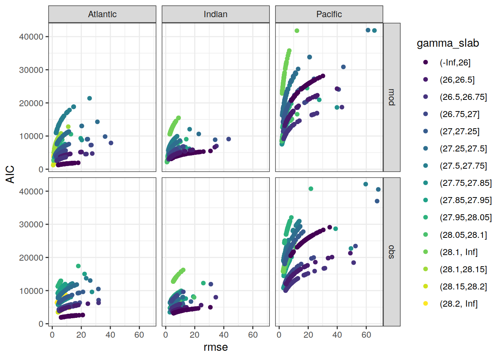

eMLR - model fitting
Jens Daniel Müller
04 June, 2021
Last updated: 2021-06-04
Checks: 7 0
Knit directory: emlr_obs_v_XXX/
This reproducible R Markdown analysis was created with workflowr (version 1.6.2). The Checks tab describes the reproducibility checks that were applied when the results were created. The Past versions tab lists the development history.
Great! Since the R Markdown file has been committed to the Git repository, you know the exact version of the code that produced these results.
Great job! The global environment was empty. Objects defined in the global environment can affect the analysis in your R Markdown file in unknown ways. For reproduciblity it’s best to always run the code in an empty environment.
The command set.seed(20200707) was run prior to running the code in the R Markdown file. Setting a seed ensures that any results that rely on randomness, e.g. subsampling or permutations, are reproducible.
Great job! Recording the operating system, R version, and package versions is critical for reproducibility.
Nice! There were no cached chunks for this analysis, so you can be confident that you successfully produced the results during this run.
Great job! Using relative paths to the files within your workflowr project makes it easier to run your code on other machines.
Great! You are using Git for version control. Tracking code development and connecting the code version to the results is critical for reproducibility.
The results in this page were generated with repository version 64a0608. See the Past versions tab to see a history of the changes made to the R Markdown and HTML files.
Note that you need to be careful to ensure that all relevant files for the analysis have been committed to Git prior to generating the results (you can use wflow_publish or wflow_git_commit). workflowr only checks the R Markdown file, but you know if there are other scripts or data files that it depends on. Below is the status of the Git repository when the results were generated:
Ignored files:
Ignored: .Rhistory
Ignored: .Rproj.user/
Unstaged changes:
Modified: code/Workflowr_project_managment.R
Note that any generated files, e.g. HTML, png, CSS, etc., are not included in this status report because it is ok for generated content to have uncommitted changes.
These are the previous versions of the repository in which changes were made to the R Markdown (analysis/eMLR_model_fitting.Rmd) and HTML (docs/eMLR_model_fitting.html) files. If you’ve configured a remote Git repository (see ?wflow_git_remote), click on the hyperlinks in the table below to view the files as they were in that past version.
| File | Version | Author | Date | Message |
|---|---|---|---|---|
| html | 207339d | jens-daniel-mueller | 2021-06-03 | Build site. |
| html | 315710b | jens-daniel-mueller | 2021-06-03 | include anomalous changes |
| html | be90356 | jens-daniel-mueller | 2021-06-02 | Build site. |
| html | d37a85d | jens-daniel-mueller | 2021-05-31 | Build site. |
| html | 4b7a5ee | jens-daniel-mueller | 2021-05-28 | Build site. |
| Rmd | a61014f | jens-daniel-mueller | 2021-05-28 | test run with cstar target variable |
| html | 12b455a | jens-daniel-mueller | 2021-05-27 | Build site. |
| Rmd | ee13efb | jens-daniel-mueller | 2021-05-27 | optional source of local params fully implemented |
| html | 8c736a6 | jens-daniel-mueller | 2021-05-27 | Build site. |
| Rmd | dc8e4e1 | jens-daniel-mueller | 2021-05-27 | optional source of local params implemented |
| html | 25bd183 | jens-daniel-mueller | 2021-05-26 | Build site. |
| Rmd | e2b3434 | jens-daniel-mueller | 2021-05-26 | generate seperate output |
| html | b79cb2d | jens-daniel-mueller | 2021-05-20 | Build site. |
| Rmd | 8adf952 | jens-daniel-mueller | 2021-05-20 | parallelisation tested, not succesful |
| html | 62bd574 | jens-daniel-mueller | 2021-05-20 | Build site. |
| html | 7c56c39 | jens-daniel-mueller | 2021-05-19 | Build site. |
| html | 0de759e | jens-daniel-mueller | 2021-05-13 | Build site. |
| html | 52e7583 | jens-daniel-mueller | 2021-05-12 | Build site. |
| html | 969e631 | jens-daniel-mueller | 2021-05-12 | Build site. |
| html | d2a83bc | jens-daniel-mueller | 2021-04-16 | Build site. |
| html | c0a47df | jens-daniel-mueller | 2021-04-16 | Build site. |
| html | 50290e8 | jens-daniel-mueller | 2021-04-16 | overlapping eras |
| html | a00ec94 | jens-daniel-mueller | 2021-04-16 | Build site. |
| html | b6fe355 | jens-daniel-mueller | 2021-04-16 | Build site. |
| html | 81b7c6d | jens-daniel-mueller | 2021-04-16 | Build site. |
| html | ddec5b7 | jens-daniel-mueller | 2021-04-15 | Build site. |
| html | 29edae5 | jens-daniel-mueller | 2021-04-14 | Build site. |
| html | 099d566 | jens-daniel-mueller | 2021-04-14 | Build site. |
| html | bb44686 | jens-daniel-mueller | 2021-04-14 | Build site. |
| html | bf40480 | jens-daniel-mueller | 2021-04-13 | Build site. |
| html | 9f31fe3 | jens-daniel-mueller | 2021-04-13 | Build site. |
| html | c98be84 | jens-daniel-mueller | 2021-04-13 | Build site. |
| html | 338dd3c | jens-daniel-mueller | 2021-04-09 | Build site. |
| html | a79ca2c | jens-daniel-mueller | 2021-04-09 | included model data |
| html | 7831fd3 | jens-daniel-mueller | 2021-04-09 | Build site. |
| html | 20b26d4 | jens-daniel-mueller | 2021-04-08 | Build site. |
| html | c0895f8 | jens-daniel-mueller | 2021-04-07 | Build site. |
| html | 156d5b7 | jens-daniel-mueller | 2021-04-07 | Build site. |
| html | eb827c9 | jens-daniel-mueller | 2021-04-07 | Build site. |
| html | d3c3fde | jens-daniel-mueller | 2021-03-26 | Build site. |
| Rmd | 88fa519 | jens-daniel-mueller | 2021-03-26 | included model data |
| html | 594d503 | jens-daniel-mueller | 2021-03-26 | Build site. |
| Rmd | e4ef0f6 | jens-daniel-mueller | 2021-03-26 | included model data |
| html | 06bfaf7 | jens-daniel-mueller | 2021-03-26 | Build site. |
| Rmd | 6d2102a | jens-daniel-mueller | 2021-03-26 | included model data |
| html | 2eb881a | jens-daniel-mueller | 2021-03-26 | Build site. |
| Rmd | a9e976a | jens-daniel-mueller | 2021-03-26 | included model data |
| html | 03b6009 | jens-daniel-mueller | 2021-03-23 | removed before copying template |
| html | de6256b | jens-daniel-mueller | 2021-03-23 | Build site. |
| html | f155edd | jens-daniel-mueller | 2021-03-23 | Build site. |
| html | 380d215 | jens-daniel-mueller | 2021-03-21 | Build site. |
| html | 33b385b | jens-daniel-mueller | 2021-03-20 | Build site. |
| Rmd | 6c5618b | jens-daniel-mueller | 2021-03-20 | rerun with vif threshold |
| html | 108d6b2 | jens-daniel-mueller | 2021-03-20 | Build site. |
| Rmd | 2b99ba0 | jens-daniel-mueller | 2021-03-20 | included vif removel option |
| html | 330dcd0 | jens-daniel-mueller | 2021-03-20 | Build site. |
| Rmd | 4df8990 | jens-daniel-mueller | 2021-03-20 | added vif calculation and plots |
| html | 83a13de | jens-daniel-mueller | 2021-03-20 | Build site. |
| html | cf98c6d | jens-daniel-mueller | 2021-03-16 | Build site. |
| html | a1d52ff | jens-daniel-mueller | 2021-03-15 | Build site. |
| html | 0bade3b | jens-daniel-mueller | 2021-03-15 | Build site. |
| html | 27c1f4b | jens-daniel-mueller | 2021-03-14 | Build site. |
| html | af75ebf | jens-daniel-mueller | 2021-03-14 | Build site. |
| html | 5017709 | jens-daniel-mueller | 2021-03-11 | Build site. |
| html | 585b07f | jens-daniel-mueller | 2021-03-11 | Build site. |
| html | 6482ed7 | jens-daniel-mueller | 2021-03-11 | Build site. |
| html | 85a5ed2 | jens-daniel-mueller | 2021-03-10 | Build site. |
| html | 00688a1 | jens-daniel-mueller | 2021-03-05 | Build site. |
| html | 6c0bec6 | jens-daniel-mueller | 2021-03-05 | Build site. |
| html | 3c2ec33 | jens-daniel-mueller | 2021-03-05 | Build site. |
| html | af70b94 | jens-daniel-mueller | 2021-03-04 | Build site. |
| Rmd | c9cf1fd | jens-daniel-mueller | 2021-03-04 | rebuild with NA in Cant replaced by 0 |
| html | 27ae473 | jens-daniel-mueller | 2021-02-24 | Build site. |
| Rmd | 7f77d91 | jens-daniel-mueller | 2021-02-24 | removed log10 color scale |
| html | fec3558 | jens-daniel-mueller | 2021-02-24 | Build site. |
| Rmd | 9ebedac | jens-daniel-mueller | 2021-02-24 | latitudinal residual plots |
| html | 4bc00ea | jens-daniel-mueller | 2021-02-24 | Build site. |
| Rmd | de11bfe | jens-daniel-mueller | 2021-02-24 | clean up purrr approach and residual plots |
| html | 42eca5d | jens-daniel-mueller | 2021-02-24 | Build site. |
| Rmd | 06a2f3b | jens-daniel-mueller | 2021-02-24 | purrr residual plots by basin |
| html | a1ba577 | jens-daniel-mueller | 2021-02-24 | Build site. |
| Rmd | 9ae7d87 | jens-daniel-mueller | 2021-02-24 | loop residual plots by basin |
| html | 071743d | jens-daniel-mueller | 2021-02-24 | Build site. |
| Rmd | c45672c | jens-daniel-mueller | 2021-02-24 | added residual plots |
| html | ac1a836 | jens-daniel-mueller | 2021-02-24 | Build site. |
| Rmd | 5f655e0 | jens-daniel-mueller | 2021-02-24 | added plots back to after switching to map aproach |
| html | b03fbd3 | jens-daniel-mueller | 2021-02-24 | Build site. |
| Rmd | c69736b | jens-daniel-mueller | 2021-02-24 | added plots back to after switching to map aproach |
| html | 86406d5 | jens-daniel-mueller | 2021-02-24 | Build site. |
| Rmd | 1b3c171 | jens-daniel-mueller | 2021-02-24 | introduced purrr::map to model fitting, rebuild all |
| html | 3d3b4cc | jens-daniel-mueller | 2021-02-23 | Build site. |
| Rmd | cbfc388 | jens-daniel-mueller | 2021-02-23 | introduced purrr::map to model fitting |
| html | 7b672f7 | jens-daniel-mueller | 2021-01-11 | Build site. |
| html | 33ba23c | jens-daniel-mueller | 2021-01-07 | Build site. |
| Rmd | 0ad30ba | jens-daniel-mueller | 2021-01-07 | removed GLODAP gamma filter, target variable mapped by eras+era |
| html | 318609d | jens-daniel-mueller | 2020-12-23 | adapted more variable predictor selection |
| html | 9d0b2d0 | jens-daniel-mueller | 2020-12-23 | Build site. |
| html | 0aa2b50 | jens-daniel-mueller | 2020-12-23 | remove html before duplication |
| html | 39113c3 | jens-daniel-mueller | 2020-12-23 | Build site. |
| Rmd | bef9220 | jens-daniel-mueller | 2020-12-23 | rebuild before sensitivity test |
| html | 2886da0 | jens-daniel-mueller | 2020-12-19 | Build site. |
| html | 02f0ee9 | jens-daniel-mueller | 2020-12-18 | cleaned up for copying template |
| html | 965dba3 | jens-daniel-mueller | 2020-12-18 | Build site. |
| html | 5d452fe | jens-daniel-mueller | 2020-12-18 | Build site. |
| Rmd | ca65bf5 | jens-daniel-mueller | 2020-12-18 | rebuild after final cleaning |
| html | 7bcb4eb | jens-daniel-mueller | 2020-12-18 | Build site. |
| html | d397028 | jens-daniel-mueller | 2020-12-18 | Build site. |
| Rmd | 7e1b1c0 | jens-daniel-mueller | 2020-12-18 | rebuild without na predictors |
| html | 7131186 | jens-daniel-mueller | 2020-12-17 | Build site. |
| Rmd | 737d904 | jens-daniel-mueller | 2020-12-17 | rebuild without na predictors |
| html | 22b07fb | jens-daniel-mueller | 2020-12-17 | Build site. |
| html | a84ff3c | jens-daniel-mueller | 2020-12-17 | Build site. |
| Rmd | 40369db | jens-daniel-mueller | 2020-12-17 | model selection criterion added |
| html | 5b48ef5 | jens-daniel-mueller | 2020-12-17 | Build site. |
| Rmd | e6ed2bc | jens-daniel-mueller | 2020-12-17 | plotted model results |
| html | f3a708f | jens-daniel-mueller | 2020-12-17 | Build site. |
| Rmd | 7c8ace9 | jens-daniel-mueller | 2020-12-17 | new MLR fitting routine, rmse corrected |
| html | e4ca289 | jens-daniel-mueller | 2020-12-16 | Build site. |
| Rmd | 3d5a3e2 | jens-daniel-mueller | 2020-12-16 | new MLR fitting routine |
| html | 158fe26 | jens-daniel-mueller | 2020-12-15 | Build site. |
| html | 7a9a4cb | jens-daniel-mueller | 2020-12-15 | Build site. |
| html | 61b263c | jens-daniel-mueller | 2020-12-15 | Build site. |
| html | 4d612dd | jens-daniel-mueller | 2020-12-15 | Build site. |
| html | e91cebd | jens-daniel-mueller | 2020-12-15 | Build site. |
| Rmd | d7992c4 | jens-daniel-mueller | 2020-12-15 | eMLR target variable selection |
| html | 953caf3 | jens-daniel-mueller | 2020-12-15 | Build site. |
| html | 42daf5c | jens-daniel-mueller | 2020-12-14 | Build site. |
| Rmd | 923aa7f | jens-daniel-mueller | 2020-12-14 | rebuild with new path and auto folder creation |
| html | 984697e | jens-daniel-mueller | 2020-12-12 | Build site. |
| html | 3ebff89 | jens-daniel-mueller | 2020-12-12 | Build site. |
| html | ba112d3 | jens-daniel-mueller | 2020-12-11 | Build site. |
| Rmd | 91b2b29 | jens-daniel-mueller | 2020-12-11 | selectable basinmask, try 5 |
| html | b01a367 | jens-daniel-mueller | 2020-12-09 | Build site. |
| Rmd | 71c63b0 | jens-daniel-mueller | 2020-12-09 | rerun with variable predictor assignment |
| html | 24a632f | jens-daniel-mueller | 2020-12-07 | Build site. |
| html | 92dca91 | jens-daniel-mueller | 2020-12-07 | Build site. |
| html | 6a8004b | jens-daniel-mueller | 2020-12-07 | Build site. |
| html | 70bf1a5 | jens-daniel-mueller | 2020-12-07 | Build site. |
| html | 7555355 | jens-daniel-mueller | 2020-12-07 | Build site. |
| html | 143d6fa | jens-daniel-mueller | 2020-12-07 | Build site. |
| html | abc6818 | jens-daniel-mueller | 2020-12-03 | Build site. |
| Rmd | 992ba15 | jens-daniel-mueller | 2020-12-03 | rebuild with variable inventory depth |
| html | c8c2e7b | jens-daniel-mueller | 2020-12-03 | Build site. |
| Rmd | 83203db | jens-daniel-mueller | 2020-12-03 | calculate cant with variable inventory depth |
| html | 090e4d5 | jens-daniel-mueller | 2020-12-02 | Build site. |
| html | 7c25f7a | jens-daniel-mueller | 2020-12-02 | Build site. |
| html | ec8dc38 | jens-daniel-mueller | 2020-12-02 | Build site. |
| html | c987de1 | jens-daniel-mueller | 2020-12-02 | Build site. |
| html | f8358f8 | jens-daniel-mueller | 2020-12-02 | Build site. |
| html | b03ddb8 | jens-daniel-mueller | 2020-12-02 | Build site. |
| Rmd | 9183e8f | jens-daniel-mueller | 2020-12-02 | revised assignment of era to eras |
| html | 22d0127 | jens-daniel-mueller | 2020-12-01 | Build site. |
| html | 0ff728b | jens-daniel-mueller | 2020-12-01 | Build site. |
| html | 91435ae | jens-daniel-mueller | 2020-12-01 | Build site. |
| Rmd | 17d09be | jens-daniel-mueller | 2020-12-01 | auto eras naming |
| html | cf19652 | jens-daniel-mueller | 2020-11-30 | Build site. |
| Rmd | 0895ad6 | jens-daniel-mueller | 2020-11-30 | rebuild with all plot output |
| Rmd | 2842970 | jens-daniel-mueller | 2020-11-30 | cleaned for eMLR part only |
| html | 196be51 | jens-daniel-mueller | 2020-11-30 | Build site. |
| Rmd | 7a4b015 | jens-daniel-mueller | 2020-11-30 | first rebuild on ETH server |
| Rmd | bc61ce3 | Jens Müller | 2020-11-30 | Initial commit |
1 Version ID
The results displayed on this site correspond to the Version_ID: v_XXX
2 Required data
Required are:
- cleaned and prepared GLODAPv2_2020 file
GLODAP <-
read_csv(paste(path_version_data,
"GLODAPv2.2020_MLR_fitting_ready.csv",
sep = ""))3 Predictor combinations
Find all possible combinations of following considered predictor variables:
- sal, temp, aou, nitrate, silicate, phosphate, phosphate_star
# the following code is a workaround to find all predictor combinations
# using the olsrr package and fit all models for one era, slab, and basin
i_basin <- unique(GLODAP$basin)[1]
i_era <- unique(GLODAP$era)[1]
# subset one basin and era for fitting
GLODAP_basin_era <- GLODAP %>%
filter(basin == i_basin, era == i_era,
data_source == "obs")
i_gamma_slab <- unique(GLODAP_basin_era$gamma_slab)[3]
print(i_gamma_slab)
# subset one gamma slab
GLODAP_basin_era_slab <- GLODAP_basin_era %>%
filter(gamma_slab == i_gamma_slab)
# fit the full linear model, i.e. all predictor combinations
lm_full <- lm(paste(
params_local$MLR_target,
paste(params_local$MLR_predictors, collapse = " + "),
sep = " ~ "
),
data = GLODAP_basin_era_slab)
# fit linear models for all possible predictor combinations
# unfortunately, this functions does not provide model coefficients (yet)
lm_all <- ols_step_all_possible(lm_full)
# convert to tibble
lm_all <- as_tibble(lm_all)
# format model formula
lm_all <- lm_all %>%
select(n, predictors) %>%
mutate(model = str_replace_all(predictors, " ", " + "),
model = paste(params_local$MLR_target, "~", model))
# remove helper objects
rm(i_gamma_slab,
i_era,
i_basin,
GLODAP_basin_era,
GLODAP_basin_era_slab,
lm_full)4 Apply predictor threshold
Select combinations with a total number of predictors in the range:
- Minimum: 2
- Maximum: 5
lm_all <- lm_all %>%
filter(n >= params_local$MLR_predictors_min,
n <= params_local$MLR_predictors_max)This results in a total number of MLR models of:
- 112
5 Fit all models
Individual linear regression models were fitted for the chosen target variable:
- cstar_tref
as a function of each predictor combination. Fitting was performed separately within each basin, era, and slab. Model diagnostics, such as the root mean squared error (RMSE), were calculated for each fitted model.
library(furrr)
library(purrr)
map(c("hello", "world"), ~.x)
future_map(c("hello", "world"), ~.x)
library(tictoc)
plan(sequential)
tic()
nothingness <- future_map(c(2, 2, 2), ~Sys.sleep(.x))
toc()
plan(multisession, workers = 3)
tic()
nothingness <- future_map(c(2, 2, 2), ~Sys.sleep(.x))
toc()
future_map_dbl(1:4, function(x){
Sys.sleep(1)
x^2
}, .progress = TRUE)# prepare nested data frame
GLODAP %>%
filter_all(any_vars(is.na(.)))
GLODAP_nested <- GLODAP %>%
# filter(gamma_slab %in% unique(GLODAP$gamma_slab)[c(5,6)]) %>%
nest(data = !c(gamma_slab, era, basin, data_source))
# expand with model definitions
GLODAP_nested_lm <- expand_grid(
GLODAP_nested,
lm_all#[1:3,]
)
# fit models and extract tidy model output
GLODAP_nested_lm_fit <- GLODAP_nested_lm %>%
mutate(
fit = map2(.x = data, .y = model,
~ lm(as.formula(.y), data = .x)),
tidied = map(fit, tidy),
glanced = map(fit, glance),
augmented = map(fit, augment),
vif = map(fit, ols_vif_tol)
)
# test parallel processing
# expand with model definitions
# test multidplyr
# library(parallel)
# library(multidplyr)
#
# n_cores <- detectCores()
# system.time(
# cluster <- new_cluster(n_cores - 2)
# )
#
# cluster
#
# system.time(
# GLODAP_nested_lm_part <-
# GLODAP_nested_lm %>%
# #group_by(gamma_slab, era, basin, data_source, model, predictors, n) %>%
# partition(cluster)
# )
#
#
# GLODAP_nested_lm
# GLODAP_nested_lm_part
#
# system.time(cluster %>%
# cluster_library(c("tidyverse",
# "broom",
# "olsrr",
# "purrr")))
#
# cluster_call(cluster, search())
#
# system.time(
# GLODAP_nested_lm_fit <- GLODAP_nested_lm_part %>%
# mutate(
# fit = map2(.x = data, .y = model,
# ~ lm(as.formula(.y), data = .x)),
# tidied = map(fit, tidy),
# glanced = map(fit, glance),
# augmented = map(fit, augment),
# vif = map(fit, ols_vif_tol)
# )
# )
#
# system.time(
# # extract glanced model output (model diagnostics, such as AIC)
# GLODAP_glanced <- GLODAP_nested_lm_fit %>%
# select(-c(data, fit, tidied, augmented, vif))
# # unnest(glanced) %>%
# # rename(n_predictors = n)
# )
#
#
# system.time(
# GLODAP_nested_lm_fit <- GLODAP_nested_lm_fit %>%
# collect()
# )
### test furrr
# library(furrr)
#
# plan(multisession, workers = 10)
#
# tic()
# GLODAP_nested_lm_fit_furrr <- GLODAP_nested_lm %>%
# mutate(
# fit = future_map2(.x = data, .y = model,
# ~ lm(as.formula(.y), data = .x)),
# tidied = future_map(fit, tidy),
# glanced = future_map(fit, glance),
# augmented = future_map(fit, augment),
# vif = future_map(fit, ols_vif_tol)
# )
# toc()
#
# plan(sequential)
# print(object.size(GLODAP_nested), units = "MB")
# print(object.size(GLODAP_nested_lm), units = "MB")
# print(object.size(GLODAP_nested_lm_fit), units = "MB")6 Tidy models
# extract glanced model output (model diagnostics, such as AIC)
GLODAP_glanced <- GLODAP_nested_lm_fit %>%
select(-c(data, fit, tidied, augmented, vif)) %>%
unnest(glanced) %>%
rename(n_predictors = n)
# extract tidy model output (model coefficients)
GLODAP_tidy <- GLODAP_nested_lm_fit %>%
select(-c(data, fit, glanced, augmented, vif)) %>%
unnest(tidied)
# extract augmented model output (fitted values and residuals)
GLODAP_augmented <- GLODAP_nested_lm_fit %>%
select(-c(data, fit, tidied, glanced, vif)) %>%
unnest(augmented)
# print(object.size(GLODAP_augmented), units = "MB")
# extract VIC from output
GLODAP_glanced_vif <- GLODAP_nested_lm_fit %>%
select(-c(data, fit, tidied, augmented, glanced)) %>%
unnest(vif)
# calculte max vif per model
GLODAP_glanced_vif_max <- GLODAP_glanced_vif %>%
group_by(data_source, era, basin, gamma_slab, model, n) %>%
summarise(vif_max = max(VIF)) %>%
ungroup()
# calculate RMSE from augmented output
GLODAP_glanced_rmse <- GLODAP_augmented %>%
group_by(data_source, era, basin, gamma_slab, model) %>%
summarise(rmse = sqrt(c(crossprod(.resid)) / length(.resid))) %>%
ungroup()
# add RMSE and vif_max to glanced output
GLODAP_glanced <- full_join(GLODAP_glanced, GLODAP_glanced_rmse)
GLODAP_glanced <- full_join(GLODAP_glanced, GLODAP_glanced_vif_max)
rm(GLODAP_glanced_rmse)
rm(GLODAP_glanced_vif_max)
# extract input data
GLODAP_data <- GLODAP_nested_lm_fit %>%
select(-c(fit, tidied, glanced, augmented, vif)) %>%
unnest(data)
# append input data with augmented data
GLODAP_augmented <- bind_cols(
GLODAP_data,
GLODAP_augmented %>% select(.fitted, .resid)
)
rm(GLODAP, GLODAP_nested, GLODAP_nested_lm, GLODAP_nested_lm_fit, lm_all,
GLODAP_data)7 Prepare coeffcients
Coefficients are prepared for the mapping of Cant and the chosen target variable.
7.1 VIF threshold
To avoid multicollinearity among predictors, models were excluded with a VIF above:
- 1000
After removing models affected by multicollinearity, the targeted number of MLRs (10) was undercut in following fitting units:
GLODAP_glanced_clean <- GLODAP_glanced %>%
filter(vif_max <= params_local$vif_max)
GLODAP_glanced_clean %>%
group_by(data_source, era, basin, gamma_slab) %>%
count() %>%
filter(n < params_local$MLR_number)# A tibble: 0 x 5
# Groups: data_source, era, basin, gamma_slab [0]
# … with 5 variables: data_source <chr>, era <chr>, basin <chr>,
# gamma_slab <chr>, n <int>7.2 Predictor selection
Within each basin and slab, the following number of best linear regression models was selected:
- 10
The criterion used to select the best models was:
- rmse
The criterion was summed up for two adjacent eras, and the models with lowest summed values were selected.
# calculate RMSE sum for adjacent eras
lm_all_eras <- GLODAP_glanced_clean %>%
select(data_source, basin, gamma_slab, model, era, AIC, BIC, rmse) %>%
arrange(era) %>%
group_by(data_source, basin, gamma_slab, model) %>%
mutate(eras = paste(lag(era), era, sep = " --> "),
rmse_sum = rmse + lag(rmse),
aic_sum = AIC + lag(AIC),
bic_sum = BIC + lag(BIC)
) %>%
ungroup() %>%
select(-c(era)) %>%
drop_na()
# subset models with lowest summed criterion
# chose which criterion is applied
if (params_local$MLR_criterion == "aic") {
lm_best_eras <- lm_all_eras %>%
group_by(data_source, basin, gamma_slab, eras) %>%
slice_min(order_by = aic_sum,
with_ties = FALSE,
n = params_local$MLR_number) %>%
ungroup() %>%
arrange(basin, gamma_slab, eras, model)
}
if (params_local$MLR_criterion == "bic") {
lm_best_eras <- lm_all_eras %>%
group_by(data_source, basin, gamma_slab, eras) %>%
slice_min(order_by = bic_sum,
with_ties = FALSE,
n = params_local$MLR_number) %>%
ungroup() %>%
arrange(basin, gamma_slab, eras, model)
}
if (params_local$MLR_criterion == "rmse") {
lm_best_eras <- lm_all_eras %>%
group_by(data_source, basin, gamma_slab, eras) %>%
slice_min(order_by = rmse_sum,
with_ties = FALSE,
n = params_local$MLR_number) %>%
ungroup() %>%
arrange(basin, gamma_slab, eras, model)
}
# print table
lm_best_eras %>%
kable() %>%
add_header_above() %>%
kable_styling() %>%
scroll_box(width = "100%", height = "400px")| data_source | basin | gamma_slab | model | AIC | BIC | rmse | eras | rmse_sum | aic_sum | bic_sum |
|---|---|---|---|---|---|---|---|---|---|---|
| mod | Atlantic | (-Inf,26] | cstar_tref ~ sal + aou + nitrate + phosphate + phosphate_star | 112.29226 | 125.81504 | 0.6342647 | 2000-2009 –> 2010-2019 | 5.010105 | 850.0515 | 883.3725 |
| obs | Atlantic | (-Inf,26] | cstar_tref ~ sal + aou + nitrate + phosphate + phosphate_star | 953.58240 | 974.27319 | 6.6157304 | 2000-2009 –> 2010-2019 | 14.486690 | 1420.2578 | 1456.1693 |
| mod | Atlantic | (-Inf,26] | cstar_tref ~ sal + aou + silicate + phosphate + phosphate_star | 84.13195 | 97.65473 | 0.4812490 | 2000-2009 –> 2010-2019 | 4.764612 | 816.5512 | 849.8722 |
| obs | Atlantic | (-Inf,26] | cstar_tref ~ sal + aou + silicate + phosphate + phosphate_star | 938.18570 | 958.87648 | 6.2666157 | 2000-2009 –> 2010-2019 | 14.871367 | 1416.4486 | 1452.3601 |
| mod | Atlantic | (-Inf,26] | cstar_tref ~ sal + nitrate + phosphate + phosphate_star | 118.30580 | 129.89675 | 0.6861049 | 2000-2009 –> 2010-2019 | 5.088565 | 855.5813 | 884.1421 |
| mod | Atlantic | (-Inf,26] | cstar_tref ~ sal + nitrate + silicate + phosphate + phosphate_star | 59.45820 | 72.98098 | 0.3778455 | 2000-2009 –> 2010-2019 | 4.616634 | 789.2622 | 822.5832 |
| obs | Atlantic | (-Inf,26] | cstar_tref ~ sal + temp + aou + nitrate | 957.76278 | 975.49774 | 6.7612792 | 2000-2009 –> 2010-2019 | 14.669481 | 1423.0518 | 1453.8331 |
| mod | Atlantic | (-Inf,26] | cstar_tref ~ sal + temp + aou + nitrate + phosphate | 111.84622 | 125.36900 | 0.6314971 | 2000-2009 –> 2010-2019 | 5.196442 | 860.1824 | 893.5034 |
| obs | Atlantic | (-Inf,26] | cstar_tref ~ sal + temp + aou + nitrate + phosphate | 954.21554 | 974.90633 | 6.6304956 | 2000-2009 –> 2010-2019 | 14.531160 | 1421.3806 | 1457.2921 |
| obs | Atlantic | (-Inf,26] | cstar_tref ~ sal + temp + aou + nitrate + phosphate_star | 954.27766 | 974.96845 | 6.6319462 | 2000-2009 –> 2010-2019 | 14.531619 | 1421.4264 | 1457.3379 |
| mod | Atlantic | (-Inf,26] | cstar_tref ~ sal + temp + aou + nitrate + silicate | 56.06135 | 69.58413 | 0.3654695 | 2000-2009 –> 2010-2019 | 5.186800 | 818.0585 | 851.3794 |
| obs | Atlantic | (-Inf,26] | cstar_tref ~ sal + temp + aou + nitrate + silicate | 940.38150 | 961.07229 | 6.3152552 | 2000-2009 –> 2010-2019 | 14.139991 | 1406.2912 | 1442.2027 |
| mod | Atlantic | (-Inf,26] | cstar_tref ~ sal + temp + aou + silicate + phosphate | 82.47591 | 95.99869 | 0.4734987 | 2000-2009 –> 2010-2019 | 4.570711 | 803.7872 | 837.1082 |
| mod | Atlantic | (-Inf,26] | cstar_tref ~ sal + temp + nitrate + phosphate + phosphate_star | 111.74389 | 125.26667 | 0.6308639 | 2000-2009 –> 2010-2019 | 4.955155 | 846.5406 | 879.8615 |
| obs | Atlantic | (-Inf,26] | cstar_tref ~ sal + temp + nitrate + phosphate + phosphate_star | 954.55315 | 975.24394 | 6.6383826 | 2000-2009 –> 2010-2019 | 14.558972 | 1422.0457 | 1457.9572 |
| mod | Atlantic | (-Inf,26] | cstar_tref ~ sal + temp + nitrate + silicate + phosphate_star | 55.96190 | 69.48468 | 0.3651134 | 2000-2009 –> 2010-2019 | 5.223627 | 819.8797 | 853.2006 |
| mod | Atlantic | (-Inf,26] | cstar_tref ~ sal + temp + silicate + phosphate + phosphate_star | 82.29310 | 95.81588 | 0.4726508 | 2000-2009 –> 2010-2019 | 5.141562 | 836.2592 | 869.5802 |
| obs | Atlantic | (-Inf,26] | cstar_tref ~ temp + aou + nitrate + silicate + phosphate | 956.80103 | 977.49182 | 6.6911343 | 2000-2009 –> 2010-2019 | 14.958066 | 1429.8573 | 1465.7688 |
| obs | Atlantic | (-Inf,26] | cstar_tref ~ temp + aou + nitrate + silicate + phosphate_star | 955.93011 | 976.62090 | 6.6706465 | 2000-2009 –> 2010-2019 | 14.927699 | 1428.8309 | 1464.7424 |
| obs | Atlantic | (-Inf,26] | cstar_tref ~ temp + nitrate + silicate + phosphate + phosphate_star | 953.00448 | 973.69527 | 6.6022816 | 2000-2009 –> 2010-2019 | 14.829925 | 1425.4414 | 1461.3529 |
| obs | Atlantic | (26,26.5] | cstar_tref ~ aou + nitrate + phosphate + phosphate_star | 4325.39121 | 4352.44383 | 6.0207564 | 2000-2009 –> 2010-2019 | 11.745694 | 8216.1735 | 8269.7363 |
| obs | Atlantic | (26,26.5] | cstar_tref ~ aou + nitrate + silicate + phosphate + phosphate_star | 4326.06528 | 4357.62666 | 6.0148106 | 2000-2009 –> 2010-2019 | 11.705801 | 8211.5561 | 8274.0460 |
| mod | Atlantic | (26,26.5] | cstar_tref ~ sal + aou + nitrate + phosphate + phosphate_star | 2261.45145 | 2289.47866 | 3.8794480 | 2000-2009 –> 2010-2019 | 7.739179 | 3843.0089 | 3896.5542 |
| obs | Atlantic | (26,26.5] | cstar_tref ~ sal + aou + nitrate + phosphate + phosphate_star | 4215.23834 | 4246.79972 | 5.5380445 | 2000-2009 –> 2010-2019 | 11.258274 | 8107.0120 | 8169.5019 |
| mod | Atlantic | (26,26.5] | cstar_tref ~ sal + aou + silicate + phosphate + phosphate_star | 2227.58567 | 2255.61288 | 3.7205938 | 2000-2009 –> 2010-2019 | 7.917931 | 3856.6038 | 3910.1492 |
| mod | Atlantic | (26,26.5] | cstar_tref ~ sal + temp + aou + nitrate + phosphate | 2265.42612 | 2293.45333 | 3.8985313 | 2000-2009 –> 2010-2019 | 8.060182 | 3889.6114 | 3943.1568 |
| obs | Atlantic | (26,26.5] | cstar_tref ~ sal + temp + aou + nitrate + phosphate | 4232.28338 | 4263.84477 | 5.6088330 | 2000-2009 –> 2010-2019 | 11.466154 | 8153.0927 | 8215.5827 |
| mod | Atlantic | (26,26.5] | cstar_tref ~ sal + temp + aou + nitrate + phosphate_star | 2265.86306 | 2293.89027 | 3.9006349 | 2000-2009 –> 2010-2019 | 8.108134 | 3896.2498 | 3949.7952 |
| obs | Atlantic | (26,26.5] | cstar_tref ~ sal + temp + aou + nitrate + phosphate_star | 4233.91545 | 4265.47683 | 5.6156583 | 2000-2009 –> 2010-2019 | 11.560436 | 8172.8953 | 8235.3852 |
| mod | Atlantic | (26,26.5] | cstar_tref ~ sal + temp + aou + nitrate + silicate | 2296.30561 | 2324.33282 | 4.0500236 | 2000-2009 –> 2010-2019 | 8.556971 | 3965.6057 | 4019.1511 |
| mod | Atlantic | (26,26.5] | cstar_tref ~ sal + temp + aou + silicate + phosphate | 2231.70410 | 2259.73131 | 3.7395593 | 2000-2009 –> 2010-2019 | 8.333332 | 3911.8044 | 3965.3497 |
| mod | Atlantic | (26,26.5] | cstar_tref ~ sal + temp + aou + silicate + phosphate_star | 2232.59005 | 2260.61726 | 3.7436517 | 2000-2009 –> 2010-2019 | 8.428163 | 3923.7613 | 3977.3066 |
| mod | Atlantic | (26,26.5] | cstar_tref ~ sal + temp + nitrate + phosphate + phosphate_star | 2267.00316 | 2295.03037 | 3.9061290 | 2000-2009 –> 2010-2019 | 8.175248 | 3905.6190 | 3959.1643 |
| obs | Atlantic | (26,26.5] | cstar_tref ~ sal + temp + nitrate + phosphate + phosphate_star | 4244.07535 | 4275.63673 | 5.6583342 | 2000-2009 –> 2010-2019 | 11.695638 | 8201.9900 | 8264.4799 |
| mod | Atlantic | (26,26.5] | cstar_tref ~ sal + temp + nitrate + silicate + phosphate_star | 2222.61516 | 2250.64237 | 3.6978325 | 2000-2009 –> 2010-2019 | 8.529351 | 3931.2753 | 3984.8207 |
| mod | Atlantic | (26,26.5] | cstar_tref ~ sal + temp + silicate + phosphate + phosphate_star | 2233.03616 | 2261.06337 | 3.7457141 | 2000-2009 –> 2010-2019 | 8.453502 | 3927.0128 | 3980.5582 |
| obs | Atlantic | (26,26.5] | cstar_tref ~ temp + aou + nitrate + phosphate | 4324.95725 | 4352.00987 | 6.0188098 | 2000-2009 –> 2010-2019 | 11.877407 | 8244.0337 | 8297.5965 |
| obs | Atlantic | (26,26.5] | cstar_tref ~ temp + aou + nitrate + silicate + phosphate | 4325.54147 | 4357.10285 | 6.0124634 | 2000-2009 –> 2010-2019 | 11.772668 | 8225.8530 | 8288.3429 |
| obs | Atlantic | (26,26.5] | cstar_tref ~ temp + aou + nitrate + silicate + phosphate_star | 4326.18879 | 4357.75017 | 6.0153642 | 2000-2009 –> 2010-2019 | 11.833394 | 8238.7465 | 8301.2364 |
| obs | Atlantic | (26,26.5] | cstar_tref ~ temp + nitrate + silicate + phosphate + phosphate_star | 4327.39660 | 4358.95798 | 6.0207805 | 2000-2009 –> 2010-2019 | 11.901160 | 8253.0229 | 8315.5128 |
| mod | Atlantic | (26.5,26.75] | cstar_tref ~ sal + aou + nitrate + silicate + phosphate | 3054.35648 | 3084.20027 | 4.3782061 | 2000-2009 –> 2010-2019 | 7.768319 | 5396.6616 | 5455.1287 |
| obs | Atlantic | (26.5,26.75] | cstar_tref ~ sal + temp + aou + nitrate + phosphate | 5273.54260 | 5306.77571 | 5.2996856 | 2000-2009 –> 2010-2019 | 11.010606 | 9340.3532 | 9404.8275 |
| obs | Atlantic | (26.5,26.75] | cstar_tref ~ sal + temp + aou + nitrate + phosphate_star | 5271.80054 | 5305.03365 | 5.2942703 | 2000-2009 –> 2010-2019 | 11.021777 | 9342.3290 | 9406.8034 |
| mod | Atlantic | (26.5,26.75] | cstar_tref ~ sal + temp + aou + silicate + phosphate | 3009.98468 | 3039.82847 | 4.1970429 | 2000-2009 –> 2010-2019 | 7.561350 | 5345.5502 | 5404.0173 |
| mod | Atlantic | (26.5,26.75] | cstar_tref ~ sal + temp + aou + silicate + phosphate_star | 3017.03074 | 3046.87452 | 4.2253020 | 2000-2009 –> 2010-2019 | 7.554806 | 5343.4248 | 5401.8919 |
| obs | Atlantic | (26.5,26.75] | cstar_tref ~ sal + temp + aou + silicate + phosphate_star | 5349.69681 | 5382.92991 | 5.5419085 | 2000-2009 –> 2010-2019 | 11.264205 | 9419.0586 | 9483.5330 |
| obs | Atlantic | (26.5,26.75] | cstar_tref ~ sal + temp + nitrate + phosphate + phosphate_star | 5268.89048 | 5302.12359 | 5.2852366 | 2000-2009 –> 2010-2019 | 11.015582 | 9340.0543 | 9404.5286 |
| mod | Atlantic | (26.5,26.75] | cstar_tref ~ sal + temp + silicate + phosphate + phosphate_star | 3018.15832 | 3048.00211 | 4.2298420 | 2000-2009 –> 2010-2019 | 7.558510 | 5344.3309 | 5402.7980 |
| obs | Atlantic | (26.5,26.75] | cstar_tref ~ temp + aou + nitrate + phosphate | 5316.53921 | 5345.02473 | 5.4414957 | 2000-2009 –> 2010-2019 | 11.158866 | 9382.7969 | 9438.0606 |
| obs | Atlantic | (26.5,26.75] | cstar_tref ~ temp + aou + nitrate + phosphate_star | 5313.33991 | 5341.82543 | 5.4312887 | 2000-2009 –> 2010-2019 | 11.171205 | 9384.6431 | 9439.9068 |
| mod | Atlantic | (26.5,26.75] | cstar_tref ~ temp + aou + nitrate + silicate + phosphate | 2982.48277 | 3012.32655 | 4.0885399 | 2000-2009 –> 2010-2019 | 7.605620 | 5357.2172 | 5415.6843 |
| obs | Atlantic | (26.5,26.75] | cstar_tref ~ temp + aou + nitrate + silicate + phosphate | 5318.06944 | 5351.30255 | 5.4399957 | 2000-2009 –> 2010-2019 | 11.157249 | 9386.3009 | 9450.7753 |
| mod | Atlantic | (26.5,26.75] | cstar_tref ~ temp + aou + nitrate + silicate + phosphate_star | 2987.36978 | 3017.21356 | 4.1076135 | 2000-2009 –> 2010-2019 | 7.566666 | 5347.4309 | 5405.8980 |
| obs | Atlantic | (26.5,26.75] | cstar_tref ~ temp + aou + nitrate + silicate + phosphate_star | 5314.92912 | 5348.16223 | 5.4299795 | 2000-2009 –> 2010-2019 | 11.161763 | 9386.4146 | 9450.8889 |
| mod | Atlantic | (26.5,26.75] | cstar_tref ~ temp + aou + silicate + phosphate | 3013.50981 | 3039.09020 | 4.2191861 | 2000-2009 –> 2010-2019 | 7.744437 | 5388.2909 | 5438.4055 |
| mod | Atlantic | (26.5,26.75] | cstar_tref ~ temp + aou + silicate + phosphate_star | 3019.94819 | 3045.52858 | 4.2451367 | 2000-2009 –> 2010-2019 | 7.723867 | 5383.0127 | 5433.1274 |
| obs | Atlantic | (26.5,26.75] | cstar_tref ~ temp + nitrate + phosphate + phosphate_star | 5311.33844 | 5339.82396 | 5.4249130 | 2000-2009 –> 2010-2019 | 11.165604 | 9382.8147 | 9438.0784 |
| mod | Atlantic | (26.5,26.75] | cstar_tref ~ temp + nitrate + silicate + phosphate + phosphate_star | 2991.42714 | 3021.27093 | 4.1235167 | 2000-2009 –> 2010-2019 | 7.563560 | 5346.6279 | 5405.0950 |
| obs | Atlantic | (26.5,26.75] | cstar_tref ~ temp + nitrate + silicate + phosphate + phosphate_star | 5312.91341 | 5346.14651 | 5.4235600 | 2000-2009 –> 2010-2019 | 11.156006 | 9384.5470 | 9449.0214 |
| mod | Atlantic | (26.5,26.75] | cstar_tref ~ temp + silicate + phosphate + phosphate_star | 3021.00112 | 3046.58151 | 4.2493959 | 2000-2009 –> 2010-2019 | 7.722878 | 5382.7339 | 5432.8485 |
| mod | Atlantic | (26.75,27] | cstar_tref ~ aou + nitrate + silicate + phosphate + phosphate_star | 4859.81290 | 4894.38089 | 2.5373398 | 2000-2009 –> 2010-2019 | 4.914523 | 8529.5804 | 8596.9406 |
| mod | Atlantic | (26.75,27] | cstar_tref ~ sal + aou + nitrate + silicate + phosphate | 4953.01707 | 4987.58506 | 2.6546613 | 2000-2009 –> 2010-2019 | 5.109834 | 8674.4342 | 8741.7944 |
| mod | Atlantic | (26.75,27] | cstar_tref ~ sal + aou + silicate + phosphate | 5111.29253 | 5140.92223 | 2.8692344 | 2000-2009 –> 2010-2019 | 5.324455 | 8830.7406 | 8888.4780 |
| mod | Atlantic | (26.75,27] | cstar_tref ~ sal + temp + aou + silicate + phosphate | 5097.62291 | 5132.19090 | 2.8475131 | 2000-2009 –> 2010-2019 | 5.050349 | 8645.5177 | 8712.8779 |
| obs | Atlantic | (26.75,27] | cstar_tref ~ sal + temp + aou + silicate + phosphate | 6520.35264 | 6555.27798 | 4.8519498 | 2000-2009 –> 2010-2019 | 10.634091 | 11644.0300 | 11711.7912 |
| mod | Atlantic | (26.75,27] | cstar_tref ~ sal + temp + aou + silicate + phosphate_star | 5118.72850 | 5153.29649 | 2.8768084 | 2000-2009 –> 2010-2019 | 5.102644 | 8683.2416 | 8750.6019 |
| obs | Atlantic | (26.75,27] | cstar_tref ~ sal + temp + aou + silicate + phosphate_star | 6524.40835 | 6559.33370 | 4.8610266 | 2000-2009 –> 2010-2019 | 10.589203 | 11632.9888 | 11700.7500 |
| obs | Atlantic | (26.75,27] | cstar_tref ~ sal + temp + nitrate + silicate + phosphate_star | 6530.64593 | 6565.57128 | 4.8750195 | 2000-2009 –> 2010-2019 | 10.594697 | 11636.8360 | 11704.5972 |
| mod | Atlantic | (26.75,27] | cstar_tref ~ sal + temp + silicate + phosphate + phosphate_star | 5127.17028 | 5161.73827 | 2.8886102 | 2000-2009 –> 2010-2019 | 5.131342 | 8703.7837 | 8771.1439 |
| obs | Atlantic | (26.75,27] | cstar_tref ~ sal + temp + silicate + phosphate + phosphate_star | 6525.45295 | 6560.37830 | 4.8633672 | 2000-2009 –> 2010-2019 | 10.588957 | 11633.3064 | 11701.0676 |
| mod | Atlantic | (26.75,27] | cstar_tref ~ temp + aou + nitrate + silicate + phosphate | 4855.65043 | 4890.21842 | 2.5322230 | 2000-2009 –> 2010-2019 | 4.766580 | 8426.2775 | 8493.6378 |
| obs | Atlantic | (26.75,27] | cstar_tref ~ temp + aou + nitrate + silicate + phosphate | 6525.26005 | 6560.18540 | 4.8629349 | 2000-2009 –> 2010-2019 | 10.707017 | 11666.0927 | 11733.8540 |
| mod | Atlantic | (26.75,27] | cstar_tref ~ temp + aou + nitrate + silicate + phosphate_star | 4861.33315 | 4895.90114 | 2.5392112 | 2000-2009 –> 2010-2019 | 4.761082 | 8422.9937 | 8490.3540 |
| obs | Atlantic | (26.75,27] | cstar_tref ~ temp + aou + nitrate + silicate + phosphate_star | 6533.26868 | 6568.19403 | 4.8809152 | 2000-2009 –> 2010-2019 | 10.649952 | 11653.2930 | 11721.0542 |
| mod | Atlantic | (26.75,27] | cstar_tref ~ temp + aou + silicate + phosphate | 5263.06235 | 5292.69205 | 3.0883854 | 2000-2009 –> 2010-2019 | 5.392976 | 8881.2086 | 8938.9460 |
| obs | Atlantic | (26.75,27] | cstar_tref ~ temp + aou + silicate + phosphate_star | 6531.27529 | 6561.21130 | 4.8809301 | 2000-2009 –> 2010-2019 | 10.705485 | 11664.7193 | 11722.8004 |
| mod | Atlantic | (26.75,27] | cstar_tref ~ temp + nitrate + silicate + phosphate + phosphate_star | 4877.63249 | 4912.20048 | 2.5593623 | 2000-2009 –> 2010-2019 | 4.782875 | 8440.4755 | 8507.8358 |
| obs | Atlantic | (26.75,27] | cstar_tref ~ temp + nitrate + silicate + phosphate + phosphate_star | 6534.26956 | 6569.19491 | 4.8831670 | 2000-2009 –> 2010-2019 | 10.661438 | 11656.8690 | 11724.6302 |
| obs | Atlantic | (26.75,27] | cstar_tref ~ temp + nitrate + silicate + phosphate_star | 6533.35525 | 6563.29126 | 4.8856107 | 2000-2009 –> 2010-2019 | 10.688761 | 11660.8718 | 11718.9529 |
| obs | Atlantic | (26.75,27] | cstar_tref ~ temp + silicate + phosphate + phosphate_star | 6532.44931 | 6562.38532 | 4.8835715 | 2000-2009 –> 2010-2019 | 10.705910 | 11665.2804 | 11723.3615 |
| mod | Atlantic | (27,27.25] | cstar_tref ~ sal + aou + nitrate + silicate + phosphate | 6136.15839 | 6172.75711 | 2.2310096 | 2000-2009 –> 2010-2019 | 4.722001 | 11391.6386 | 11463.4098 |
| mod | Atlantic | (27,27.25] | cstar_tref ~ sal + aou + silicate + phosphate | 6345.72612 | 6377.09645 | 2.4090210 | 2000-2009 –> 2010-2019 | 4.925924 | 11622.4696 | 11683.9879 |
| mod | Atlantic | (27,27.25] | cstar_tref ~ sal + aou + silicate + phosphate + phosphate_star | 6340.44975 | 6377.04847 | 2.4026691 | 2000-2009 –> 2010-2019 | 4.762265 | 11474.1100 | 11545.8813 |
| obs | Atlantic | (27,27.25] | cstar_tref ~ sal + temp + aou + nitrate + phosphate_star | 12071.52795 | 12110.26380 | 6.0799679 | 2000-2009 –> 2010-2019 | 11.757769 | 21937.0072 | 22013.2146 |
| mod | Atlantic | (27,27.25] | cstar_tref ~ sal + temp + aou + nitrate + silicate | 6309.53127 | 6346.12999 | 2.3758651 | 2000-2009 –> 2010-2019 | 4.846796 | 11546.8345 | 11618.6058 |
| mod | Atlantic | (27,27.25] | cstar_tref ~ sal + temp + aou + silicate + phosphate | 6339.74404 | 6376.34276 | 2.4020539 | 2000-2009 –> 2010-2019 | 4.792874 | 11502.9566 | 11574.7279 |
| mod | Atlantic | (27,27.25] | cstar_tref ~ sal + temp + aou + silicate + phosphate_star | 6362.45471 | 6399.05343 | 2.4219297 | 2000-2009 –> 2010-2019 | 4.891957 | 11598.9356 | 11670.7068 |
| obs | Atlantic | (27,27.25] | cstar_tref ~ sal + temp + aou + silicate + phosphate_star | 12135.67085 | 12174.40670 | 6.1851418 | 2000-2009 –> 2010-2019 | 11.792324 | 21962.0759 | 22038.2834 |
| obs | Atlantic | (27,27.25] | cstar_tref ~ sal + temp + nitrate + phosphate + phosphate_star | 12079.66575 | 12118.40160 | 6.0932116 | 2000-2009 –> 2010-2019 | 11.796256 | 21958.9942 | 22035.2016 |
| obs | Atlantic | (27,27.25] | cstar_tref ~ sal + temp + nitrate + silicate + phosphate_star | 12157.03794 | 12195.77379 | 6.2205794 | 2000-2009 –> 2010-2019 | 11.878226 | 22011.4152 | 22087.6226 |
| mod | Atlantic | (27,27.25] | cstar_tref ~ sal + temp + silicate + phosphate + phosphate_star | 6371.91316 | 6408.51188 | 2.4302559 | 2000-2009 –> 2010-2019 | 4.935651 | 11640.3545 | 11712.1258 |
| obs | Atlantic | (27,27.25] | cstar_tref ~ sal + temp + silicate + phosphate + phosphate_star | 12137.47078 | 12176.20664 | 6.1881192 | 2000-2009 –> 2010-2019 | 11.804412 | 21968.9441 | 22045.1515 |
| obs | Atlantic | (27,27.25] | cstar_tref ~ temp + aou + nitrate + phosphate_star | 12089.56982 | 12122.77198 | 6.1126366 | 2000-2009 –> 2010-2019 | 11.839813 | 21980.0810 | 22045.4017 |
| mod | Atlantic | (27,27.25] | cstar_tref ~ temp + aou + nitrate + silicate + phosphate | 6452.59520 | 6489.19392 | 2.5024534 | 2000-2009 –> 2010-2019 | 4.917257 | 11638.2460 | 11710.0172 |
| obs | Atlantic | (27,27.25] | cstar_tref ~ temp + aou + nitrate + silicate + phosphate | 12064.28124 | 12103.01710 | 6.0681987 | 2000-2009 –> 2010-2019 | 11.849063 | 21985.9222 | 22062.1296 |
| mod | Atlantic | (27,27.25] | cstar_tref ~ temp + aou + nitrate + silicate + phosphate_star | 6446.94492 | 6483.54363 | 2.4973282 | 2000-2009 –> 2010-2019 | 4.912141 | 11632.6041 | 11704.3754 |
| obs | Atlantic | (27,27.25] | cstar_tref ~ temp + aou + nitrate + silicate + phosphate_star | 12018.81608 | 12057.55193 | 5.9948774 | 2000-2009 –> 2010-2019 | 11.658026 | 21876.2279 | 21952.4354 |
| obs | Atlantic | (27,27.25] | cstar_tref ~ temp + nitrate + phosphate + phosphate_star | 12099.34467 | 12132.54683 | 6.1286335 | 2000-2009 –> 2010-2019 | 11.884754 | 22005.5943 | 22070.9150 |
| mod | Atlantic | (27,27.25] | cstar_tref ~ temp + nitrate + silicate + phosphate + phosphate_star | 6309.02593 | 6345.62465 | 2.3754295 | 2000-2009 –> 2010-2019 | 4.837180 | 11537.9613 | 11609.7326 |
| obs | Atlantic | (27,27.25] | cstar_tref ~ temp + nitrate + silicate + phosphate + phosphate_star | 12031.49562 | 12070.23148 | 6.0152360 | 2000-2009 –> 2010-2019 | 11.702543 | 21902.1972 | 21978.4046 |
| obs | Atlantic | (27.25,27.5] | cstar_tref ~ sal + aou + nitrate + phosphate + phosphate_star | 14602.80084 | 14642.97940 | 5.7851837 | 2000-2009 –> 2010-2019 | 10.427040 | 25765.3966 | 25844.3744 |
| mod | Atlantic | (27.25,27.5] | cstar_tref ~ sal + aou + nitrate + silicate | 13139.57345 | 13174.19479 | 3.8642237 | 2000-2009 –> 2010-2019 | 7.188247 | 24763.9208 | 24832.7629 |
| mod | Atlantic | (27.25,27.5] | cstar_tref ~ sal + aou + nitrate + silicate + phosphate | 12869.51591 | 12909.90747 | 3.6485888 | 2000-2009 –> 2010-2019 | 6.884312 | 24376.5380 | 24456.8537 |
| mod | Atlantic | (27.25,27.5] | cstar_tref ~ sal + aou + nitrate + silicate + phosphate_star | 12899.06149 | 12939.45305 | 3.6714121 | 2000-2009 –> 2010-2019 | 6.988196 | 24515.7459 | 24596.0616 |
| obs | Atlantic | (27.25,27.5] | cstar_tref ~ sal + temp + aou + nitrate + phosphate | 14584.90480 | 14625.08336 | 5.7627010 | 2000-2009 –> 2010-2019 | 10.334435 | 25690.0537 | 25769.0315 |
| mod | Atlantic | (27.25,27.5] | cstar_tref ~ sal + temp + aou + nitrate + phosphate_star | 13146.99351 | 13187.38507 | 3.8686467 | 2000-2009 –> 2010-2019 | 7.036390 | 24559.9105 | 24640.2263 |
| obs | Atlantic | (27.25,27.5] | cstar_tref ~ sal + temp + aou + nitrate + phosphate_star | 14582.68716 | 14622.86573 | 5.7599211 | 2000-2009 –> 2010-2019 | 10.301826 | 25663.1310 | 25742.1088 |
| mod | Atlantic | (27.25,27.5] | cstar_tref ~ sal + temp + aou + nitrate + silicate | 13099.50775 | 13139.89931 | 3.8300675 | 2000-2009 –> 2010-2019 | 6.982432 | 24490.8562 | 24571.1720 |
| obs | Atlantic | (27.25,27.5] | cstar_tref ~ sal + temp + aou + phosphate_star | 14655.83846 | 14690.27723 | 5.8548784 | 2000-2009 –> 2010-2019 | 10.410776 | 25745.8911 | 25813.5864 |
| obs | Atlantic | (27.25,27.5] | cstar_tref ~ sal + temp + aou + silicate + phosphate | 14652.27813 | 14692.45669 | 5.8477994 | 2000-2009 –> 2010-2019 | 10.426290 | 25762.9999 | 25841.9777 |
| mod | Atlantic | (27.25,27.5] | cstar_tref ~ sal + temp + aou + silicate + phosphate_star | 12738.75224 | 12779.14381 | 3.5492686 | 2000-2009 –> 2010-2019 | 7.110750 | 24670.9108 | 24751.2266 |
| obs | Atlantic | (27.25,27.5] | cstar_tref ~ sal + temp + aou + silicate + phosphate_star | 14655.13995 | 14695.31851 | 5.8514418 | 2000-2009 –> 2010-2019 | 10.406009 | 25746.0904 | 25825.0681 |
| mod | Atlantic | (27.25,27.5] | cstar_tref ~ sal + temp + nitrate + phosphate + phosphate_star | 13151.99081 | 13192.38237 | 3.8727292 | 2000-2009 –> 2010-2019 | 6.981817 | 24482.0745 | 24562.3902 |
| obs | Atlantic | (27.25,27.5] | cstar_tref ~ sal + temp + nitrate + phosphate + phosphate_star | 14579.87164 | 14620.05020 | 5.7563936 | 2000-2009 –> 2010-2019 | 10.304647 | 25665.5869 | 25744.5647 |
| mod | Atlantic | (27.25,27.5] | cstar_tref ~ sal + temp + nitrate + silicate + phosphate_star | 12730.22114 | 12770.61270 | 3.5428836 | 2000-2009 –> 2010-2019 | 7.033811 | 24573.6982 | 24654.0140 |
| obs | Atlantic | (27.25,27.5] | cstar_tref ~ sal + temp + phosphate + phosphate_star | 14652.64392 | 14687.08269 | 5.8508103 | 2000-2009 –> 2010-2019 | 10.411483 | 25746.6499 | 25814.3451 |
| mod | Atlantic | (27.25,27.5] | cstar_tref ~ sal + temp + silicate + phosphate + phosphate_star | 12742.12163 | 12782.51319 | 3.5517935 | 2000-2009 –> 2010-2019 | 7.110263 | 24670.5306 | 24750.8464 |
| obs | Atlantic | (27.25,27.5] | cstar_tref ~ sal + temp + silicate + phosphate + phosphate_star | 14652.06389 | 14692.24245 | 5.8475268 | 2000-2009 –> 2010-2019 | 10.406072 | 25746.3090 | 25825.2868 |
| mod | Atlantic | (27.25,27.5] | cstar_tref ~ temp + nitrate + silicate + phosphate + phosphate_star | 13174.65480 | 13215.04636 | 3.8912986 | 2000-2009 –> 2010-2019 | 6.961510 | 24448.9700 | 24529.2858 |
| obs | Atlantic | (27.25,27.5] | cstar_tref ~ temp + nitrate + silicate + phosphate + phosphate_star | 14592.10416 | 14632.28272 | 5.7717350 | 2000-2009 –> 2010-2019 | 10.431166 | 25768.9613 | 25847.9390 |
| obs | Atlantic | (27.5,27.75] | cstar_tref ~ aou + nitrate + silicate + phosphate + phosphate_star | 15700.87488 | 15741.78457 | 5.2368153 | 2000-2009 –> 2010-2019 | 10.169137 | 29269.1835 | 29350.1178 |
| obs | Atlantic | (27.5,27.75] | cstar_tref ~ aou + silicate + phosphate + phosphate_star | 15708.12398 | 15743.18942 | 5.2463174 | 2000-2009 –> 2010-2019 | 10.179222 | 29274.9639 | 29344.3361 |
| mod | Atlantic | (27.5,27.75] | cstar_tref ~ sal + aou + nitrate + phosphate | 20551.64138 | 20590.19842 | 2.2950356 | 2000-2009 –> 2010-2019 | 4.675014 | 39277.0828 | 39353.5421 |
| mod | Atlantic | (27.5,27.75] | cstar_tref ~ sal + aou + nitrate + silicate + phosphate | 20028.19387 | 20073.17708 | 2.1666812 | 2000-2009 –> 2010-2019 | 4.518663 | 38658.7690 | 38747.9714 |
| mod | Atlantic | (27.5,27.75] | cstar_tref ~ sal + aou + silicate + phosphate | 20704.23515 | 20742.79219 | 2.3337159 | 2000-2009 –> 2010-2019 | 4.706481 | 39404.8292 | 39481.2884 |
| mod | Atlantic | (27.5,27.75] | cstar_tref ~ sal + aou + silicate + phosphate + phosphate_star | 20683.94639 | 20728.92961 | 2.3280256 | 2000-2009 –> 2010-2019 | 4.697834 | 39376.3313 | 39465.5337 |
| obs | Atlantic | (27.5,27.75] | cstar_tref ~ sal + aou + silicate + phosphate + phosphate_star | 15709.72142 | 15750.63111 | 5.2459035 | 2000-2009 –> 2010-2019 | 10.117612 | 29222.4368 | 29303.3710 |
| mod | Atlantic | (27.5,27.75] | cstar_tref ~ sal + temp + aou + nitrate + phosphate | 20434.08312 | 20479.06634 | 2.2651778 | 2000-2009 –> 2010-2019 | 4.642116 | 39151.0595 | 39240.2620 |
| mod | Atlantic | (27.5,27.75] | cstar_tref ~ sal + temp + aou + silicate + phosphate | 20705.17575 | 20750.15896 | 2.3334451 | 2000-2009 –> 2010-2019 | 4.697718 | 39378.4179 | 39467.6204 |
| obs | Atlantic | (27.5,27.75] | cstar_tref ~ sal + temp + aou + silicate + phosphate | 15714.11430 | 15755.02398 | 5.2504222 | 2000-2009 –> 2010-2019 | 10.131572 | 29235.5344 | 29316.4687 |
| mod | Atlantic | (27.5,27.75] | cstar_tref ~ sal + temp + aou + silicate + phosphate_star | 20532.17052 | 20577.15373 | 2.2896448 | 2000-2009 –> 2010-2019 | 4.631974 | 39129.0809 | 39218.2834 |
| obs | Atlantic | (27.5,27.75] | cstar_tref ~ sal + temp + aou + silicate + phosphate_star | 15740.23576 | 15781.14545 | 5.2773725 | 2000-2009 –> 2010-2019 | 10.189685 | 29290.2681 | 29371.2024 |
| mod | Atlantic | (27.5,27.75] | cstar_tref ~ sal + temp + nitrate + phosphate + phosphate_star | 20740.58338 | 20785.56659 | 2.3425122 | 2000-2009 –> 2010-2019 | 4.717508 | 39450.8702 | 39540.0727 |
| mod | Atlantic | (27.5,27.75] | cstar_tref ~ sal + temp + nitrate + silicate + phosphate_star | 20632.87305 | 20677.85627 | 2.3150390 | 2000-2009 –> 2010-2019 | 4.662582 | 39247.9846 | 39337.1871 |
| mod | Atlantic | (27.5,27.75] | cstar_tref ~ sal + temp + silicate + phosphate + phosphate_star | 20535.87700 | 20580.86021 | 2.2905745 | 2000-2009 –> 2010-2019 | 4.632643 | 39131.8777 | 39221.0802 |
| obs | Atlantic | (27.5,27.75] | cstar_tref ~ sal + temp + silicate + phosphate + phosphate_star | 15722.21597 | 15763.12566 | 5.2587662 | 2000-2009 –> 2010-2019 | 10.154317 | 29256.8805 | 29337.8148 |
| obs | Atlantic | (27.5,27.75] | cstar_tref ~ temp + aou + nitrate + silicate + phosphate | 15705.94674 | 15746.85643 | 5.2420237 | 2000-2009 –> 2010-2019 | 10.192556 | 29290.8240 | 29371.7582 |
| obs | Atlantic | (27.5,27.75] | cstar_tref ~ temp + aou + silicate + phosphate | 15712.64365 | 15747.70909 | 5.2509669 | 2000-2009 –> 2010-2019 | 10.201702 | 29295.7055 | 29365.0777 |
| obs | Atlantic | (27.5,27.75] | cstar_tref ~ temp + nitrate + silicate + phosphate + phosphate_star | 15714.79867 | 15755.70835 | 5.2511265 | 2000-2009 –> 2010-2019 | 10.227242 | 29322.8509 | 29403.7852 |
| obs | Atlantic | (27.5,27.75] | cstar_tref ~ temp + silicate + phosphate + phosphate_star | 15721.33696 | 15756.40240 | 5.2599217 | 2000-2009 –> 2010-2019 | 10.236040 | 29327.3920 | 29396.7642 |
| obs | Atlantic | (27.75,27.85] | cstar_tref ~ aou + nitrate + silicate + phosphate + phosphate_star | 10196.58725 | 10234.38303 | 5.4466597 | 2000-2009 –> 2010-2019 | 10.297316 | 19558.5149 | 19633.7733 |
| obs | Atlantic | (27.75,27.85] | cstar_tref ~ aou + silicate + phosphate + phosphate_star | 10194.61380 | 10227.01018 | 5.4467039 | 2000-2009 –> 2010-2019 | 10.316396 | 19566.7539 | 19631.2611 |
| mod | Atlantic | (27.75,27.85] | cstar_tref ~ sal + aou + nitrate + silicate | 5779.08816 | 5811.61523 | 1.3589349 | 2000-2009 –> 2010-2019 | 2.580797 | 10953.4621 | 11018.2331 |
| obs | Atlantic | (27.75,27.85] | cstar_tref ~ sal + aou + nitrate + silicate + phosphate | 10183.72418 | 10221.51997 | 5.4252765 | 2000-2009 –> 2010-2019 | 10.299319 | 19560.6485 | 19635.9069 |
| mod | Atlantic | (27.75,27.85] | cstar_tref ~ sal + aou + silicate + phosphate | 5546.04734 | 5578.57440 | 1.2674035 | 2000-2009 –> 2010-2019 | 2.437779 | 10583.1738 | 10647.9449 |
| obs | Atlantic | (27.75,27.85] | cstar_tref ~ sal + aou + silicate + phosphate | 10181.72639 | 10214.12277 | 5.4252801 | 2000-2009 –> 2010-2019 | 10.321402 | 19570.7431 | 19635.2503 |
| mod | Atlantic | (27.75,27.85] | cstar_tref ~ sal + nitrate + silicate + phosphate_star | 6193.31721 | 6225.84428 | 1.5382535 | 2000-2009 –> 2010-2019 | 2.929926 | 11782.5464 | 11847.3175 |
| mod | Atlantic | (27.75,27.85] | cstar_tref ~ sal + silicate + phosphate + phosphate_star | 6184.38910 | 6216.91616 | 1.5341496 | 2000-2009 –> 2010-2019 | 2.928813 | 11780.4640 | 11845.2351 |
| mod | Atlantic | (27.75,27.85] | cstar_tref ~ sal + temp + aou + nitrate + silicate | 5741.25513 | 5779.20337 | 1.3428340 | 2000-2009 –> 2010-2019 | 2.564680 | 10917.5870 | 10993.1533 |
| mod | Atlantic | (27.75,27.85] | cstar_tref ~ sal + temp + aou + silicate + phosphate | 5440.82396 | 5478.77220 | 1.2273860 | 2000-2009 –> 2010-2019 | 2.383597 | 10441.1319 | 10516.6982 |
| obs | Atlantic | (27.75,27.85] | cstar_tref ~ sal + temp + aou + silicate + phosphate | 10183.49095 | 10221.28674 | 5.4248895 | 2000-2009 –> 2010-2019 | 10.303975 | 19563.6400 | 19638.8984 |
| mod | Atlantic | (27.75,27.85] | cstar_tref ~ sal + temp + aou + silicate + phosphate_star | 5578.02769 | 5615.97593 | 1.2788242 | 2000-2009 –> 2010-2019 | 2.475167 | 10687.1153 | 10762.6815 |
| mod | Atlantic | (27.75,27.85] | cstar_tref ~ sal + temp + nitrate + silicate + phosphate_star | 5582.84368 | 5620.79192 | 1.2806684 | 2000-2009 –> 2010-2019 | 2.476849 | 10691.4970 | 10767.0632 |
| mod | Atlantic | (27.75,27.85] | cstar_tref ~ sal + temp + silicate + phosphate + phosphate_star | 5571.77721 | 5609.72545 | 1.2764347 | 2000-2009 –> 2010-2019 | 2.470336 | 10674.3494 | 10749.9156 |
| obs | Atlantic | (27.75,27.85] | cstar_tref ~ sal + temp + silicate + phosphate + phosphate_star | 10184.95569 | 10222.75148 | 5.4273201 | 2000-2009 –> 2010-2019 | 10.316751 | 19571.7087 | 19646.9671 |
| mod | Atlantic | (27.75,27.85] | cstar_tref ~ sal + temp + silicate + phosphate_star | 5659.35404 | 5691.88111 | 1.3111101 | 2000-2009 –> 2010-2019 | 2.560067 | 10903.6504 | 10968.4214 |
| obs | Atlantic | (27.75,27.85] | cstar_tref ~ temp + aou + nitrate + silicate + phosphate | 10196.28699 | 10234.08277 | 5.4461596 | 2000-2009 –> 2010-2019 | 10.304959 | 19563.4447 | 19638.7030 |
| obs | Atlantic | (27.75,27.85] | cstar_tref ~ temp + aou + silicate + phosphate | 10194.31509 | 10226.71148 | 5.4462064 | 2000-2009 –> 2010-2019 | 10.325429 | 19572.5517 | 19637.0589 |
| obs | Atlantic | (27.75,27.85] | cstar_tref ~ temp + nitrate + silicate + phosphate + phosphate_star | 10196.46505 | 10234.26084 | 5.4464562 | 2000-2009 –> 2010-2019 | 10.314236 | 19569.3808 | 19644.6391 |
| obs | Atlantic | (27.75,27.85] | cstar_tref ~ temp + silicate + phosphate + phosphate_star | 10194.49560 | 10226.89198 | 5.4465070 | 2000-2009 –> 2010-2019 | 10.336694 | 19579.7309 | 19644.2381 |
| mod | Atlantic | (27.85,27.95] | cstar_tref ~ sal + aou + nitrate + silicate | 6860.99350 | 6893.38989 | 1.9651231 | 2000-2009 –> 2010-2019 | 5.040101 | 15104.7545 | 15169.4883 |
| obs | Atlantic | (27.85,27.95] | cstar_tref ~ sal + aou + nitrate + silicate + phosphate | 21480.15144 | 21523.20472 | 5.3582114 | 2000-2009 –> 2010-2019 | 10.415012 | 41367.5301 | 41453.2291 |
| mod | Atlantic | (27.85,27.95] | cstar_tref ~ sal + aou + nitrate + silicate + phosphate_star | 6861.79000 | 6899.58579 | 1.9644000 | 2000-2009 –> 2010-2019 | 5.036448 | 15104.4648 | 15179.9875 |
| obs | Atlantic | (27.85,27.95] | cstar_tref ~ sal + aou + nitrate + silicate + phosphate_star | 20840.75537 | 20883.80865 | 4.8859575 | 2000-2009 –> 2010-2019 | 9.661054 | 40353.3772 | 40439.0761 |
| mod | Atlantic | (27.85,27.95] | cstar_tref ~ sal + aou + silicate + phosphate | 6574.11727 | 6606.51365 | 1.8000693 | 2000-2009 –> 2010-2019 | 4.728805 | 14660.1008 | 14724.8345 |
| obs | Atlantic | (27.85,27.95] | cstar_tref ~ sal + aou + silicate + phosphate_star | 20845.63540 | 20882.53821 | 4.8908106 | 2000-2009 –> 2010-2019 | 9.666479 | 40357.0398 | 40430.4961 |
| obs | Atlantic | (27.85,27.95] | cstar_tref ~ sal + nitrate + silicate + phosphate + phosphate_star | 21253.40965 | 21296.46292 | 5.1857337 | 2000-2009 –> 2010-2019 | 10.130712 | 40994.5898 | 41080.2888 |
| obs | Atlantic | (27.85,27.95] | cstar_tref ~ sal + silicate + phosphate + phosphate_star | 21295.72385 | 21332.62666 | 5.2190004 | 2000-2009 –> 2010-2019 | 10.172129 | 41045.6715 | 41119.1277 |
| mod | Atlantic | (27.85,27.95] | cstar_tref ~ sal + temp + aou + nitrate + silicate | 6674.07791 | 6711.87369 | 1.8548105 | 2000-2009 –> 2010-2019 | 4.909138 | 14898.0203 | 14973.5431 |
| mod | Atlantic | (27.85,27.95] | cstar_tref ~ sal + temp + aou + phosphate | 7051.12995 | 7083.52634 | 2.0827739 | 2000-2009 –> 2010-2019 | 5.018090 | 15144.3802 | 15209.1140 |
| mod | Atlantic | (27.85,27.95] | cstar_tref ~ sal + temp + aou + silicate + phosphate | 6211.76009 | 6249.55588 | 1.6102685 | 2000-2009 –> 2010-2019 | 4.485485 | 14240.0256 | 14315.5483 |
| obs | Atlantic | (27.85,27.95] | cstar_tref ~ sal + temp + aou + silicate + phosphate | 20685.70752 | 20728.76080 | 4.7778557 | 2000-2009 –> 2010-2019 | 9.520681 | 40153.9937 | 40239.6927 |
| mod | Atlantic | (27.85,27.95] | cstar_tref ~ sal + temp + aou + silicate + phosphate_star | 6328.15032 | 6365.94610 | 1.6686156 | 2000-2009 –> 2010-2019 | 4.581024 | 14398.0316 | 14473.5544 |
| obs | Atlantic | (27.85,27.95] | cstar_tref ~ sal + temp + aou + silicate + phosphate_star | 20665.76530 | 20708.81857 | 4.7641264 | 2000-2009 –> 2010-2019 | 9.505922 | 40132.6325 | 40218.3314 |
| obs | Atlantic | (27.85,27.95] | cstar_tref ~ sal + temp + nitrate + silicate + phosphate | 20687.90430 | 20730.95758 | 4.7793705 | 2000-2009 –> 2010-2019 | 9.574192 | 40227.4785 | 40313.1774 |
| mod | Atlantic | (27.85,27.95] | cstar_tref ~ sal + temp + nitrate + silicate + phosphate_star | 6343.52236 | 6381.31815 | 1.6764781 | 2000-2009 –> 2010-2019 | 4.610460 | 14437.3001 | 14512.8228 |
| obs | Atlantic | (27.85,27.95] | cstar_tref ~ sal + temp + silicate + phosphate | 20708.19177 | 20745.09458 | 4.7947661 | 2000-2009 –> 2010-2019 | 9.592114 | 40249.2091 | 40322.6653 |
| mod | Atlantic | (27.85,27.95] | cstar_tref ~ sal + temp + silicate + phosphate + phosphate_star | 6316.78204 | 6354.57783 | 1.6628246 | 2000-2009 –> 2010-2019 | 4.568554 | 14379.2287 | 14454.7515 |
| obs | Atlantic | (27.85,27.95] | cstar_tref ~ sal + temp + silicate + phosphate + phosphate_star | 20683.39553 | 20726.44881 | 4.7762620 | 2000-2009 –> 2010-2019 | 9.518241 | 40150.5158 | 40236.2148 |
| mod | Atlantic | (27.85,27.95] | cstar_tref ~ sal + temp + silicate + phosphate_star | 6434.57026 | 6466.96665 | 1.7248675 | 2000-2009 –> 2010-2019 | 4.735637 | 14610.0027 | 14674.7365 |
| obs | Atlantic | (27.95,28.05] | cstar_tref ~ sal + aou + nitrate + silicate + phosphate | 21915.45322 | 21958.61275 | 5.4402878 | 2000-2009 –> 2010-2019 | 11.635054 | 43713.5310 | 43799.5263 |
| obs | Atlantic | (27.95,28.05] | cstar_tref ~ sal + aou + nitrate + silicate + phosphate_star | 21468.96985 | 21512.12939 | 5.1057889 | 2000-2009 –> 2010-2019 | 11.137199 | 43087.5165 | 43173.5118 |
| obs | Atlantic | (27.95,28.05] | cstar_tref ~ sal + aou + silicate + phosphate_star | 21579.84174 | 21616.83562 | 5.1883568 | 2000-2009 –> 2010-2019 | 11.236408 | 43214.8981 | 43288.6084 |
| obs | Atlantic | (27.95,28.05] | cstar_tref ~ sal + nitrate + silicate + phosphate + phosphate_star | 21610.28792 | 21653.44746 | 5.2093755 | 2000-2009 –> 2010-2019 | 11.288794 | 43282.0954 | 43368.0908 |
| obs | Atlantic | (27.95,28.05] | cstar_tref ~ sal + silicate + phosphate + phosphate_star | 21771.74792 | 21808.74181 | 5.3318162 | 2000-2009 –> 2010-2019 | 11.431434 | 43463.8399 | 43537.5502 |
| mod | Atlantic | (27.95,28.05] | cstar_tref ~ sal + temp + aou + phosphate | 10372.89823 | 10406.34250 | 3.4618235 | 2000-2009 –> 2010-2019 | 7.200474 | 20366.4181 | 20432.9118 |
| mod | Atlantic | (27.95,28.05] | cstar_tref ~ sal + temp + aou + phosphate_star | 10405.86882 | 10439.31309 | 3.4912593 | 2000-2009 –> 2010-2019 | 7.240897 | 20410.0887 | 20476.5825 |
| mod | Atlantic | (27.95,28.05] | cstar_tref ~ sal + temp + aou + silicate + phosphate | 10242.79452 | 10281.81284 | 3.3463511 | 2000-2009 –> 2010-2019 | 7.042397 | 20196.5277 | 20274.1037 |
| obs | Atlantic | (27.95,28.05] | cstar_tref ~ sal + temp + aou + silicate + phosphate | 21626.14033 | 21669.29986 | 5.2211256 | 2000-2009 –> 2010-2019 | 11.293982 | 43290.6930 | 43376.6884 |
| mod | Atlantic | (27.95,28.05] | cstar_tref ~ sal + temp + aou + silicate + phosphate_star | 10257.01244 | 10296.03076 | 3.3585918 | 2000-2009 –> 2010-2019 | 7.055690 | 20211.7834 | 20289.3593 |
| obs | Atlantic | (27.95,28.05] | cstar_tref ~ sal + temp + aou + silicate + phosphate_star | 21556.89289 | 21600.05243 | 5.1699920 | 2000-2009 –> 2010-2019 | 11.217778 | 43193.6551 | 43279.6504 |
| mod | Atlantic | (27.95,28.05] | cstar_tref ~ sal + temp + nitrate + phosphate_star | 10479.84251 | 10513.28678 | 3.5582161 | 2000-2009 –> 2010-2019 | 7.354284 | 20528.9316 | 20595.4253 |
| obs | Atlantic | (27.95,28.05] | cstar_tref ~ sal + temp + nitrate + silicate + phosphate | 21640.26556 | 21683.42509 | 5.2316179 | 2000-2009 –> 2010-2019 | 11.440072 | 43453.1712 | 43539.1665 |
| mod | Atlantic | (27.95,28.05] | cstar_tref ~ sal + temp + nitrate + silicate + phosphate_star | 10242.01931 | 10281.03762 | 3.3456850 | 2000-2009 –> 2010-2019 | 7.022914 | 20177.1428 | 20254.7188 |
| mod | Atlantic | (27.95,28.05] | cstar_tref ~ sal + temp + phosphate + phosphate_star | 10400.45159 | 10433.89586 | 3.4864057 | 2000-2009 –> 2010-2019 | 7.234571 | 20403.2389 | 20469.7326 |
| mod | Atlantic | (27.95,28.05] | cstar_tref ~ sal + temp + phosphate_star | 10501.40292 | 10529.27315 | 3.5798102 | 2000-2009 –> 2010-2019 | 7.381507 | 20553.8941 | 20609.3055 |
| obs | Atlantic | (27.95,28.05] | cstar_tref ~ sal + temp + silicate + phosphate | 21770.44260 | 21807.43649 | 5.3308271 | 2000-2009 –> 2010-2019 | 11.542720 | 43585.0684 | 43658.7787 |
| mod | Atlantic | (27.95,28.05] | cstar_tref ~ sal + temp + silicate + phosphate + phosphate_star | 10256.86873 | 10295.88704 | 3.3584678 | 2000-2009 –> 2010-2019 | 7.055548 | 20211.6217 | 20289.1977 |
| obs | Atlantic | (27.95,28.05] | cstar_tref ~ sal + temp + silicate + phosphate + phosphate_star | 21605.81447 | 21648.97401 | 5.2060644 | 2000-2009 –> 2010-2019 | 11.269580 | 43260.0256 | 43346.0209 |
| mod | Atlantic | (27.95,28.05] | cstar_tref ~ sal + temp + silicate + phosphate_star | 10255.15226 | 10288.59653 | 3.3587124 | 2000-2009 –> 2010-2019 | 7.055976 | 20208.0866 | 20274.5803 |
| obs | Atlantic | (28.05,28.1] | cstar_tref ~ sal + aou + nitrate + silicate + phosphate | 15807.53557 | 15848.46444 | 5.3023397 | 2000-2009 –> 2010-2019 | 11.074654 | 30787.0863 | 30868.3771 |
| obs | Atlantic | (28.05,28.1] | cstar_tref ~ sal + aou + nitrate + silicate + phosphate_star | 15750.33916 | 15791.26802 | 5.2433901 | 2000-2009 –> 2010-2019 | 11.022254 | 30735.2401 | 30816.5309 |
| obs | Atlantic | (28.05,28.1] | cstar_tref ~ sal + nitrate + silicate + phosphate + phosphate_star | 15753.32680 | 15794.25566 | 5.2464531 | 2000-2009 –> 2010-2019 | 11.008577 | 30724.5412 | 30805.8320 |
| obs | Atlantic | (28.05,28.1] | cstar_tref ~ sal + silicate + phosphate + phosphate_star | 15851.43343 | 15886.51532 | 5.3501233 | 2000-2009 –> 2010-2019 | 11.136186 | 30840.2082 | 30909.8860 |
| obs | Atlantic | (28.05,28.1] | cstar_tref ~ sal + temp + aou + nitrate + phosphate_star | 15872.54083 | 15913.46970 | 5.3701425 | 2000-2009 –> 2010-2019 | 11.122444 | 30835.7056 | 30916.9964 |
| mod | Atlantic | (28.05,28.1] | cstar_tref ~ sal + temp + aou + phosphate | 3806.14991 | 3836.27105 | 1.3183647 | 2000-2009 –> 2010-2019 | 2.366469 | 6752.9245 | 6812.4982 |
| mod | Atlantic | (28.05,28.1] | cstar_tref ~ sal + temp + aou + phosphate_star | 3849.36077 | 3879.48191 | 1.3440667 | 2000-2009 –> 2010-2019 | 2.415482 | 6840.1742 | 6899.7479 |
| mod | Atlantic | (28.05,28.1] | cstar_tref ~ sal + temp + aou + silicate + phosphate | 3806.78163 | 3841.92296 | 1.3175589 | 2000-2009 –> 2010-2019 | 2.365659 | 6755.5496 | 6825.0522 |
| mod | Atlantic | (28.05,28.1] | cstar_tref ~ sal + temp + aou + silicate + phosphate_star | 3847.37001 | 3882.51135 | 1.3416721 | 2000-2009 –> 2010-2019 | 2.412734 | 6839.5239 | 6909.0266 |
| obs | Atlantic | (28.05,28.1] | cstar_tref ~ sal + temp + aou + silicate + phosphate_star | 15787.88184 | 15828.81071 | 5.2820092 | 2000-2009 –> 2010-2019 | 10.988743 | 30713.5236 | 30794.8144 |
| obs | Atlantic | (28.05,28.1] | cstar_tref ~ sal + temp + nitrate + phosphate + phosphate_star | 15865.21629 | 15906.14516 | 5.3624596 | 2000-2009 –> 2010-2019 | 11.117925 | 30830.9758 | 30912.2666 |
| mod | Atlantic | (28.05,28.1] | cstar_tref ~ sal + temp + nitrate + phosphate_star | 3898.99920 | 3929.12035 | 1.3742109 | 2000-2009 –> 2010-2019 | 2.477119 | 6947.8111 | 7007.3848 |
| obs | Atlantic | (28.05,28.1] | cstar_tref ~ sal + temp + nitrate + phosphate_star | 15873.64141 | 15908.72329 | 5.3733980 | 2000-2009 –> 2010-2019 | 11.129297 | 30837.7560 | 30907.4338 |
| mod | Atlantic | (28.05,28.1] | cstar_tref ~ sal + temp + nitrate + silicate + phosphate_star | 3871.56031 | 3906.70164 | 1.3562528 | 2000-2009 –> 2010-2019 | 2.447165 | 6900.4774 | 6969.9800 |
| obs | Atlantic | (28.05,28.1] | cstar_tref ~ sal + temp + nitrate + silicate + phosphate_star | 15750.69921 | 15791.62807 | 5.2437592 | 2000-2009 –> 2010-2019 | 10.971936 | 30694.0359 | 30775.3267 |
| mod | Atlantic | (28.05,28.1] | cstar_tref ~ sal + temp + phosphate + phosphate_star | 3838.06797 | 3868.18912 | 1.3373017 | 2000-2009 –> 2010-2019 | 2.402893 | 6817.9696 | 6877.5432 |
| mod | Atlantic | (28.05,28.1] | cstar_tref ~ sal + temp + silicate + phosphate + phosphate_star | 3837.77929 | 3872.92063 | 1.3359348 | 2000-2009 –> 2010-2019 | 2.401438 | 6819.5160 | 6889.0186 |
| obs | Atlantic | (28.05,28.1] | cstar_tref ~ sal + temp + silicate + phosphate + phosphate_star | 15834.42707 | 15875.35594 | 5.3302840 | 2000-2009 –> 2010-2019 | 11.065048 | 30783.1861 | 30864.4769 |
| mod | Atlantic | (28.05,28.1] | cstar_tref ~ temp + aou + phosphate | 3821.43189 | 3846.53285 | 1.3285846 | 2000-2009 –> 2010-2019 | 2.446598 | 6895.4764 | 6945.1212 |
| mod | Atlantic | (28.05,28.1] | cstar_tref ~ temp + aou + silicate + phosphate | 3823.40601 | 3853.52716 | 1.3285692 | 2000-2009 –> 2010-2019 | 2.444008 | 6894.8352 | 6954.4089 |
| obs | Atlantic | (28.1,28.15] | cstar_tref ~ sal + temp + aou + nitrate + phosphate_star | 17848.35793 | 17889.89451 | 5.9131753 | 2000-2009 –> 2010-2019 | 13.621831 | 33715.0311 | 33796.7218 |
| mod | Atlantic | (28.1,28.15] | cstar_tref ~ sal + temp + aou + phosphate | 5015.77800 | 5048.43295 | 1.0478346 | 2000-2009 –> 2010-2019 | 2.347968 | 10556.2392 | 10621.3234 |
| mod | Atlantic | (28.1,28.15] | cstar_tref ~ sal + temp + aou + phosphate_star | 5069.73498 | 5102.38993 | 1.0645268 | 2000-2009 –> 2010-2019 | 2.374088 | 10633.9527 | 10699.0370 |
| mod | Atlantic | (28.1,28.15] | cstar_tref ~ sal + temp + aou + silicate + phosphate | 4984.47985 | 5022.57730 | 1.0376644 | 2000-2009 –> 2010-2019 | 2.249930 | 10296.8591 | 10372.7908 |
| mod | Atlantic | (28.1,28.15] | cstar_tref ~ sal + temp + aou + silicate + phosphate_star | 5048.48810 | 5086.58555 | 1.0573028 | 2000-2009 –> 2010-2019 | 2.285034 | 10402.5491 | 10478.4807 |
| obs | Atlantic | (28.1,28.15] | cstar_tref ~ sal + temp + aou + silicate + phosphate_star | 17867.98929 | 17909.52586 | 5.9340154 | 2000-2009 –> 2010-2019 | 13.664844 | 33747.8174 | 33829.5081 |
| obs | Atlantic | (28.1,28.15] | cstar_tref ~ sal + temp + nitrate + phosphate + phosphate_star | 17830.76838 | 17872.30496 | 5.8945648 | 2000-2009 –> 2010-2019 | 13.601559 | 33696.4541 | 33778.1449 |
| mod | Atlantic | (28.1,28.15] | cstar_tref ~ sal + temp + nitrate + phosphate_star | 5097.36431 | 5130.01926 | 1.0731769 | 2000-2009 –> 2010-2019 | 2.377470 | 10648.3272 | 10713.4115 |
| mod | Atlantic | (28.1,28.15] | cstar_tref ~ sal + temp + nitrate + silicate + phosphate_star | 5098.16193 | 5136.25938 | 1.0727991 | 2000-2009 –> 2010-2019 | 2.361617 | 10611.8812 | 10687.8129 |
| obs | Atlantic | (28.1,28.15] | cstar_tref ~ sal + temp + nitrate + silicate + phosphate_star | 17846.02638 | 17887.56296 | 5.9107050 | 2000-2009 –> 2010-2019 | 13.631126 | 33719.6846 | 33801.3754 |
| mod | Atlantic | (28.1,28.15] | cstar_tref ~ sal + temp + phosphate + phosphate_star | 5054.37400 | 5087.02896 | 1.0597479 | 2000-2009 –> 2010-2019 | 2.363316 | 10603.5111 | 10668.5954 |
| obs | Atlantic | (28.1,28.15] | cstar_tref ~ sal + temp + phosphate + phosphate_star | 17870.52935 | 17906.13213 | 5.9388455 | 2000-2009 –> 2010-2019 | 13.669206 | 33748.0803 | 33818.1009 |
| mod | Atlantic | (28.1,28.15] | cstar_tref ~ sal + temp + silicate + phosphate + phosphate_star | 5027.42186 | 5065.51931 | 1.0507987 | 2000-2009 –> 2010-2019 | 2.267570 | 10351.9994 | 10427.9311 |
| obs | Atlantic | (28.1,28.15] | cstar_tref ~ sal + temp + silicate + phosphate + phosphate_star | 17868.35229 | 17909.88887 | 5.9344015 | 2000-2009 –> 2010-2019 | 13.664761 | 33747.9026 | 33829.5934 |
| obs | Atlantic | (28.1,28.15] | cstar_tref ~ sal + temp + silicate + phosphate_star | 17866.54352 | 17902.14630 | 5.9346049 | 2000-2009 –> 2010-2019 | 13.666339 | 33744.9076 | 33814.9282 |
| obs | Atlantic | (28.1,28.15] | cstar_tref ~ temp + aou + nitrate + silicate + phosphate_star | 17851.04016 | 17892.57674 | 5.9160184 | 2000-2009 –> 2010-2019 | 13.645049 | 33729.8029 | 33811.4936 |
| mod | Atlantic | (28.1,28.15] | cstar_tref ~ temp + aou + silicate + phosphate | 5107.63513 | 5140.29009 | 1.0764104 | 2000-2009 –> 2010-2019 | 2.339718 | 10553.6193 | 10618.7036 |
| obs | Atlantic | (28.1,28.15] | cstar_tref ~ temp + nitrate + phosphate + phosphate_star | 17863.86394 | 17899.46672 | 5.9317557 | 2000-2009 –> 2010-2019 | 13.666380 | 33743.9403 | 33813.9609 |
| obs | Atlantic | (28.1,28.15] | cstar_tref ~ temp + nitrate + silicate + phosphate + phosphate_star | 17839.91080 | 17881.44738 | 5.9042306 | 2000-2009 –> 2010-2019 | 13.632586 | 33718.2736 | 33799.9643 |
| mod | Atlantic | (28.1,28.15] | cstar_tref ~ temp + silicate + phosphate + phosphate_star | 5162.83396 | 5195.48892 | 1.0939557 | 2000-2009 –> 2010-2019 | 2.363616 | 10625.3122 | 10690.3965 |
| mod | Atlantic | (28.15,28.2] | cstar_tref ~ sal + aou + nitrate + silicate + phosphate_star | 7669.61534 | 7711.81909 | 0.8422408 | 2000-2009 –> 2010-2019 | 1.850389 | 15686.5344 | 15770.3098 |
| mod | Atlantic | (28.15,28.2] | cstar_tref ~ sal + temp + aou + nitrate | 7706.36180 | 7742.53644 | 0.8475743 | 2000-2009 –> 2010-2019 | 1.843749 | 15654.2771 | 15726.0845 |
| obs | Atlantic | (28.15,28.2] | cstar_tref ~ sal + temp + aou + nitrate + phosphate_star | 6501.91493 | 6536.59072 | 5.3623223 | 2000-2009 –> 2010-2019 | 11.957602 | 12987.6781 | 13056.5596 |
| mod | Atlantic | (28.15,28.2] | cstar_tref ~ sal + temp + aou + nitrate + silicate | 7570.23456 | 7612.43831 | 0.8287138 | 2000-2009 –> 2010-2019 | 1.819807 | 15491.4694 | 15575.2448 |
| obs | Atlantic | (28.15,28.2] | cstar_tref ~ sal + temp + aou + phosphate_star | 6502.39816 | 6532.12027 | 5.3686852 | 2000-2009 –> 2010-2019 | 11.973865 | 12989.0981 | 13048.1394 |
| obs | Atlantic | (28.15,28.2] | cstar_tref ~ sal + temp + aou + silicate + phosphate | 6442.71595 | 6477.39174 | 5.2128482 | 2000-2009 –> 2010-2019 | 11.811779 | 12929.5627 | 12998.4442 |
| obs | Atlantic | (28.15,28.2] | cstar_tref ~ sal + temp + aou + silicate + phosphate_star | 6385.89603 | 6420.57182 | 5.0733013 | 2000-2009 –> 2010-2019 | 11.598091 | 12850.6195 | 12919.5010 |
| obs | Atlantic | (28.15,28.2] | cstar_tref ~ sal + temp + nitrate + phosphate + phosphate_star | 6503.60759 | 6538.28338 | 5.3666587 | 2000-2009 –> 2010-2019 | 11.968300 | 12991.2584 | 13060.1399 |
| mod | Atlantic | (28.15,28.2] | cstar_tref ~ sal + temp + nitrate + phosphate_star | 8021.35706 | 8057.53170 | 0.8922063 | 2000-2009 –> 2010-2019 | 1.916168 | 16123.5593 | 16195.3667 |
| mod | Atlantic | (28.15,28.2] | cstar_tref ~ sal + temp + nitrate + silicate + phosphate_star | 7981.95632 | 8024.16007 | 0.8862086 | 2000-2009 –> 2010-2019 | 1.903271 | 16048.2423 | 16132.0177 |
| obs | Atlantic | (28.15,28.2] | cstar_tref ~ sal + temp + nitrate + silicate + phosphate_star | 6406.62617 | 6441.30196 | 5.1237753 | 2000-2009 –> 2010-2019 | 11.717733 | 12891.9968 | 12960.8783 |
| obs | Atlantic | (28.15,28.2] | cstar_tref ~ sal + temp + silicate + phosphate + phosphate_star | 6408.34912 | 6443.02491 | 5.1279929 | 2000-2009 –> 2010-2019 | 11.665783 | 12876.9701 | 12945.8517 |
| mod | Atlantic | (28.15,28.2] | cstar_tref ~ temp + aou + nitrate + phosphate | 7678.16936 | 7714.34400 | 0.8436902 | 2000-2009 –> 2010-2019 | 1.839070 | 15621.6049 | 15693.4123 |
| mod | Atlantic | (28.15,28.2] | cstar_tref ~ temp + aou + nitrate + phosphate_star | 7713.82478 | 7749.99942 | 0.8486054 | 2000-2009 –> 2010-2019 | 1.848793 | 15684.2854 | 15756.0929 |
| mod | Atlantic | (28.15,28.2] | cstar_tref ~ temp + aou + nitrate + silicate | 7591.02318 | 7627.19783 | 0.8317963 | 2000-2009 –> 2010-2019 | 1.831002 | 15555.9760 | 15627.7835 |
| obs | Atlantic | (28.15,28.2] | cstar_tref ~ temp + aou + nitrate + silicate + phosphate_star | 6422.60160 | 6457.27739 | 5.1630149 | 2000-2009 –> 2010-2019 | 11.884439 | 12945.4608 | 13014.3423 |
| obs | Atlantic | (28.15,28.2] | cstar_tref ~ temp + aou + silicate + phosphate_star | 6434.76312 | 6464.48523 | 5.1980502 | 2000-2009 –> 2010-2019 | 11.931491 | 12959.1198 | 13018.1611 |
| mod | Atlantic | (28.15,28.2] | cstar_tref ~ temp + nitrate + phosphate + phosphate_star | 7769.32451 | 7805.49915 | 0.8563133 | 2000-2009 –> 2010-2019 | 1.862155 | 15771.3985 | 15843.2059 |
| obs | Atlantic | (28.15,28.2] | cstar_tref ~ temp + nitrate + silicate + phosphate + phosphate_star | 6436.43646 | 6471.11225 | 5.1972393 | 2000-2009 –> 2010-2019 | 11.947842 | 12967.7772 | 13036.6587 |
| mod | Atlantic | (28.15,28.2] | cstar_tref ~ temp + nitrate + silicate + phosphate_star | 8013.80735 | 8049.98200 | 0.8911095 | 2000-2009 –> 2010-2019 | 1.908691 | 16080.9572 | 16152.7647 |
| mod | Atlantic | (28.2, Inf] | cstar_tref ~ sal + aou + nitrate + phosphate | 11280.64917 | 11320.25286 | 0.6823147 | 2000-2009 –> 2010-2019 | 1.356642 | 20393.7466 | 20471.7407 |
| mod | Atlantic | (28.2, Inf] | cstar_tref ~ sal + aou + nitrate + phosphate + phosphate_star | 11195.37900 | 11241.58330 | 0.6768587 | 2000-2009 –> 2010-2019 | 1.351137 | 20309.8383 | 20400.8314 |
| obs | Atlantic | (28.2, Inf] | cstar_tref ~ sal + aou + nitrate + phosphate + phosphate_star | 12715.80819 | 12756.36330 | 3.3200870 | 2000-2009 –> 2010-2019 | 6.458743 | 24887.4140 | 24968.3696 |
| mod | Atlantic | (28.2, Inf] | cstar_tref ~ sal + aou + nitrate + phosphate_star | 11200.59696 | 11240.20065 | 0.6773083 | 2000-2009 –> 2010-2019 | 1.352009 | 20318.6165 | 20396.6107 |
| mod | Atlantic | (28.2, Inf] | cstar_tref ~ sal + aou + nitrate + silicate | 11207.61731 | 11247.22100 | 0.6777458 | 2000-2009 –> 2010-2019 | 1.337729 | 20129.7931 | 20207.7872 |
| obs | Atlantic | (28.2, Inf] | cstar_tref ~ sal + aou + nitrate + silicate + phosphate | 12710.81957 | 12751.37468 | 3.3166738 | 2000-2009 –> 2010-2019 | 6.455538 | 24882.7406 | 24963.6962 |
| mod | Atlantic | (28.2, Inf] | cstar_tref ~ sal + aou + nitrate + silicate + phosphate_star | 10608.41523 | 10654.61953 | 0.6412786 | 2000-2009 –> 2010-2019 | 1.283335 | 19288.0471 | 19379.0402 |
| obs | Atlantic | (28.2, Inf] | cstar_tref ~ sal + aou + phosphate + phosphate_star | 12719.59271 | 12754.35423 | 3.3240492 | 2000-2009 –> 2010-2019 | 6.463316 | 24890.1224 | 24959.5129 |
| obs | Atlantic | (28.2, Inf] | cstar_tref ~ sal + aou + silicate + phosphate | 12710.60573 | 12745.36725 | 3.3178955 | 2000-2009 –> 2010-2019 | 6.456770 | 24880.5427 | 24949.9332 |
| obs | Atlantic | (28.2, Inf] | cstar_tref ~ sal + aou + silicate + phosphate + phosphate_star | 12704.03797 | 12744.59307 | 3.3120394 | 2000-2009 –> 2010-2019 | 6.448273 | 24871.9811 | 24952.9366 |
| mod | Atlantic | (28.2, Inf] | cstar_tref ~ sal + temp + aou + nitrate | 11257.83148 | 11297.43517 | 0.6808839 | 2000-2009 –> 2010-2019 | 1.355867 | 20379.5666 | 20457.5607 |
| mod | Atlantic | (28.2, Inf] | cstar_tref ~ sal + temp + aou + nitrate + phosphate | 11203.43047 | 11249.63478 | 0.6773602 | 2000-2009 –> 2010-2019 | 1.351678 | 20318.4002 | 20409.3934 |
| obs | Atlantic | (28.2, Inf] | cstar_tref ~ sal + temp + aou + nitrate + phosphate | 12709.12736 | 12749.68246 | 3.3155168 | 2000-2009 –> 2010-2019 | 6.457379 | 24885.5770 | 24966.5325 |
| mod | Atlantic | (28.2, Inf] | cstar_tref ~ sal + temp + aou + nitrate + phosphate_star | 11198.07540 | 11244.27970 | 0.6770266 | 2000-2009 –> 2010-2019 | 1.351537 | 20315.5841 | 20406.5773 |
| mod | Atlantic | (28.2, Inf] | cstar_tref ~ sal + temp + aou + nitrate + silicate | 11130.76975 | 11176.97405 | 0.6728475 | 2000-2009 –> 2010-2019 | 1.328933 | 20002.3432 | 20093.3364 |
| obs | Atlantic | (28.2, Inf] | cstar_tref ~ sal + temp + aou + silicate + phosphate | 12694.06929 | 12734.62440 | 3.3052389 | 2000-2009 –> 2010-2019 | 6.443929 | 24865.7273 | 24946.6828 |
| obs | Atlantic | (28.2, Inf] | cstar_tref ~ sal + temp + aou + silicate + phosphate_star | 12715.57587 | 12756.13098 | 3.3199280 | 2000-2009 –> 2010-2019 | 6.439222 | 24857.8266 | 24938.7821 |
| mod | Atlantic | (28.2, Inf] | cstar_tref ~ sal + temp + nitrate + phosphate + phosphate_star | 11250.06797 | 11296.27227 | 0.6802726 | 2000-2009 –> 2010-2019 | 1.358030 | 20410.2232 | 20501.2163 |
| obs | Atlantic | (28.2, Inf] | cstar_tref ~ sal + temp + nitrate + phosphate + phosphate_star | 12730.08945 | 12770.64456 | 3.3298777 | 2000-2009 –> 2010-2019 | 6.449562 | 24872.9338 | 24953.8893 |
| obs | Atlantic | (28.2, Inf] | cstar_tref ~ sal + temp + silicate + phosphate + phosphate_star | 12694.17838 | 12734.73349 | 3.3053132 | 2000-2009 –> 2010-2019 | 6.425079 | 24837.1464 | 24918.1019 |
| mod | Indo-Pacific | (-Inf,26] | cstar_tref ~ sal + aou + nitrate + phosphate + phosphate_star | 25994.84294 | 26039.09630 | 5.6941684 | 2000-2009 –> 2010-2019 | 11.501448 | 43659.7367 | 43745.4939 |
| obs | Indo-Pacific | (-Inf,26] | cstar_tref ~ sal + aou + nitrate + phosphate + phosphate_star | 33979.50716 | 34025.63375 | 5.7010110 | 2000-2009 –> 2010-2019 | 11.901371 | 57619.4949 | 57709.0236 |
| mod | Indo-Pacific | (-Inf,26] | cstar_tref ~ sal + aou + phosphate + phosphate_star | 26297.25207 | 26335.18352 | 5.9088327 | 2000-2009 –> 2010-2019 | 11.886745 | 44120.9856 | 44194.4919 |
| mod | Indo-Pacific | (-Inf,26] | cstar_tref ~ sal + aou + silicate + phosphate + phosphate_star | 26073.92547 | 26118.17882 | 5.7491746 | 2000-2009 –> 2010-2019 | 11.565574 | 43747.5348 | 43833.2921 |
| obs | Indo-Pacific | (-Inf,26] | cstar_tref ~ sal + aou + silicate + phosphate + phosphate_star | 34329.35068 | 34375.47728 | 5.8895943 | 2000-2009 –> 2010-2019 | 12.348019 | 58266.3660 | 58355.8946 |
| obs | Indo-Pacific | (-Inf,26] | cstar_tref ~ sal + temp + aou + nitrate | 34691.16944 | 34730.70652 | 6.0923307 | 2000-2009 –> 2010-2019 | 12.468256 | 58532.5408 | 58609.2796 |
| mod | Indo-Pacific | (-Inf,26] | cstar_tref ~ sal + temp + aou + nitrate + phosphate | 26030.05509 | 26074.30845 | 5.7185951 | 2000-2009 –> 2010-2019 | 11.420545 | 43593.2886 | 43679.0458 |
| obs | Indo-Pacific | (-Inf,26] | cstar_tref ~ sal + temp + aou + nitrate + phosphate | 34336.36259 | 34382.48919 | 5.8934371 | 2000-2009 –> 2010-2019 | 12.124863 | 58012.7553 | 58102.2839 |
| mod | Indo-Pacific | (-Inf,26] | cstar_tref ~ sal + temp + aou + nitrate + phosphate_star | 26122.31958 | 26166.57294 | 5.7830971 | 2000-2009 –> 2010-2019 | 11.554280 | 43752.5830 | 43838.3403 |
| obs | Indo-Pacific | (-Inf,26] | cstar_tref ~ sal + temp + aou + nitrate + phosphate_star | 34382.42729 | 34428.55388 | 5.9187452 | 2000-2009 –> 2010-2019 | 12.160262 | 58070.6055 | 58160.1341 |
| mod | Indo-Pacific | (-Inf,26] | cstar_tref ~ sal + temp + aou + nitrate + silicate | 26604.57542 | 26648.82877 | 6.1322711 | 2000-2009 –> 2010-2019 | 12.269051 | 44575.9835 | 44661.7408 |
| obs | Indo-Pacific | (-Inf,26] | cstar_tref ~ sal + temp + aou + nitrate + silicate | 34634.66018 | 34680.78677 | 6.0592619 | 2000-2009 –> 2010-2019 | 12.433067 | 58475.6088 | 58565.1374 |
| mod | Indo-Pacific | (-Inf,26] | cstar_tref ~ sal + temp + aou + silicate + phosphate | 26470.23137 | 26514.48473 | 6.0329344 | 2000-2009 –> 2010-2019 | 12.004768 | 44290.3141 | 44376.0713 |
| obs | Indo-Pacific | (-Inf,26] | cstar_tref ~ sal + temp + aou + silicate + phosphate | 34720.38513 | 34766.51173 | 6.1077741 | 2000-2009 –> 2010-2019 | 12.672672 | 58776.5057 | 58866.0344 |
| mod | Indo-Pacific | (-Inf,26] | cstar_tref ~ sal + temp + aou + silicate + phosphate_star | 26661.80853 | 26706.06188 | 6.1750856 | 2000-2009 –> 2010-2019 | 12.312782 | 44634.0458 | 44719.8030 |
| obs | Indo-Pacific | (-Inf,26] | cstar_tref ~ sal + temp + aou + silicate + phosphate_star | 34818.58809 | 34864.71468 | 6.1638253 | 2000-2009 –> 2010-2019 | 12.766061 | 58916.0190 | 59005.5476 |
| mod | Indo-Pacific | (-Inf,26] | cstar_tref ~ sal + temp + nitrate + phosphate + phosphate_star | 26214.78836 | 26259.04172 | 5.8484718 | 2000-2009 –> 2010-2019 | 11.692342 | 43914.5669 | 44000.3242 |
| obs | Indo-Pacific | (-Inf,26] | cstar_tref ~ sal + temp + nitrate + phosphate + phosphate_star | 34493.19898 | 34539.32557 | 5.9800493 | 2000-2009 –> 2010-2019 | 12.266925 | 58234.1207 | 58323.6493 |
| mod | Indo-Pacific | (-Inf,26] | cstar_tref ~ sal + temp + silicate + phosphate + phosphate_star | 26720.76571 | 26765.01906 | 6.2195025 | 2000-2009 –> 2010-2019 | 12.394472 | 44726.6294 | 44812.3867 |
| obs | Indo-Pacific | (-Inf,26] | cstar_tref ~ sal + temp + silicate + phosphate + phosphate_star | 34856.43573 | 34902.56233 | 6.1855646 | 2000-2009 –> 2010-2019 | 12.803166 | 58970.7991 | 59060.3277 |
| mod | Indo-Pacific | (26,26.5] | cstar_tref ~ sal + aou + silicate + phosphate + phosphate_star | 20051.14104 | 20094.21650 | 4.3200800 | 2000-2009 –> 2010-2019 | 8.542588 | 35580.0704 | 35664.4866 |
| mod | Indo-Pacific | (26,26.5] | cstar_tref ~ sal + temp + aou + nitrate + phosphate | 20194.64623 | 20237.72169 | 4.4101831 | 2000-2009 –> 2010-2019 | 8.649573 | 35745.2259 | 35829.6420 |
| obs | Indo-Pacific | (26,26.5] | cstar_tref ~ sal + temp + aou + nitrate + phosphate | 21392.14992 | 21435.45322 | 4.7478436 | 2000-2009 –> 2010-2019 | 9.444046 | 37842.0195 | 37926.8115 |
| mod | Indo-Pacific | (26,26.5] | cstar_tref ~ sal + temp + aou + nitrate + phosphate_star | 20335.87293 | 20378.94839 | 4.5006902 | 2000-2009 –> 2010-2019 | 8.824378 | 35993.2877 | 36077.7038 |
| obs | Indo-Pacific | (26,26.5] | cstar_tref ~ sal + temp + aou + nitrate + phosphate_star | 21398.46649 | 21441.76979 | 4.7520211 | 2000-2009 –> 2010-2019 | 9.460419 | 37862.7088 | 37947.5009 |
| obs | Indo-Pacific | (26,26.5] | cstar_tref ~ sal + temp + aou + phosphate | 21781.41522 | 21818.53234 | 5.0136747 | 2000-2009 –> 2010-2019 | 10.025129 | 38589.3584 | 38662.0373 |
| mod | Indo-Pacific | (26,26.5] | cstar_tref ~ sal + temp + aou + silicate + phosphate | 19787.54754 | 19830.62300 | 4.1593455 | 2000-2009 –> 2010-2019 | 8.116960 | 34964.9379 | 35049.3540 |
| obs | Indo-Pacific | (26,26.5] | cstar_tref ~ sal + temp + aou + silicate + phosphate | 21412.48265 | 21455.78595 | 4.7613041 | 2000-2009 –> 2010-2019 | 9.585596 | 38011.4862 | 38096.2783 |
| mod | Indo-Pacific | (26,26.5] | cstar_tref ~ sal + temp + aou + silicate + phosphate_star | 19957.34812 | 20000.42359 | 4.2621871 | 2000-2009 –> 2010-2019 | 8.352599 | 35313.8205 | 35398.2367 |
| obs | Indo-Pacific | (26,26.5] | cstar_tref ~ sal + temp + aou + silicate + phosphate_star | 21463.51985 | 21506.82315 | 4.7952597 | 2000-2009 –> 2010-2019 | 9.657074 | 38105.4612 | 38190.2532 |
| mod | Indo-Pacific | (26,26.5] | cstar_tref ~ sal + temp + nitrate + phosphate + phosphate_star | 20378.47880 | 20421.55427 | 4.5283577 | 2000-2009 –> 2010-2019 | 8.883620 | 36075.3741 | 36159.7902 |
| obs | Indo-Pacific | (26,26.5] | cstar_tref ~ sal + temp + nitrate + phosphate + phosphate_star | 21400.34749 | 21443.65079 | 4.7532659 | 2000-2009 –> 2010-2019 | 9.466421 | 37870.1866 | 37954.9786 |
| obs | Indo-Pacific | (26,26.5] | cstar_tref ~ sal + temp + nitrate + phosphate_star | 21474.39921 | 21511.51632 | 4.8038666 | 2000-2009 –> 2010-2019 | 9.712832 | 38167.8285 | 38240.5074 |
| obs | Indo-Pacific | (26,26.5] | cstar_tref ~ sal + temp + nitrate + silicate + phosphate_star | 21307.29122 | 21350.59452 | 4.6920757 | 2000-2009 –> 2010-2019 | 9.555828 | 37951.4411 | 38036.2331 |
| mod | Indo-Pacific | (26,26.5] | cstar_tref ~ sal + temp + silicate + phosphate + phosphate_star | 19990.55456 | 20033.63002 | 4.2825942 | 2000-2009 –> 2010-2019 | 8.405281 | 35389.6711 | 35474.0872 |
| obs | Indo-Pacific | (26,26.5] | cstar_tref ~ sal + temp + silicate + phosphate + phosphate_star | 21461.82667 | 21505.12997 | 4.7941293 | 2000-2009 –> 2010-2019 | 9.657896 | 38105.9923 | 38190.7844 |
| obs | Indo-Pacific | (26,26.5] | cstar_tref ~ sal + temp + silicate + phosphate_star | 21473.16212 | 21510.27924 | 4.8030393 | 2000-2009 –> 2010-2019 | 9.690186 | 38141.9045 | 38214.5834 |
| mod | Indo-Pacific | (26,26.5] | cstar_tref ~ temp + aou + nitrate + silicate + phosphate | 20355.63355 | 20398.70901 | 4.5135013 | 2000-2009 –> 2010-2019 | 8.766395 | 35923.4692 | 36007.8853 |
| mod | Indo-Pacific | (26,26.5] | cstar_tref ~ temp + aou + nitrate + silicate + phosphate_star | 20416.86713 | 20459.94259 | 4.5534321 | 2000-2009 –> 2010-2019 | 8.808427 | 35987.3829 | 36071.7990 |
| mod | Indo-Pacific | (26,26.5] | cstar_tref ~ temp + nitrate + silicate + phosphate + phosphate_star | 20457.38403 | 20500.45949 | 4.5800474 | 2000-2009 –> 2010-2019 | 8.856938 | 36055.7505 | 36140.1666 |
| obs | Indo-Pacific | (26.5,26.75] | cstar_tref ~ aou + nitrate + phosphate + phosphate_star | 21659.34547 | 21696.08859 | 5.9836223 | 2000-2009 –> 2010-2019 | 11.522894 | 39742.3320 | 39814.8809 |
| mod | Indo-Pacific | (26.5,26.75] | cstar_tref ~ aou + nitrate + silicate + phosphate + phosphate_star | 18909.00615 | 18951.53959 | 4.5621989 | 2000-2009 –> 2010-2019 | 8.802489 | 32983.1357 | 33066.3103 |
| mod | Indo-Pacific | (26.5,26.75] | cstar_tref ~ aou + silicate + phosphate + phosphate_star | 19033.72420 | 19070.18143 | 4.6529424 | 2000-2009 –> 2010-2019 | 9.132310 | 33375.1683 | 33446.4608 |
| mod | Indo-Pacific | (26.5,26.75] | cstar_tref ~ sal + temp + aou + nitrate + phosphate | 19084.71029 | 19127.24372 | 4.6885034 | 2000-2009 –> 2010-2019 | 9.035158 | 33280.4848 | 33363.6594 |
| obs | Indo-Pacific | (26.5,26.75] | cstar_tref ~ sal + temp + aou + nitrate + phosphate | 21288.99511 | 21331.86209 | 5.6623939 | 2000-2009 –> 2010-2019 | 10.861406 | 39008.0690 | 39092.7093 |
| mod | Indo-Pacific | (26.5,26.75] | cstar_tref ~ sal + temp + aou + nitrate + phosphate_star | 19299.25960 | 19341.79303 | 4.8474830 | 2000-2009 –> 2010-2019 | 9.332627 | 33649.0315 | 33732.2061 |
| obs | Indo-Pacific | (26.5,26.75] | cstar_tref ~ sal + temp + aou + nitrate + phosphate_star | 21321.07001 | 21363.93699 | 5.6893727 | 2000-2009 –> 2010-2019 | 10.942119 | 39099.4938 | 39184.1342 |
| obs | Indo-Pacific | (26.5,26.75] | cstar_tref ~ sal + temp + aou + phosphate | 21637.39696 | 21674.14008 | 5.9641916 | 2000-2009 –> 2010-2019 | 11.531615 | 39749.6443 | 39822.1931 |
| mod | Indo-Pacific | (26.5,26.75] | cstar_tref ~ sal + temp + aou + silicate + phosphate | 18691.97087 | 18734.50430 | 4.4108710 | 2000-2009 –> 2010-2019 | 8.623184 | 32733.5977 | 32816.7723 |
| obs | Indo-Pacific | (26.5,26.75] | cstar_tref ~ sal + temp + aou + silicate + phosphate | 21639.26919 | 21682.13617 | 5.9640787 | 2000-2009 –> 2010-2019 | 11.526566 | 39748.3960 | 39833.0364 |
| mod | Indo-Pacific | (26.5,26.75] | cstar_tref ~ sal + temp + aou + silicate + phosphate_star | 18869.28304 | 18911.81647 | 4.5341190 | 2000-2009 –> 2010-2019 | 8.882639 | 33067.1636 | 33150.3382 |
| obs | Indo-Pacific | (26.5,26.75] | cstar_tref ~ sal + temp + aou + silicate + phosphate_star | 21671.77758 | 21714.64456 | 5.9928799 | 2000-2009 –> 2010-2019 | 11.584925 | 39811.4944 | 39896.1348 |
| obs | Indo-Pacific | (26.5,26.75] | cstar_tref ~ sal + temp + nitrate + phosphate + phosphate_star | 21324.83654 | 21367.70352 | 5.6925492 | 2000-2009 –> 2010-2019 | 10.954742 | 39113.6320 | 39198.2723 |
| obs | Indo-Pacific | (26.5,26.75] | cstar_tref ~ sal + temp + nitrate + phosphate_star | 21356.28212 | 21393.02525 | 5.7208336 | 2000-2009 –> 2010-2019 | 11.113272 | 39284.2017 | 39356.7506 |
| mod | Indo-Pacific | (26.5,26.75] | cstar_tref ~ sal + temp + nitrate + silicate + phosphate_star | 18997.71339 | 19040.24683 | 4.6255348 | 2000-2009 –> 2010-2019 | 9.097160 | 33332.6638 | 33415.8384 |
| obs | Indo-Pacific | (26.5,26.75] | cstar_tref ~ sal + temp + nitrate + silicate + phosphate_star | 21344.11851 | 21386.98549 | 5.7088386 | 2000-2009 –> 2010-2019 | 11.038605 | 39206.5619 | 39291.2023 |
| mod | Indo-Pacific | (26.5,26.75] | cstar_tref ~ sal + temp + silicate + phosphate + phosphate_star | 18880.18107 | 18922.71450 | 4.5418055 | 2000-2009 –> 2010-2019 | 8.901209 | 33090.3351 | 33173.5097 |
| obs | Indo-Pacific | (26.5,26.75] | cstar_tref ~ sal + temp + silicate + phosphate + phosphate_star | 21664.53652 | 21707.40350 | 5.9864525 | 2000-2009 –> 2010-2019 | 11.575285 | 39800.9367 | 39885.5771 |
| mod | Indo-Pacific | (26.5,26.75] | cstar_tref ~ sal + temp + silicate + phosphate_star | 18995.71762 | 19032.17485 | 4.6255378 | 2000-2009 –> 2010-2019 | 9.112800 | 33345.8082 | 33417.1007 |
| mod | Indo-Pacific | (26.5,26.75] | cstar_tref ~ temp + aou + nitrate + silicate + phosphate | 19098.81759 | 19141.35102 | 4.6987948 | 2000-2009 –> 2010-2019 | 9.075348 | 33328.2501 | 33411.4247 |
| mod | Indo-Pacific | (26.75,27] | cstar_tref ~ aou + nitrate + phosphate + phosphate_star | 24291.59937 | 24329.74574 | 4.1735804 | 2000-2009 –> 2010-2019 | 8.090863 | 44473.3337 | 44548.6488 |
| obs | Indo-Pacific | (26.75,27] | cstar_tref ~ aou + nitrate + phosphate + phosphate_star | 31097.56449 | 31136.64842 | 5.4717431 | 2000-2009 –> 2010-2019 | 10.739012 | 58143.5985 | 58221.0022 |
| mod | Indo-Pacific | (26.75,27] | cstar_tref ~ aou + nitrate + silicate + phosphate + phosphate_star | 23971.87721 | 24016.38131 | 4.0190278 | 2000-2009 –> 2010-2019 | 7.911632 | 44109.8322 | 44197.6997 |
| obs | Indo-Pacific | (26.75,27] | cstar_tref ~ sal + aou + nitrate + silicate + phosphate | 31476.17857 | 31521.77648 | 5.6824333 | 2000-2009 –> 2010-2019 | 11.201932 | 58934.7105 | 59025.0148 |
| mod | Indo-Pacific | (26.75,27] | cstar_tref ~ sal + temp + aou + nitrate + phosphate | 23774.68952 | 23819.19362 | 3.9271431 | 2000-2009 –> 2010-2019 | 7.599417 | 43490.5548 | 43578.4224 |
| obs | Indo-Pacific | (26.75,27] | cstar_tref ~ sal + temp + aou + nitrate + phosphate | 31347.67261 | 31393.27052 | 5.6096464 | 2000-2009 –> 2010-2019 | 10.967491 | 58545.3346 | 58635.6389 |
| mod | Indo-Pacific | (26.75,27] | cstar_tref ~ sal + temp + aou + nitrate + phosphate_star | 24008.35899 | 24052.86309 | 4.0362616 | 2000-2009 –> 2010-2019 | 7.783354 | 43870.3312 | 43958.1988 |
| obs | Indo-Pacific | (26.75,27] | cstar_tref ~ sal + temp + aou + silicate + phosphate | 31581.28527 | 31626.88318 | 5.7426682 | 2000-2009 –> 2010-2019 | 11.180268 | 58908.6213 | 58998.9256 |
| mod | Indo-Pacific | (26.75,27] | cstar_tref ~ sal + temp + nitrate + phosphate + phosphate_star | 24028.79106 | 24073.29516 | 4.0459459 | 2000-2009 –> 2010-2019 | 7.797738 | 43899.8430 | 43987.7106 |
| mod | Indo-Pacific | (26.75,27] | cstar_tref ~ sal + temp + nitrate + phosphate_star | 24291.89193 | 24330.03830 | 4.1737236 | 2000-2009 –> 2010-2019 | 7.964651 | 44236.1134 | 44311.4285 |
| mod | Indo-Pacific | (26.75,27] | cstar_tref ~ sal + temp + nitrate + silicate + phosphate_star | 24170.60544 | 24215.10954 | 4.1138055 | 2000-2009 –> 2010-2019 | 7.895001 | 44098.2068 | 44186.0744 |
| obs | Indo-Pacific | (26.75,27] | cstar_tref ~ sal + temp + nitrate + silicate + phosphate_star | 31378.15244 | 31423.75036 | 5.6268257 | 2000-2009 –> 2010-2019 | 10.959387 | 58534.3032 | 58624.6075 |
| obs | Indo-Pacific | (26.75,27] | cstar_tref ~ temp + aou + nitrate + phosphate | 31426.05464 | 31465.13857 | 5.6550655 | 2000-2009 –> 2010-2019 | 11.085931 | 58740.5156 | 58817.9193 |
| mod | Indo-Pacific | (26.75,27] | cstar_tref ~ temp + aou + nitrate + silicate + phosphate | 24101.68251 | 24146.18661 | 4.0806842 | 2000-2009 –> 2010-2019 | 7.974577 | 44242.0356 | 44329.9032 |
| obs | Indo-Pacific | (26.75,27] | cstar_tref ~ temp + aou + nitrate + silicate + phosphate | 31278.86371 | 31324.46162 | 5.5710565 | 2000-2009 –> 2010-2019 | 10.898346 | 58426.3344 | 58516.6387 |
| mod | Indo-Pacific | (26.75,27] | cstar_tref ~ temp + aou + nitrate + silicate + phosphate_star | 24338.86397 | 24383.36807 | 4.1957969 | 2000-2009 –> 2010-2019 | 8.186913 | 44657.8639 | 44745.7315 |
| obs | Indo-Pacific | (26.75,27] | cstar_tref ~ temp + aou + nitrate + silicate + phosphate_star | 31431.73638 | 31477.33429 | 5.6571547 | 2000-2009 –> 2010-2019 | 11.063780 | 58708.9396 | 58799.2439 |
| mod | Indo-Pacific | (26.75,27] | cstar_tref ~ temp + nitrate + silicate + phosphate + phosphate_star | 24361.98645 | 24406.49055 | 4.2071913 | 2000-2009 –> 2010-2019 | 8.205341 | 44693.7417 | 44781.6092 |
| obs | Indo-Pacific | (26.75,27] | cstar_tref ~ temp + nitrate + silicate + phosphate + phosphate_star | 31428.05843 | 31473.65635 | 5.6550677 | 2000-2009 –> 2010-2019 | 11.063167 | 58707.6532 | 58797.9576 |
| obs | Indo-Pacific | (26.75,27] | cstar_tref ~ temp + nitrate + silicate + phosphate_star | 31429.84810 | 31468.93203 | 5.6572181 | 2000-2009 –> 2010-2019 | 11.065413 | 58707.5987 | 58785.0024 |
| mod | Indo-Pacific | (27,27.25] | cstar_tref ~ aou + nitrate + phosphate + phosphate_star | 25976.43097 | 26015.87015 | 2.8181895 | 2000-2009 –> 2010-2019 | 5.906655 | 49896.0327 | 49974.1962 |
| mod | Indo-Pacific | (27,27.25] | cstar_tref ~ aou + nitrate + silicate + phosphate + phosphate_star | 25810.75350 | 25856.76587 | 2.7738608 | 2000-2009 –> 2010-2019 | 5.715477 | 49275.0170 | 49366.2076 |
| obs | Indo-Pacific | (27,27.25] | cstar_tref ~ sal + aou + nitrate + silicate + phosphate | 37669.41986 | 37716.58877 | 4.9495173 | 2000-2009 –> 2010-2019 | 9.860057 | 72356.3144 | 72450.0930 |
| obs | Indo-Pacific | (27,27.25] | cstar_tref ~ sal + aou + nitrate + silicate + phosphate_star | 37861.25699 | 37908.42589 | 5.0262116 | 2000-2009 –> 2010-2019 | 10.052751 | 72817.0725 | 72910.8511 |
| obs | Indo-Pacific | (27,27.25] | cstar_tref ~ sal + aou + silicate + phosphate | 37678.37475 | 37718.80524 | 4.9538653 | 2000-2009 –> 2010-2019 | 9.864408 | 72363.2742 | 72443.6558 |
| obs | Indo-Pacific | (27,27.25] | cstar_tref ~ sal + aou + silicate + phosphate_star | 37861.80759 | 37902.23808 | 5.0272393 | 2000-2009 –> 2010-2019 | 10.062973 | 72836.6707 | 72917.0523 |
| obs | Indo-Pacific | (27,27.25] | cstar_tref ~ sal + nitrate + silicate + phosphate + phosphate_star | 37794.03858 | 37841.20748 | 4.9992042 | 2000-2009 –> 2010-2019 | 9.986001 | 72658.4235 | 72752.2020 |
| obs | Indo-Pacific | (27,27.25] | cstar_tref ~ sal + silicate + phosphate + phosphate_star | 37794.88740 | 37835.31789 | 5.0003458 | 2000-2009 –> 2010-2019 | 9.999652 | 72686.1294 | 72766.5110 |
| mod | Indo-Pacific | (27,27.25] | cstar_tref ~ sal + temp + aou + nitrate + phosphate | 26130.21170 | 26176.22407 | 2.8589262 | 2000-2009 –> 2010-2019 | 5.922349 | 49975.3813 | 50066.5720 |
| mod | Indo-Pacific | (27,27.25] | cstar_tref ~ sal + temp + aou + nitrate + phosphate_star | 26594.50584 | 26640.51821 | 2.9872308 | 2000-2009 –> 2010-2019 | 6.146294 | 50728.2877 | 50819.4783 |
| obs | Indo-Pacific | (27,27.25] | cstar_tref ~ sal + temp + aou + silicate + phosphate | 37655.08058 | 37702.24948 | 4.9438318 | 2000-2009 –> 2010-2019 | 9.851121 | 72334.3478 | 72428.1263 |
| obs | Indo-Pacific | (27,27.25] | cstar_tref ~ sal + temp + aou + silicate + phosphate_star | 37848.94131 | 37896.11021 | 5.0212525 | 2000-2009 –> 2010-2019 | 9.986339 | 72663.0731 | 72756.8516 |
| mod | Indo-Pacific | (27,27.25] | cstar_tref ~ sal + temp + nitrate + phosphate + phosphate_star | 26629.53564 | 26675.54801 | 2.9971415 | 2000-2009 –> 2010-2019 | 6.164362 | 50787.5270 | 50878.7177 |
| obs | Indo-Pacific | (27,27.25] | cstar_tref ~ sal + temp + nitrate + silicate + phosphate_star | 37975.78219 | 38022.95109 | 5.0725629 | 2000-2009 –> 2010-2019 | 10.055164 | 72830.4728 | 72924.2513 |
| obs | Indo-Pacific | (27,27.25] | cstar_tref ~ sal + temp + silicate + phosphate + phosphate_star | 37796.25508 | 37843.42398 | 5.0000924 | 2000-2009 –> 2010-2019 | 9.955063 | 72586.8960 | 72680.6746 |
| mod | Indo-Pacific | (27,27.25] | cstar_tref ~ temp + aou + nitrate + phosphate | 26366.21983 | 26405.65900 | 2.9239944 | 2000-2009 –> 2010-2019 | 6.057635 | 50422.1461 | 50500.3096 |
| mod | Indo-Pacific | (27,27.25] | cstar_tref ~ temp + aou + nitrate + phosphate_star | 26783.77134 | 26823.21052 | 3.0417460 | 2000-2009 –> 2010-2019 | 6.256987 | 51081.0320 | 51159.1954 |
| mod | Indo-Pacific | (27,27.25] | cstar_tref ~ temp + aou + nitrate + silicate + phosphate | 26314.21537 | 26360.22774 | 2.9091016 | 2000-2009 –> 2010-2019 | 5.953948 | 50102.2843 | 50193.4749 |
| mod | Indo-Pacific | (27,27.25] | cstar_tref ~ temp + aou + nitrate + silicate + phosphate_star | 26771.13670 | 26817.14907 | 3.0375398 | 2000-2009 –> 2010-2019 | 6.195522 | 50901.7056 | 50992.8962 |
| mod | Indo-Pacific | (27,27.25] | cstar_tref ~ temp + nitrate + silicate + phosphate + phosphate_star | 26796.72738 | 26842.73975 | 3.0448986 | 2000-2009 –> 2010-2019 | 6.207425 | 50940.7955 | 51031.9861 |
| obs | Indo-Pacific | (27.25,27.5] | cstar_tref ~ aou + nitrate + phosphate + phosphate_star | 40156.36114 | 40197.42110 | 4.3855549 | 2000-2009 –> 2010-2019 | 8.893837 | 76091.4271 | 76172.8235 |
| obs | Indo-Pacific | (27.25,27.5] | cstar_tref ~ sal + aou + nitrate + phosphate + phosphate_star | 40133.09469 | 40180.99797 | 4.3775651 | 2000-2009 –> 2010-2019 | 8.835883 | 75933.2803 | 76028.2428 |
| mod | Indo-Pacific | (27.25,27.5] | cstar_tref ~ sal + aou + nitrate + silicate + phosphate | 35132.57916 | 35180.30646 | 3.2547889 | 2000-2009 –> 2010-2019 | 6.309407 | 65203.5000 | 65298.0382 |
| obs | Indo-Pacific | (27.25,27.5] | cstar_tref ~ sal + aou + nitrate + silicate + phosphate | 39568.46142 | 39616.36471 | 4.2027647 | 2000-2009 –> 2010-2019 | 8.603569 | 75209.1771 | 75304.1396 |
| obs | Indo-Pacific | (27.25,27.5] | cstar_tref ~ sal + aou + silicate + phosphate | 39575.53438 | 39616.59434 | 4.2055176 | 2000-2009 –> 2010-2019 | 8.613501 | 75234.2703 | 75315.6667 |
| obs | Indo-Pacific | (27.25,27.5] | cstar_tref ~ sal + nitrate + silicate + phosphate + phosphate_star | 39806.09276 | 39853.99604 | 4.2754640 | 2000-2009 –> 2010-2019 | 8.771263 | 75709.1040 | 75804.0664 |
| obs | Indo-Pacific | (27.25,27.5] | cstar_tref ~ sal + silicate + phosphate + phosphate_star | 39805.98441 | 39847.04437 | 4.2760478 | 2000-2009 –> 2010-2019 | 8.806367 | 75800.9387 | 75882.3351 |
| mod | Indo-Pacific | (27.25,27.5] | cstar_tref ~ sal + temp + aou + nitrate + phosphate | 35070.13116 | 35117.85847 | 3.2397811 | 2000-2009 –> 2010-2019 | 6.410257 | 65582.3437 | 65676.8819 |
| mod | Indo-Pacific | (27.25,27.5] | cstar_tref ~ sal + temp + aou + nitrate + phosphate_star | 35373.34180 | 35421.06911 | 3.3133039 | 2000-2009 –> 2010-2019 | 6.550970 | 66134.1422 | 66228.6804 |
| obs | Indo-Pacific | (27.25,27.5] | cstar_tref ~ sal + temp + aou + silicate + phosphate | 39569.59651 | 39617.49980 | 4.2031090 | 2000-2009 –> 2010-2019 | 8.557177 | 75079.1804 | 75174.1429 |
| obs | Indo-Pacific | (27.25,27.5] | cstar_tref ~ sal + temp + aou + silicate + phosphate_star | 39790.14768 | 39838.05096 | 4.2705468 | 2000-2009 –> 2010-2019 | 8.673635 | 75437.2352 | 75532.1977 |
| mod | Indo-Pacific | (27.25,27.5] | cstar_tref ~ sal + temp + nitrate + phosphate + phosphate_star | 35398.21673 | 35445.94403 | 3.3194092 | 2000-2009 –> 2010-2019 | 6.563319 | 66181.8557 | 66276.3939 |
| mod | Indo-Pacific | (27.25,27.5] | cstar_tref ~ sal + temp + nitrate + silicate + phosphate_star | 34812.89951 | 34860.62681 | 3.1786878 | 2000-2009 –> 2010-2019 | 6.207633 | 64783.7712 | 64878.3095 |
| obs | Indo-Pacific | (27.25,27.5] | cstar_tref ~ sal + temp + nitrate + silicate + phosphate_star | 39767.30015 | 39815.20343 | 4.2635108 | 2000-2009 –> 2010-2019 | 8.664480 | 75408.4766 | 75503.4391 |
| obs | Indo-Pacific | (27.25,27.5] | cstar_tref ~ sal + temp + silicate + phosphate + phosphate_star | 39730.28445 | 39778.18774 | 4.2521362 | 2000-2009 –> 2010-2019 | 8.646383 | 75352.6845 | 75447.6470 |
| mod | Indo-Pacific | (27.25,27.5] | cstar_tref ~ temp + aou + nitrate + phosphate | 35107.77391 | 35148.68303 | 3.2493002 | 2000-2009 –> 2010-2019 | 6.478270 | 65834.6921 | 65915.7249 |
| mod | Indo-Pacific | (27.25,27.5] | cstar_tref ~ temp + aou + nitrate + silicate + phosphate | 34671.39262 | 34719.11993 | 3.1455721 | 2000-2009 –> 2010-2019 | 6.253640 | 64947.9408 | 65042.4790 |
| mod | Indo-Pacific | (27.25,27.5] | cstar_tref ~ temp + aou + nitrate + silicate + phosphate_star | 35003.46780 | 35051.19510 | 3.2238365 | 2000-2009 –> 2010-2019 | 6.417575 | 65602.3380 | 65696.8762 |
| mod | Indo-Pacific | (27.25,27.5] | cstar_tref ~ temp + nitrate + silicate + phosphate + phosphate_star | 35004.02321 | 35051.75051 | 3.2239690 | 2000-2009 –> 2010-2019 | 6.419175 | 65608.3369 | 65702.8751 |
| mod | Indo-Pacific | (27.25,27.5] | cstar_tref ~ temp + nitrate + silicate + phosphate_star | 35002.03754 | 35042.94666 | 3.2239724 | 2000-2009 –> 2010-2019 | 6.421150 | 65611.6637 | 65692.6965 |
| obs | Indo-Pacific | (27.5,27.75] | cstar_tref ~ aou + silicate + phosphate + phosphate_star | 44814.56853 | 44856.46766 | 4.0247694 | 2000-2009 –> 2010-2019 | 7.876422 | 82795.8564 | 82878.7563 |
| mod | Indo-Pacific | (27.5,27.75] | cstar_tref ~ sal + aou + nitrate + silicate + phosphate | 39499.09071 | 39547.62636 | 3.2693412 | 2000-2009 –> 2010-2019 | 6.221205 | 74507.3312 | 74603.8375 |
| obs | Indo-Pacific | (27.5,27.75] | cstar_tref ~ sal + aou + nitrate + silicate + phosphate | 44525.72271 | 44574.60503 | 3.9519802 | 2000-2009 –> 2010-2019 | 7.917202 | 82907.7071 | 83004.4237 |
| mod | Indo-Pacific | (27.5,27.75] | cstar_tref ~ sal + aou + nitrate + silicate + phosphate_star | 39760.00080 | 39808.53645 | 3.3260722 | 2000-2009 –> 2010-2019 | 6.278977 | 74773.1726 | 74869.6789 |
| obs | Indo-Pacific | (27.5,27.75] | cstar_tref ~ sal + aou + silicate + phosphate | 44538.96186 | 44580.86100 | 3.9557611 | 2000-2009 –> 2010-2019 | 7.945307 | 83002.8534 | 83085.7533 |
| mod | Indo-Pacific | (27.5,27.75] | cstar_tref ~ sal + aou + silicate + phosphate_star | 40169.40982 | 40211.01180 | 3.4175337 | 2000-2009 –> 2010-2019 | 6.500890 | 75785.3592 | 75868.0789 |
| mod | Indo-Pacific | (27.5,27.75] | cstar_tref ~ sal + nitrate + silicate + phosphate + phosphate_star | 39696.12528 | 39744.66093 | 3.3120931 | 2000-2009 –> 2010-2019 | 6.260853 | 74689.6456 | 74786.1519 |
| mod | Indo-Pacific | (27.5,27.75] | cstar_tref ~ sal + silicate + phosphate + phosphate_star | 40156.23141 | 40197.83340 | 3.4145654 | 2000-2009 –> 2010-2019 | 6.509059 | 75822.6266 | 75905.3463 |
| mod | Indo-Pacific | (27.5,27.75] | cstar_tref ~ sal + temp + aou + silicate + phosphate | 40090.58709 | 40139.12274 | 3.3993694 | 2000-2009 –> 2010-2019 | 6.446222 | 75541.9241 | 75638.4304 |
| obs | Indo-Pacific | (27.5,27.75] | cstar_tref ~ sal + temp + aou + silicate + phosphate | 44275.77825 | 44324.66057 | 3.8904798 | 2000-2009 –> 2010-2019 | 7.634198 | 81869.1019 | 81965.8185 |
| mod | Indo-Pacific | (27.5,27.75] | cstar_tref ~ sal + temp + aou + silicate + phosphate_star | 40169.41652 | 40217.95217 | 3.4170846 | 2000-2009 –> 2010-2019 | 6.477581 | 75683.2586 | 75779.7649 |
| obs | Indo-Pacific | (27.5,27.75] | cstar_tref ~ sal + temp + aou + silicate + phosphate_star | 44386.96021 | 44435.84253 | 3.9177177 | 2000-2009 –> 2010-2019 | 7.690511 | 82086.4283 | 82183.1448 |
| mod | Indo-Pacific | (27.5,27.75] | cstar_tref ~ sal + temp + nitrate + silicate + phosphate | 40254.05764 | 40302.59329 | 3.4362086 | 2000-2009 –> 2010-2019 | 6.476042 | 75673.1257 | 75769.6320 |
| mod | Indo-Pacific | (27.5,27.75] | cstar_tref ~ sal + temp + nitrate + silicate + phosphate_star | 39612.06890 | 39660.60455 | 3.2937868 | 2000-2009 –> 2010-2019 | 6.292249 | 74839.4292 | 74935.9356 |
| obs | Indo-Pacific | (27.5,27.75] | cstar_tref ~ sal + temp + nitrate + silicate + phosphate_star | 44371.76845 | 44420.65077 | 3.9139848 | 2000-2009 –> 2010-2019 | 7.676947 | 82035.4366 | 82132.1531 |
| mod | Indo-Pacific | (27.5,27.75] | cstar_tref ~ sal + temp + silicate + phosphate + phosphate_star | 40139.56146 | 40188.09711 | 3.4103645 | 2000-2009 –> 2010-2019 | 6.463277 | 75618.6952 | 75715.2015 |
| obs | Indo-Pacific | (27.5,27.75] | cstar_tref ~ sal + temp + silicate + phosphate + phosphate_star | 44371.52899 | 44420.41131 | 3.9139259 | 2000-2009 –> 2010-2019 | 7.684842 | 82064.1689 | 82160.8854 |
| obs | Indo-Pacific | (27.5,27.75] | cstar_tref ~ sal + temp + silicate + phosphate_star | 44677.93778 | 44719.83691 | 3.9904097 | 2000-2009 –> 2010-2019 | 7.782420 | 82445.1114 | 82528.0113 |
| obs | Indo-Pacific | (27.5,27.75] | cstar_tref ~ temp + aou + nitrate + silicate + phosphate | 44919.48878 | 44968.37110 | 4.0508469 | 2000-2009 –> 2010-2019 | 7.938791 | 83031.4464 | 83128.1630 |
| obs | Indo-Pacific | (27.5,27.75] | cstar_tref ~ temp + aou + silicate + phosphate | 44917.77569 | 44959.67482 | 4.0509198 | 2000-2009 –> 2010-2019 | 7.950834 | 83069.9096 | 83152.8095 |
| mod | Indo-Pacific | (27.75,27.85] | cstar_tref ~ sal + temp + aou + nitrate | 14292.79276 | 14328.80290 | 2.6441587 | 2000-2009 –> 2010-2019 | 5.018506 | 26787.2835 | 26858.7726 |
| mod | Indo-Pacific | (27.75,27.85] | cstar_tref ~ sal + temp + aou + nitrate + phosphate | 14003.09021 | 14045.10204 | 2.5181082 | 2000-2009 –> 2010-2019 | 4.798324 | 26278.4686 | 26361.8726 |
| mod | Indo-Pacific | (27.75,27.85] | cstar_tref ~ sal + temp + aou + nitrate + phosphate_star | 14040.63072 | 14082.64255 | 2.5339871 | 2000-2009 –> 2010-2019 | 4.823015 | 26337.0932 | 26420.4971 |
| mod | Indo-Pacific | (27.75,27.85] | cstar_tref ~ sal + temp + aou + nitrate + silicate | 14266.20734 | 14308.21917 | 2.6315325 | 2000-2009 –> 2010-2019 | 4.999684 | 26748.4174 | 26831.8213 |
| mod | Indo-Pacific | (27.75,27.85] | cstar_tref ~ sal + temp + aou + phosphate | 14340.45177 | 14376.46191 | 2.6653446 | 2000-2009 –> 2010-2019 | 5.008671 | 26763.0602 | 26834.5493 |
| mod | Indo-Pacific | (27.75,27.85] | cstar_tref ~ sal + temp + aou + silicate + phosphate | 14137.80362 | 14179.81545 | 2.5755560 | 2000-2009 –> 2010-2019 | 4.916322 | 26556.4352 | 26639.8391 |
| obs | Indo-Pacific | (27.75,27.85] | cstar_tref ~ sal + temp + aou + silicate + phosphate | 24581.31151 | 24626.08144 | 3.8773353 | 2000-2009 –> 2010-2019 | 7.450417 | 43802.6566 | 43890.6829 |
| mod | Indo-Pacific | (27.75,27.85] | cstar_tref ~ sal + temp + aou + silicate + phosphate_star | 14177.18545 | 14219.19728 | 2.5925964 | 2000-2009 –> 2010-2019 | 4.941806 | 26615.4990 | 26698.9029 |
| obs | Indo-Pacific | (27.75,27.85] | cstar_tref ~ sal + temp + aou + silicate + phosphate_star | 24560.12098 | 24604.89090 | 3.8680687 | 2000-2009 –> 2010-2019 | 7.442376 | 43783.9136 | 43871.9399 |
| mod | Indo-Pacific | (27.75,27.85] | cstar_tref ~ sal + temp + nitrate + phosphate + phosphate_star | 14069.50797 | 14111.51980 | 2.5462698 | 2000-2009 –> 2010-2019 | 4.842022 | 26382.0029 | 26465.4068 |
| obs | Indo-Pacific | (27.75,27.85] | cstar_tref ~ sal + temp + nitrate + silicate + phosphate_star | 24553.91716 | 24598.68708 | 3.8653600 | 2000-2009 –> 2010-2019 | 7.453791 | 43805.8436 | 43893.8699 |
| mod | Indo-Pacific | (27.75,27.85] | cstar_tref ~ sal + temp + silicate + phosphate + phosphate_star | 14194.15681 | 14236.16864 | 2.5999745 | 2000-2009 –> 2010-2019 | 4.952030 | 26639.0880 | 26722.4919 |
| obs | Indo-Pacific | (27.75,27.85] | cstar_tref ~ sal + temp + silicate + phosphate + phosphate_star | 24559.40106 | 24604.17099 | 3.8677543 | 2000-2009 –> 2010-2019 | 7.442409 | 43783.8875 | 43871.9138 |
| mod | Indo-Pacific | (27.75,27.85] | cstar_tref ~ temp + aou + nitrate + silicate + phosphate | 14149.55606 | 14191.56788 | 2.5806295 | 2000-2009 –> 2010-2019 | 5.026740 | 26808.8059 | 26892.2099 |
| obs | Indo-Pacific | (27.75,27.85] | cstar_tref ~ temp + aou + nitrate + silicate + phosphate | 24574.73605 | 24619.50598 | 3.8744575 | 2000-2009 –> 2010-2019 | 7.447286 | 43795.5762 | 43883.6024 |
| obs | Indo-Pacific | (27.75,27.85] | cstar_tref ~ temp + aou + nitrate + silicate + phosphate_star | 24558.13781 | 24602.90774 | 3.8672026 | 2000-2009 –> 2010-2019 | 7.440909 | 43780.7305 | 43868.7567 |
| obs | Indo-Pacific | (27.75,27.85] | cstar_tref ~ temp + aou + silicate + phosphate | 24590.54993 | 24628.92415 | 3.8822588 | 2000-2009 –> 2010-2019 | 7.455407 | 43810.0287 | 43885.4798 |
| obs | Indo-Pacific | (27.75,27.85] | cstar_tref ~ temp + aou + silicate + phosphate_star | 24568.55585 | 24606.93007 | 3.8726291 | 2000-2009 –> 2010-2019 | 7.447011 | 43790.4976 | 43865.9487 |
| obs | Indo-Pacific | (27.75,27.85] | cstar_tref ~ temp + nitrate + silicate + phosphate + phosphate_star | 24558.44144 | 24603.21137 | 3.8673352 | 2000-2009 –> 2010-2019 | 7.441432 | 43781.8137 | 43869.8400 |
| obs | Indo-Pacific | (27.75,27.85] | cstar_tref ~ temp + silicate + phosphate + phosphate_star | 24567.55889 | 24605.93311 | 3.8721932 | 2000-2009 –> 2010-2019 | 7.446931 | 43790.2110 | 43865.6621 |
| obs | Indo-Pacific | (27.85,27.95] | cstar_tref ~ aou + nitrate + silicate + phosphate + phosphate_star | 31336.72988 | 31383.63232 | 3.2841753 | 2000-2009 –> 2010-2019 | 6.223530 | 55308.1807 | 55400.4134 |
| mod | Indo-Pacific | (27.85,27.95] | cstar_tref ~ sal + aou + nitrate + phosphate_star | 16305.55886 | 16342.87805 | 2.1697108 | 2000-2009 –> 2010-2019 | 4.311129 | 30450.9558 | 30524.7768 |
| mod | Indo-Pacific | (27.85,27.95] | cstar_tref ~ sal + aou + nitrate + silicate + phosphate_star | 16274.80921 | 16318.34826 | 2.1601657 | 2000-2009 –> 2010-2019 | 4.215528 | 30156.3400 | 30242.4645 |
| mod | Indo-Pacific | (27.85,27.95] | cstar_tref ~ sal + temp + aou + nitrate | 15969.10788 | 16006.42707 | 2.0736263 | 2000-2009 –> 2010-2019 | 4.055164 | 29611.5336 | 29685.3546 |
| mod | Indo-Pacific | (27.85,27.95] | cstar_tref ~ sal + temp + aou + nitrate + phosphate | 15930.02554 | 15973.56459 | 2.0621893 | 2000-2009 –> 2010-2019 | 4.042200 | 29569.4545 | 29655.5790 |
| mod | Indo-Pacific | (27.85,27.95] | cstar_tref ~ sal + temp + aou + nitrate + phosphate_star | 15917.77786 | 15961.31692 | 2.0587919 | 2000-2009 –> 2010-2019 | 4.039576 | 29559.7394 | 29645.8639 |
| mod | Indo-Pacific | (27.85,27.95] | cstar_tref ~ sal + temp + aou + nitrate + silicate | 15965.91873 | 16009.45778 | 2.0721782 | 2000-2009 –> 2010-2019 | 4.031061 | 29535.8084 | 29621.9329 |
| mod | Indo-Pacific | (27.85,27.95] | cstar_tref ~ sal + temp + aou + silicate + phosphate | 16461.26595 | 16504.80501 | 2.2150762 | 2000-2009 –> 2010-2019 | 4.315127 | 30482.2190 | 30568.3435 |
| obs | Indo-Pacific | (27.85,27.95] | cstar_tref ~ sal + temp + aou + silicate + phosphate | 31307.10625 | 31354.00869 | 3.2760846 | 2000-2009 –> 2010-2019 | 6.218801 | 55289.5229 | 55381.7556 |
| mod | Indo-Pacific | (27.85,27.95] | cstar_tref ~ sal + temp + aou + silicate + phosphate_star | 16472.02835 | 16515.56740 | 2.2182880 | 2000-2009 –> 2010-2019 | 4.323963 | 30510.3207 | 30596.4452 |
| obs | Indo-Pacific | (27.85,27.95] | cstar_tref ~ sal + temp + aou + silicate + phosphate_star | 31296.83579 | 31343.73823 | 3.2732843 | 2000-2009 –> 2010-2019 | 6.226203 | 55312.4582 | 55404.6908 |
| mod | Indo-Pacific | (27.85,27.95] | cstar_tref ~ sal + temp + nitrate + phosphate + phosphate_star | 15966.84134 | 16010.38039 | 2.0724356 | 2000-2009 –> 2010-2019 | 4.063531 | 29642.4581 | 29728.5826 |
| mod | Indo-Pacific | (27.85,27.95] | cstar_tref ~ sal + temp + nitrate + silicate + phosphate | 16346.42054 | 16389.95959 | 2.1810920 | 2000-2009 –> 2010-2019 | 4.298439 | 30420.5422 | 30506.6668 |
| obs | Indo-Pacific | (27.85,27.95] | cstar_tref ~ sal + temp + silicate + phosphate + phosphate_star | 31296.78030 | 31343.68273 | 3.2732691 | 2000-2009 –> 2010-2019 | 6.227655 | 55317.1698 | 55409.4025 |
| obs | Indo-Pacific | (27.85,27.95] | cstar_tref ~ temp + aou + nitrate + silicate + phosphate | 31292.03054 | 31338.93297 | 3.2719749 | 2000-2009 –> 2010-2019 | 6.214825 | 55274.8859 | 55367.1186 |
| obs | Indo-Pacific | (27.85,27.95] | cstar_tref ~ temp + aou + nitrate + silicate + phosphate_star | 31289.44592 | 31336.34836 | 3.2712708 | 2000-2009 –> 2010-2019 | 6.224468 | 55305.9748 | 55398.2074 |
| obs | Indo-Pacific | (27.85,27.95] | cstar_tref ~ temp + aou + silicate + phosphate | 31310.84909 | 31351.05117 | 3.2776515 | 2000-2009 –> 2010-2019 | 6.220756 | 55292.5319 | 55371.5885 |
| obs | Indo-Pacific | (27.85,27.95] | cstar_tref ~ temp + aou + silicate + phosphate_star | 31302.92390 | 31343.12598 | 3.2754894 | 2000-2009 –> 2010-2019 | 6.228726 | 55317.5811 | 55396.6377 |
| obs | Indo-Pacific | (27.85,27.95] | cstar_tref ~ temp + nitrate + silicate + phosphate + phosphate_star | 31289.64854 | 31336.55098 | 3.2713260 | 2000-2009 –> 2010-2019 | 6.225813 | 55310.3656 | 55402.5982 |
| obs | Indo-Pacific | (27.85,27.95] | cstar_tref ~ temp + silicate + phosphate + phosphate_star | 31303.12235 | 31343.32444 | 3.2755435 | 2000-2009 –> 2010-2019 | 6.230161 | 55322.2619 | 55401.3184 |
| obs | Indo-Pacific | (27.95,28.05] | cstar_tref ~ aou + nitrate + phosphate + phosphate_star | 52914.19076 | 52957.48332 | 3.3627174 | 2000-2009 –> 2010-2019 | 6.584973 | 94459.2512 | 94544.4827 |
| obs | Indo-Pacific | (27.95,28.05] | cstar_tref ~ aou + nitrate + silicate + phosphate + phosphate_star | 52916.05843 | 52966.56642 | 3.3626953 | 2000-2009 –> 2010-2019 | 6.584578 | 94461.2625 | 94560.6992 |
| obs | Indo-Pacific | (27.95,28.05] | cstar_tref ~ aou + phosphate + phosphate_star | 53053.23638 | 53089.31352 | 3.3863949 | 2000-2009 –> 2010-2019 | 6.616751 | 94636.5733 | 94707.5996 |
| obs | Indo-Pacific | (27.95,28.05] | cstar_tref ~ aou + silicate + phosphate + phosphate_star | 53054.27597 | 53097.56853 | 3.3862331 | 2000-2009 –> 2010-2019 | 6.616492 | 94639.1337 | 94724.3652 |
| obs | Indo-Pacific | (27.95,28.05] | cstar_tref ~ sal + aou + nitrate + phosphate + phosphate_star | 52915.45036 | 52965.95835 | 3.3625935 | 2000-2009 –> 2010-2019 | 6.584839 | 94462.4621 | 94561.8988 |
| obs | Indo-Pacific | (27.95,28.05] | cstar_tref ~ sal + aou + phosphate + phosphate_star | 53046.57684 | 53089.86940 | 3.3849364 | 2000-2009 –> 2010-2019 | 6.614801 | 94629.4727 | 94714.7042 |
| mod | Indo-Pacific | (27.95,28.05] | cstar_tref ~ sal + temp + aou + nitrate | 20463.29776 | 20502.53971 | 1.7850197 | 2000-2009 –> 2010-2019 | 3.505995 | 34368.9748 | 34445.2497 |
| obs | Indo-Pacific | (27.95,28.05] | cstar_tref ~ sal + temp + aou + nitrate + phosphate | 53144.54758 | 53195.05557 | 3.4011353 | 2000-2009 –> 2010-2019 | 6.659027 | 94868.0509 | 94967.4876 |
| mod | Indo-Pacific | (27.95,28.05] | cstar_tref ~ sal + temp + aou + nitrate + silicate | 20324.28450 | 20370.06676 | 1.7605927 | 2000-2009 –> 2010-2019 | 3.437709 | 34049.1385 | 34138.1259 |
| mod | Indo-Pacific | (27.95,28.05] | cstar_tref ~ sal + temp + aou + phosphate | 20834.83318 | 20874.07512 | 1.8510137 | 2000-2009 –> 2010-2019 | 3.693380 | 35223.2190 | 35299.4939 |
| mod | Indo-Pacific | (27.95,28.05] | cstar_tref ~ sal + temp + aou + phosphate_star | 20838.31244 | 20877.55438 | 1.8516431 | 2000-2009 –> 2010-2019 | 3.698501 | 35243.9431 | 35320.2180 |
| mod | Indo-Pacific | (27.95,28.05] | cstar_tref ~ sal + temp + aou + silicate + phosphate | 20831.22368 | 20877.00595 | 1.8499994 | 2000-2009 –> 2010-2019 | 3.666875 | 35122.9379 | 35211.9253 |
| obs | Indo-Pacific | (27.95,28.05] | cstar_tref ~ sal + temp + aou + silicate + phosphate | 53182.86465 | 53233.37264 | 3.4076245 | 2000-2009 –> 2010-2019 | 6.671041 | 94933.5496 | 95032.9863 |
| mod | Indo-Pacific | (27.95,28.05] | cstar_tref ~ sal + temp + aou + silicate + phosphate_star | 20835.73290 | 20881.51517 | 1.8508148 | 2000-2009 –> 2010-2019 | 3.673762 | 35151.0760 | 35240.0634 |
| mod | Indo-Pacific | (27.95,28.05] | cstar_tref ~ sal + temp + nitrate + silicate + phosphate_star | 21111.00813 | 21156.79039 | 1.9012737 | 2000-2009 –> 2010-2019 | 3.767645 | 35593.0717 | 35682.0591 |
| mod | Indo-Pacific | (27.95,28.05] | cstar_tref ~ sal + temp + phosphate + phosphate_star | 20847.18834 | 20886.43028 | 1.8532498 | 2000-2009 –> 2010-2019 | 3.702267 | 35261.0939 | 35337.3689 |
| mod | Indo-Pacific | (27.95,28.05] | cstar_tref ~ sal + temp + silicate + phosphate + phosphate_star | 20844.29245 | 20890.07471 | 1.8523634 | 2000-2009 –> 2010-2019 | 3.676978 | 35166.1089 | 35255.0963 |
| mod | Indo-Pacific | (27.95,28.05] | cstar_tref ~ sal + temp + silicate + phosphate_star | 21194.18684 | 21233.42878 | 1.9171643 | 2000-2009 –> 2010-2019 | 3.800567 | 35738.5815 | 35814.8564 |
| obs | Indo-Pacific | (27.95,28.05] | cstar_tref ~ temp + aou + nitrate + phosphate | 53153.97517 | 53197.26773 | 3.4030694 | 2000-2009 –> 2010-2019 | 6.664209 | 94891.4601 | 94976.6915 |
| obs | Indo-Pacific | (27.95,28.05] | cstar_tref ~ temp + aou + nitrate + silicate + phosphate | 53061.79072 | 53112.29871 | 3.3871622 | 2000-2009 –> 2010-2019 | 6.631558 | 94718.7026 | 94818.1393 |
| obs | Indo-Pacific | (28.05,28.1] | cstar_tref ~ aou + nitrate + phosphate + phosphate_star | 38102.38742 | 38144.01546 | 2.9498178 | 2000-2009 –> 2010-2019 | 5.698982 | 62878.4867 | 62959.3308 |
| obs | Indo-Pacific | (28.05,28.1] | cstar_tref ~ aou + phosphate + phosphate_star | 38165.98152 | 38200.67156 | 2.9625481 | 2000-2009 –> 2010-2019 | 5.712741 | 62943.8924 | 63011.2625 |
| obs | Indo-Pacific | (28.05,28.1] | cstar_tref ~ aou + silicate + phosphate + phosphate_star | 38155.86392 | 38197.49196 | 2.9601922 | 2000-2009 –> 2010-2019 | 5.709068 | 62930.8962 | 63011.7403 |
| obs | Indo-Pacific | (28.05,28.1] | cstar_tref ~ sal + aou + nitrate + silicate + phosphate | 38123.87829 | 38172.44434 | 2.9535948 | 2000-2009 –> 2010-2019 | 5.716616 | 62953.2108 | 63047.5289 |
| obs | Indo-Pacific | (28.05,28.1] | cstar_tref ~ sal + aou + silicate + phosphate | 38184.84682 | 38226.47486 | 2.9658302 | 2000-2009 –> 2010-2019 | 5.734398 | 63032.6156 | 63113.4597 |
| mod | Indo-Pacific | (28.05,28.1] | cstar_tref ~ sal + temp + aou + nitrate + silicate | 10656.50418 | 10698.34035 | 1.5044306 | 2000-2009 –> 2010-2019 | 3.153627 | 18750.4474 | 18831.8481 |
| mod | Indo-Pacific | (28.05,28.1] | cstar_tref ~ sal + temp + aou + silicate + phosphate | 10857.78307 | 10899.61924 | 1.5573330 | 2000-2009 –> 2010-2019 | 3.136355 | 18768.6651 | 18850.0658 |
| obs | Indo-Pacific | (28.05,28.1] | cstar_tref ~ sal + temp + aou + silicate + phosphate | 38106.46994 | 38155.03599 | 2.9502212 | 2000-2009 –> 2010-2019 | 5.679091 | 62809.0672 | 62903.3853 |
| mod | Indo-Pacific | (28.05,28.1] | cstar_tref ~ sal + temp + aou + silicate + phosphate_star | 10864.36765 | 10906.20382 | 1.5590947 | 2000-2009 –> 2010-2019 | 3.143022 | 18788.3084 | 18869.7091 |
| obs | Indo-Pacific | (28.05,28.1] | cstar_tref ~ sal + temp + aou + silicate + phosphate_star | 38248.76438 | 38297.33043 | 2.9779107 | 2000-2009 –> 2010-2019 | 5.728797 | 63033.2437 | 63127.5618 |
| mod | Indo-Pacific | (28.05,28.1] | cstar_tref ~ sal + temp + nitrate + silicate + phosphate_star | 10818.18301 | 10860.01918 | 1.5467799 | 2000-2009 –> 2010-2019 | 3.130952 | 18742.7741 | 18824.1748 |
| obs | Indo-Pacific | (28.05,28.1] | cstar_tref ~ sal + temp + nitrate + silicate + phosphate_star | 38235.27776 | 38283.84381 | 2.9752752 | 2000-2009 –> 2010-2019 | 5.721242 | 63001.5192 | 63095.8374 |
| mod | Indo-Pacific | (28.05,28.1] | cstar_tref ~ sal + temp + silicate + phosphate + phosphate_star | 10863.81680 | 10905.65297 | 1.5589473 | 2000-2009 –> 2010-2019 | 3.142961 | 18787.9887 | 18869.3894 |
| obs | Indo-Pacific | (28.05,28.1] | cstar_tref ~ sal + temp + silicate + phosphate + phosphate_star | 38247.74706 | 38296.31311 | 2.9777118 | 2000-2009 –> 2010-2019 | 5.728113 | 63030.4320 | 63124.7501 |
| mod | Indo-Pacific | (28.05,28.1] | cstar_tref ~ sal + temp + silicate + phosphate_star | 10866.33394 | 10902.19351 | 1.5601569 | 2000-2009 –> 2010-2019 | 3.144376 | 18789.0515 | 18858.8235 |
| obs | Indo-Pacific | (28.05,28.1] | cstar_tref ~ sal + temp + silicate + phosphate_star | 38246.76486 | 38288.39290 | 2.9779108 | 2000-2009 –> 2010-2019 | 5.728969 | 63029.8818 | 63110.7260 |
| mod | Indo-Pacific | (28.05,28.1] | cstar_tref ~ temp + aou + silicate + phosphate | 11165.90709 | 11201.76666 | 1.6425076 | 2000-2009 –> 2010-2019 | 3.245203 | 19137.4390 | 19207.2110 |
| mod | Indo-Pacific | (28.05,28.1] | cstar_tref ~ temp + aou + silicate + phosphate_star | 11175.43968 | 11211.29926 | 1.6451982 | 2000-2009 –> 2010-2019 | 3.254246 | 19163.6265 | 19233.3985 |
| mod | Indo-Pacific | (28.05,28.1] | cstar_tref ~ temp + nitrate + silicate + phosphate_star | 11159.10558 | 11194.96515 | 1.6405905 | 2000-2009 –> 2010-2019 | 3.249270 | 19146.3270 | 19216.0990 |
| mod | Indo-Pacific | (28.05,28.1] | cstar_tref ~ temp + silicate + phosphate + phosphate_star | 11173.79626 | 11209.65583 | 1.6447340 | 2000-2009 –> 2010-2019 | 3.253869 | 19162.2112 | 19231.9832 |
| obs | Indo-Pacific | (28.1,28.2] | cstar_tref ~ sal + aou + nitrate + phosphate + phosphate_star | 42217.96642 | 42267.46397 | 2.7362183 | 2000-2009 –> 2010-2019 | 5.273910 | 72055.9187 | 72152.7042 |
| mod | Indo-Pacific | (28.1,28.2] | cstar_tref ~ sal + aou + nitrate + silicate + phosphate | 22185.24384 | 22232.55163 | 1.3816273 | 2000-2009 –> 2010-2019 | 2.852165 | 40833.2000 | 40926.3527 |
| obs | Indo-Pacific | (28.1,28.2] | cstar_tref ~ sal + aou + nitrate + silicate + phosphate | 42127.52685 | 42177.02440 | 2.7220332 | 2000-2009 –> 2010-2019 | 5.257748 | 71955.5937 | 72052.3793 |
| obs | Indo-Pacific | (28.1,28.2] | cstar_tref ~ sal + aou + phosphate + phosphate_star | 42252.87934 | 42295.30581 | 2.7420291 | 2000-2009 –> 2010-2019 | 5.281808 | 72099.2676 | 72182.2266 |
| obs | Indo-Pacific | (28.1,28.2] | cstar_tref ~ sal + aou + silicate + phosphate | 42158.30915 | 42200.73562 | 2.7271665 | 2000-2009 –> 2010-2019 | 5.264341 | 71991.6748 | 72074.6338 |
| mod | Indo-Pacific | (28.1,28.2] | cstar_tref ~ sal + nitrate + silicate + phosphate + phosphate_star | 22269.76374 | 22317.07153 | 1.3908339 | 2000-2009 –> 2010-2019 | 2.877466 | 41030.1189 | 41123.2716 |
| obs | Indo-Pacific | (28.1,28.2] | cstar_tref ~ sal + nitrate + silicate + phosphate + phosphate_star | 42246.41001 | 42295.90756 | 2.7406948 | 2000-2009 –> 2010-2019 | 5.311726 | 72249.9963 | 72346.7818 |
| obs | Indo-Pacific | (28.1,28.2] | cstar_tref ~ sal + silicate + phosphate + phosphate_star | 42317.20103 | 42359.62750 | 2.7521842 | 2000-2009 –> 2010-2019 | 5.326621 | 72335.5860 | 72418.5450 |
| mod | Indo-Pacific | (28.1,28.2] | cstar_tref ~ sal + temp + aou + nitrate + silicate | 20846.62409 | 20893.93188 | 1.2436793 | 2000-2009 –> 2010-2019 | 2.770273 | 39880.8841 | 39974.0368 |
| mod | Indo-Pacific | (28.1,28.2] | cstar_tref ~ sal + temp + aou + silicate + phosphate | 20613.20895 | 20660.51673 | 1.2210762 | 2000-2009 –> 2010-2019 | 2.612028 | 38686.6280 | 38779.7807 |
| obs | Indo-Pacific | (28.1,28.2] | cstar_tref ~ sal + temp + aou + silicate + phosphate | 42143.67259 | 42193.17014 | 2.7245602 | 2000-2009 –> 2010-2019 | 5.241313 | 71876.4852 | 71973.2708 |
| mod | Indo-Pacific | (28.1,28.2] | cstar_tref ~ sal + temp + aou + silicate + phosphate_star | 20634.97453 | 20682.28232 | 1.2231664 | 2000-2009 –> 2010-2019 | 2.616247 | 38724.1848 | 38817.3375 |
| obs | Indo-Pacific | (28.1,28.2] | cstar_tref ~ sal + temp + aou + silicate + phosphate_star | 42240.42366 | 42289.92121 | 2.7397521 | 2000-2009 –> 2010-2019 | 5.276095 | 72071.6295 | 72168.4150 |
| mod | Indo-Pacific | (28.1,28.2] | cstar_tref ~ sal + temp + nitrate + silicate + phosphate | 21533.31516 | 21580.62295 | 1.3126315 | 2000-2009 –> 2010-2019 | 2.783115 | 40180.8899 | 40274.0426 |
| mod | Indo-Pacific | (28.1,28.2] | cstar_tref ~ sal + temp + nitrate + silicate + phosphate_star | 20549.08453 | 20596.39231 | 1.2149389 | 2000-2009 –> 2010-2019 | 2.617264 | 38706.5900 | 38799.7427 |
| obs | Indo-Pacific | (28.1,28.2] | cstar_tref ~ sal + temp + nitrate + silicate + phosphate_star | 42346.16521 | 42395.66275 | 2.7564525 | 2000-2009 –> 2010-2019 | 5.309026 | 72258.3187 | 72355.1042 |
| mod | Indo-Pacific | (28.1,28.2] | cstar_tref ~ sal + temp + silicate + phosphate | 21549.06484 | 21589.61437 | 1.3144636 | 2000-2009 –> 2010-2019 | 2.882717 | 40859.3359 | 40939.1811 |
| mod | Indo-Pacific | (28.1,28.2] | cstar_tref ~ sal + temp + silicate + phosphate + phosphate_star | 20630.67816 | 20677.98595 | 1.2227536 | 2000-2009 –> 2010-2019 | 2.615533 | 38717.6564 | 38810.8091 |
| obs | Indo-Pacific | (28.1,28.2] | cstar_tref ~ sal + temp + silicate + phosphate + phosphate_star | 42220.81274 | 42270.31029 | 2.7366659 | 2000-2009 –> 2010-2019 | 5.269103 | 72032.4616 | 72129.2471 |
| mod | Indo-Pacific | (28.1,28.2] | cstar_tref ~ sal + temp + silicate + phosphate_star | 20836.46418 | 20877.01371 | 1.2428822 | 2000-2009 –> 2010-2019 | 2.649270 | 39021.8410 | 39101.6861 |
| obs | Indo-Pacific | (28.2,28.3] | cstar_tref ~ aou + nitrate + phosphate + phosphate_star | 13092.80534 | 13128.83153 | 2.1502082 | 2000-2009 –> 2010-2019 | 4.760271 | 21343.2811 | 21412.0494 |
| obs | Indo-Pacific | (28.2,28.3] | cstar_tref ~ aou + nitrate + silicate + phosphate + phosphate_star | 12998.51608 | 13040.54664 | 2.1159086 | 2000-2009 –> 2010-2019 | 4.723989 | 21248.3599 | 21328.5897 |
| obs | Indo-Pacific | (28.2,28.3] | cstar_tref ~ sal + aou + nitrate + phosphate + phosphate_star | 13008.69823 | 13050.72879 | 2.1195096 | 2000-2009 –> 2010-2019 | 4.727072 | 21257.8540 | 21338.0838 |
| mod | Indo-Pacific | (28.2,28.3] | cstar_tref ~ sal + aou + nitrate + silicate + phosphate | 36614.38385 | 36668.32636 | 0.7376922 | 2000-2009 –> 2010-2019 | 1.409352 | 60918.4698 | 61024.1000 |
| mod | Indo-Pacific | (28.2,28.3] | cstar_tref ~ sal + aou + nitrate + silicate + phosphate_star | 39964.80894 | 40018.75145 | 0.8169419 | 2000-2009 –> 2010-2019 | 1.597911 | 67856.3386 | 67961.9689 |
| obs | Indo-Pacific | (28.2,28.3] | cstar_tref ~ sal + aou + phosphate + phosphate_star | 13135.05516 | 13171.08136 | 2.1654332 | 2000-2009 –> 2010-2019 | 4.774631 | 21384.3833 | 21453.1516 |
| obs | Indo-Pacific | (28.2,28.3] | cstar_tref ~ sal + aou + silicate + phosphate + phosphate_star | 13124.16872 | 13166.19928 | 2.1607781 | 2000-2009 –> 2010-2019 | 4.769841 | 21375.3173 | 21455.5471 |
| mod | Indo-Pacific | (28.2,28.3] | cstar_tref ~ sal + nitrate + silicate + phosphate | 37119.59879 | 37165.83523 | 0.7491764 | 2000-2009 –> 2010-2019 | 1.504750 | 64222.6151 | 64313.1553 |
| mod | Indo-Pacific | (28.2,28.3] | cstar_tref ~ sal + nitrate + silicate + phosphate + phosphate_star | 36892.52442 | 36946.46693 | 0.7439678 | 2000-2009 –> 2010-2019 | 1.420837 | 61380.4297 | 61486.0599 |
| obs | Indo-Pacific | (28.2,28.3] | cstar_tref ~ sal + temp + aou + nitrate + phosphate | 12993.57368 | 13035.60424 | 2.1141629 | 2000-2009 –> 2010-2019 | 4.772336 | 21309.3183 | 21389.5481 |
| obs | Indo-Pacific | (28.2,28.3] | cstar_tref ~ sal + temp + aou + phosphate + phosphate_star | 13114.05583 | 13156.08639 | 2.1571320 | 2000-2009 –> 2010-2019 | 4.765365 | 21364.1021 | 21444.3319 |
| mod | Indo-Pacific | (28.2,28.3] | cstar_tref ~ sal + temp + aou + silicate + phosphate | 40255.69452 | 40309.63703 | 0.8242115 | 2000-2009 –> 2010-2019 | 1.665591 | 69919.9033 | 70025.5335 |
| mod | Indo-Pacific | (28.2,28.3] | cstar_tref ~ sal + temp + aou + silicate + phosphate_star | 40274.11992 | 40328.06242 | 0.8246742 | 2000-2009 –> 2010-2019 | 1.666398 | 69948.0695 | 70053.6997 |
| mod | Indo-Pacific | (28.2,28.3] | cstar_tref ~ sal + temp + nitrate + silicate + phosphate | 37015.06041 | 37069.00292 | 0.7467494 | 2000-2009 –> 2010-2019 | 1.495251 | 63896.3191 | 64001.9493 |
| mod | Indo-Pacific | (28.2,28.3] | cstar_tref ~ sal + temp + silicate + phosphate + phosphate_star | 40270.80887 | 40324.75137 | 0.8245910 | 2000-2009 –> 2010-2019 | 1.666272 | 69943.5399 | 70049.1701 |
| obs | Indo-Pacific | (28.2,28.3] | cstar_tref ~ temp + aou + nitrate + phosphate + phosphate_star | 13045.80866 | 13087.83922 | 2.1326860 | 2000-2009 –> 2010-2019 | 4.742674 | 21298.1844 | 21378.4142 |
| mod | Indo-Pacific | (28.2,28.3] | cstar_tref ~ temp + aou + nitrate + silicate + phosphate | 40729.79019 | 40783.73270 | 0.8361988 | 2000-2009 –> 2010-2019 | 1.673873 | 70288.9819 | 70394.6121 |
| obs | Indo-Pacific | (28.2,28.3] | cstar_tref ~ temp + aou + nitrate + silicate + phosphate | 13018.89292 | 13060.92348 | 2.1231212 | 2000-2009 –> 2010-2019 | 4.771086 | 21321.3086 | 21401.5384 |
| obs | Indo-Pacific | (28.2,28.3] | cstar_tref ~ temp + aou + silicate + phosphate + phosphate_star | 13143.92013 | 13185.95069 | 2.1679172 | 2000-2009 –> 2010-2019 | 4.777467 | 21395.7146 | 21475.9443 |
| mod | Indo-Pacific | (28.2,28.3] | cstar_tref ~ temp + nitrate + silicate + phosphate + phosphate_star | 40736.09258 | 40790.03509 | 0.8363593 | 2000-2009 –> 2010-2019 | 1.675235 | 70329.3920 | 70435.0222 |
| mod | Indo-Pacific | (28.3,28.4] | cstar_tref ~ aou + nitrate + phosphate + phosphate_star | 23702.96400 | 23744.21321 | 1.2684203 | 2000-2009 –> 2010-2019 | 2.197030 | 36760.2233 | 36840.3929 |
| mod | Indo-Pacific | (28.3,28.4] | cstar_tref ~ aou + nitrate + silicate + phosphate + phosphate_star | 23701.08785 | 23749.21192 | 1.2680765 | 2000-2009 –> 2010-2019 | 2.194368 | 36736.0957 | 36829.6269 |
| mod | Indo-Pacific | (28.3,28.4] | cstar_tref ~ sal + aou + nitrate + phosphate + phosphate_star | 23531.79518 | 23579.91926 | 1.2531527 | 2000-2009 –> 2010-2019 | 2.181402 | 36587.2865 | 36680.8177 |
| obs | Indo-Pacific | (28.3,28.4] | cstar_tref ~ sal + aou + nitrate + silicate + phosphate_star | 4729.87311 | 4764.82421 | 2.1091657 | 2000-2009 –> 2010-2019 | 4.757409 | 8007.6999 | 8074.3263 |
| obs | Indo-Pacific | (28.3,28.4] | cstar_tref ~ sal + aou + silicate + phosphate + phosphate_star | 4727.11933 | 4762.07044 | 2.1065006 | 2000-2009 –> 2010-2019 | 4.741005 | 7997.8516 | 8064.4779 |
| obs | Indo-Pacific | (28.3,28.4] | cstar_tref ~ sal + aou + silicate + phosphate_star | 4729.88701 | 4759.84510 | 2.1111168 | 2000-2009 –> 2010-2019 | 4.761675 | 8006.9057 | 8064.0139 |
| obs | Indo-Pacific | (28.3,28.4] | cstar_tref ~ sal + nitrate + silicate + phosphate + phosphate_star | 4746.49633 | 4781.44744 | 2.1253251 | 2000-2009 –> 2010-2019 | 4.758763 | 8016.6761 | 8083.3024 |
| obs | Indo-Pacific | (28.3,28.4] | cstar_tref ~ sal + silicate + phosphate + phosphate_star | 4746.23509 | 4776.19318 | 2.1270225 | 2000-2009 –> 2010-2019 | 4.761932 | 8015.1770 | 8072.2852 |
| mod | Indo-Pacific | (28.3,28.4] | cstar_tref ~ sal + temp + aou + nitrate + phosphate | 23503.54877 | 23551.67284 | 1.2506798 | 2000-2009 –> 2010-2019 | 2.176184 | 36530.3126 | 36623.8438 |
| mod | Indo-Pacific | (28.3,28.4] | cstar_tref ~ sal + temp + aou + nitrate + phosphate_star | 23580.73503 | 23628.85910 | 1.2574488 | 2000-2009 –> 2010-2019 | 2.187904 | 36659.2456 | 36752.7768 |
| obs | Indo-Pacific | (28.3,28.4] | cstar_tref ~ sal + temp + aou + silicate + phosphate | 4708.33590 | 4743.28701 | 2.0884119 | 2000-2009 –> 2010-2019 | 4.721940 | 7978.5624 | 8045.1887 |
| obs | Indo-Pacific | (28.3,28.4] | cstar_tref ~ sal + temp + aou + silicate + phosphate_star | 4702.34246 | 4737.29357 | 2.0826729 | 2000-2009 –> 2010-2019 | 4.732385 | 7980.9258 | 8047.5521 |
| mod | Indo-Pacific | (28.3,28.4] | cstar_tref ~ sal + temp + nitrate + phosphate + phosphate_star | 23504.74000 | 23552.86407 | 1.2507840 | 2000-2009 –> 2010-2019 | 2.177387 | 36543.0124 | 36636.5436 |
| obs | Indo-Pacific | (28.3,28.4] | cstar_tref ~ sal + temp + nitrate + silicate + phosphate | 4727.98231 | 4762.93341 | 2.1073354 | 2000-2009 –> 2010-2019 | 4.757336 | 8006.7142 | 8073.3406 |
| obs | Indo-Pacific | (28.3,28.4] | cstar_tref ~ sal + temp + silicate + phosphate | 4726.07976 | 4756.03785 | 2.1074297 | 2000-2009 –> 2010-2019 | 4.758319 | 8003.2687 | 8060.3770 |
| obs | Indo-Pacific | (28.3,28.4] | cstar_tref ~ sal + temp + silicate + phosphate + phosphate_star | 4704.91490 | 4739.86601 | 2.0851342 | 2000-2009 –> 2010-2019 | 4.719497 | 7975.5738 | 8042.2002 |
| mod | Indo-Pacific | (28.3,28.4] | cstar_tref ~ temp + aou + nitrate + phosphate | 23677.99498 | 23719.24419 | 1.2662074 | 2000-2009 –> 2010-2019 | 2.192070 | 36706.5110 | 36786.6806 |
| mod | Indo-Pacific | (28.3,28.4] | cstar_tref ~ temp + aou + nitrate + silicate + phosphate | 23677.39301 | 23725.51708 | 1.2659770 | 2000-2009 –> 2010-2019 | 2.189193 | 36680.1390 | 36773.6702 |
| mod | Indo-Pacific | (28.3,28.4] | cstar_tref ~ temp + nitrate + phosphate + phosphate_star | 23682.35887 | 23723.60807 | 1.2665939 | 2000-2009 –> 2010-2019 | 2.193603 | 36722.8795 | 36803.0491 |
| mod | Indo-Pacific | (28.3,28.4] | cstar_tref ~ temp + nitrate + silicate + phosphate + phosphate_star | 23681.61883 | 23729.74290 | 1.2663512 | 2000-2009 –> 2010-2019 | 2.190772 | 36697.0162 | 36790.5474 |
| obs | Indo-Pacific | (28.4, Inf] | cstar_tref ~ sal + temp + aou + nitrate + phosphate | 59.65085 | 64.12425 | 1.2354668 | 2000-2009 –> 2010-2019 | 2.880816 | 173.3292 | 186.6092 |
| obs | Indo-Pacific | (28.4, Inf] | cstar_tref ~ sal + temp + aou + nitrate + phosphate_star | 59.47260 | 63.94600 | 1.2276267 | 2000-2009 –> 2010-2019 | 2.879661 | 173.3618 | 186.6419 |
| obs | Indo-Pacific | (28.4, Inf] | cstar_tref ~ sal + temp + aou + silicate + phosphate | 57.63241 | 62.10581 | 1.1495398 | 2000-2009 –> 2010-2019 | 2.556653 | 163.1773 | 176.4574 |
| obs | Indo-Pacific | (28.4, Inf] | cstar_tref ~ sal + temp + aou + silicate + phosphate_star | 57.66801 | 62.14141 | 1.1510024 | 2000-2009 –> 2010-2019 | 2.537596 | 162.4490 | 175.7291 |
| obs | Indo-Pacific | (28.4, Inf] | cstar_tref ~ sal + temp + nitrate + silicate + phosphate | 57.59249 | 62.06589 | 1.1479022 | 2000-2009 –> 2010-2019 | 2.602939 | 164.8789 | 178.1590 |
| obs | Indo-Pacific | (28.4, Inf] | cstar_tref ~ sal + temp + nitrate + silicate + phosphate_star | 57.47997 | 61.95338 | 1.1432987 | 2000-2009 –> 2010-2019 | 2.658880 | 166.8863 | 180.1664 |
| obs | Indo-Pacific | (28.4, Inf] | cstar_tref ~ sal + temp + silicate + phosphate | 55.76124 | 59.59559 | 1.1548413 | 2000-2009 –> 2010-2019 | 2.674388 | 163.3035 | 174.6864 |
| obs | Indo-Pacific | (28.4, Inf] | cstar_tref ~ sal + temp + silicate + phosphate + phosphate_star | 57.59073 | 62.06413 | 1.1478300 | 2000-2009 –> 2010-2019 | 2.544787 | 162.7590 | 176.0390 |
| obs | Indo-Pacific | (28.4, Inf] | cstar_tref ~ sal + temp + silicate + phosphate_star | 55.75237 | 59.58671 | 1.1544755 | 2000-2009 –> 2010-2019 | 2.693121 | 163.9441 | 175.3270 |
| obs | Indo-Pacific | (28.4, Inf] | cstar_tref ~ temp + aou + nitrate + silicate + phosphate_star | 63.93399 | 68.40739 | 1.4396764 | 2000-2009 –> 2010-2019 | 2.882415 | 170.7790 | 184.0591 |
7.3 Target variable coefficients
A data frame to map the target variable is prepared.
# create table with two era belonging to one eras
eras_forward <- GLODAP_glanced %>%
arrange(era) %>%
group_by(basin, gamma_slab, model) %>%
mutate(eras = paste(era, lead(era), sep = " --> ")) %>%
ungroup() %>%
select(era, eras) %>%
unique()
eras_backward <- GLODAP_glanced %>%
arrange(era) %>%
group_by(basin, gamma_slab, model) %>%
mutate(eras = paste(lag(era), era, sep = " --> ")) %>%
ungroup() %>%
select(era, eras) %>%
unique()
eras_era <- full_join(eras_backward, eras_forward) %>%
filter(str_detect(eras, "NA") == FALSE)
# extend best model selection from eras to era
lm_best <- full_join(
lm_best_eras %>% select(data_source, basin, gamma_slab, model, eras),
eras_era) %>%
drop_na() %>%
arrange(era, basin, gamma_slab, data_source)
lm_best <- left_join(
lm_best,
GLODAP_tidy %>% select(data_source, basin, gamma_slab, era, model, term, estimate))
rm(eras_era, eras_forward, eras_backward)7.4 Cant coeffcients
A data frame of coefficient offsets is prepared to facilitate the direct mapping of Cant.
# subtract coefficients of adjacent era
lm_best_cant <- lm_best %>%
arrange(era) %>%
group_by(data_source, basin, gamma_slab, eras, model, term) %>%
mutate(delta_coeff = estimate - lag(estimate)) %>%
ungroup() %>%
arrange(basin, gamma_slab, model, term, eras) %>%
drop_na() %>%
select(-c(era,estimate))
# pivot to wide format
lm_best_cant <- lm_best_cant %>%
pivot_wider(values_from = delta_coeff,
names_from = term,
names_prefix = "delta_coeff_",
values_fill = 0)7.5 Write files
# create table of target varaible coefficients in wide format
lm_best_target <- lm_best %>%
pivot_wider(names_from = "term",
names_prefix = "coeff_",
values_from = "estimate",
values_fill = 0
)
lm_best_target %>%
write_csv(paste(path_version_data,
"lm_best_target.csv",
sep = ""))
lm_best_cant %>%
write_csv(paste(path_version_data,
"lm_best_cant.csv",
sep = ""))8 Model diagnotics
8.1 Selection criterion vs predictors
The selection criterion (rmse) was plotted against the number of predictors (limited to 2 - 5).
8.1.1 All models
GLODAP_glanced %>%
group_split(era) %>%
map(
~ ggplot(data = .x,
aes(
as.factor(n_predictors),
!!sym(params_local$MLR_criterion),
col = data_source
)) +
geom_hline(yintercept = c(0, 10)) +
geom_boxplot() +
facet_grid(gamma_slab ~ basin) +
scale_color_brewer(palette = "Set1") +
ylim(c(0, NA)) +
labs(x = "Number of predictors",
title = paste("Era:", unique(.x$era)))
)[[1]]
| Version | Author | Date |
|---|---|---|
| 207339d | jens-daniel-mueller | 2021-06-03 |
| 315710b | jens-daniel-mueller | 2021-06-03 |
| be90356 | jens-daniel-mueller | 2021-06-02 |
| d37a85d | jens-daniel-mueller | 2021-05-31 |
| 4b7a5ee | jens-daniel-mueller | 2021-05-28 |
| 25bd183 | jens-daniel-mueller | 2021-05-26 |
| 62bd574 | jens-daniel-mueller | 2021-05-20 |
| 7c56c39 | jens-daniel-mueller | 2021-05-19 |
| 52e7583 | jens-daniel-mueller | 2021-05-12 |
| 969e631 | jens-daniel-mueller | 2021-05-12 |
| d2a83bc | jens-daniel-mueller | 2021-04-16 |
| c0a47df | jens-daniel-mueller | 2021-04-16 |
| 50290e8 | jens-daniel-mueller | 2021-04-16 |
| b6fe355 | jens-daniel-mueller | 2021-04-16 |
| 81b7c6d | jens-daniel-mueller | 2021-04-16 |
| ddec5b7 | jens-daniel-mueller | 2021-04-15 |
| 29edae5 | jens-daniel-mueller | 2021-04-14 |
| 099d566 | jens-daniel-mueller | 2021-04-14 |
| bb44686 | jens-daniel-mueller | 2021-04-14 |
| bf40480 | jens-daniel-mueller | 2021-04-13 |
| 9f31fe3 | jens-daniel-mueller | 2021-04-13 |
| 338dd3c | jens-daniel-mueller | 2021-04-09 |
| a79ca2c | jens-daniel-mueller | 2021-04-09 |
| d3c3fde | jens-daniel-mueller | 2021-03-26 |
| 594d503 | jens-daniel-mueller | 2021-03-26 |
| 2eb881a | jens-daniel-mueller | 2021-03-26 |
| 03b6009 | jens-daniel-mueller | 2021-03-23 |
| de6256b | jens-daniel-mueller | 2021-03-23 |
| f155edd | jens-daniel-mueller | 2021-03-23 |
| 33b385b | jens-daniel-mueller | 2021-03-20 |
| 108d6b2 | jens-daniel-mueller | 2021-03-20 |
| 83a13de | jens-daniel-mueller | 2021-03-20 |
| cf98c6d | jens-daniel-mueller | 2021-03-16 |
| a1d52ff | jens-daniel-mueller | 2021-03-15 |
| 0bade3b | jens-daniel-mueller | 2021-03-15 |
| 27c1f4b | jens-daniel-mueller | 2021-03-14 |
| af75ebf | jens-daniel-mueller | 2021-03-14 |
| 5017709 | jens-daniel-mueller | 2021-03-11 |
| 585b07f | jens-daniel-mueller | 2021-03-11 |
| 85a5ed2 | jens-daniel-mueller | 2021-03-10 |
| 6c0bec6 | jens-daniel-mueller | 2021-03-05 |
| 3c2ec33 | jens-daniel-mueller | 2021-03-05 |
| af70b94 | jens-daniel-mueller | 2021-03-04 |
| ac1a836 | jens-daniel-mueller | 2021-02-24 |
| b03fbd3 | jens-daniel-mueller | 2021-02-24 |
| 3d3b4cc | jens-daniel-mueller | 2021-02-23 |
| 7b672f7 | jens-daniel-mueller | 2021-01-11 |
| 33ba23c | jens-daniel-mueller | 2021-01-07 |
| 318609d | jens-daniel-mueller | 2020-12-23 |
| 9d0b2d0 | jens-daniel-mueller | 2020-12-23 |
| 0aa2b50 | jens-daniel-mueller | 2020-12-23 |
| 2886da0 | jens-daniel-mueller | 2020-12-19 |
| 02f0ee9 | jens-daniel-mueller | 2020-12-18 |
| 7bcb4eb | jens-daniel-mueller | 2020-12-18 |
| 7131186 | jens-daniel-mueller | 2020-12-17 |
| 5b48ef5 | jens-daniel-mueller | 2020-12-17 |
| f3a708f | jens-daniel-mueller | 2020-12-17 |
[[2]]
| Version | Author | Date |
|---|---|---|
| 207339d | jens-daniel-mueller | 2021-06-03 |
| 315710b | jens-daniel-mueller | 2021-06-03 |
| be90356 | jens-daniel-mueller | 2021-06-02 |
| d37a85d | jens-daniel-mueller | 2021-05-31 |
| 4b7a5ee | jens-daniel-mueller | 2021-05-28 |
| 25bd183 | jens-daniel-mueller | 2021-05-26 |
| 62bd574 | jens-daniel-mueller | 2021-05-20 |
| 7c56c39 | jens-daniel-mueller | 2021-05-19 |
| 52e7583 | jens-daniel-mueller | 2021-05-12 |
| 969e631 | jens-daniel-mueller | 2021-05-12 |
| d2a83bc | jens-daniel-mueller | 2021-04-16 |
| c0a47df | jens-daniel-mueller | 2021-04-16 |
| 50290e8 | jens-daniel-mueller | 2021-04-16 |
| a00ec94 | jens-daniel-mueller | 2021-04-16 |
| b6fe355 | jens-daniel-mueller | 2021-04-16 |
| 81b7c6d | jens-daniel-mueller | 2021-04-16 |
| ddec5b7 | jens-daniel-mueller | 2021-04-15 |
| 29edae5 | jens-daniel-mueller | 2021-04-14 |
| 099d566 | jens-daniel-mueller | 2021-04-14 |
| bb44686 | jens-daniel-mueller | 2021-04-14 |
| bf40480 | jens-daniel-mueller | 2021-04-13 |
| 9f31fe3 | jens-daniel-mueller | 2021-04-13 |
| 338dd3c | jens-daniel-mueller | 2021-04-09 |
| a79ca2c | jens-daniel-mueller | 2021-04-09 |
| d3c3fde | jens-daniel-mueller | 2021-03-26 |
| 594d503 | jens-daniel-mueller | 2021-03-26 |
| 2eb881a | jens-daniel-mueller | 2021-03-26 |
8.1.2 Best models
left_join(lm_best_target %>% select(basin, gamma_slab, era, model),
GLODAP_glanced) %>%
group_split(era) %>%
imap(
~ ggplot(data = .x,
aes("",
!!sym(params_local$MLR_criterion),
col = data_source)) +
geom_hline(yintercept = c(0, 10)) +
geom_boxplot() +
facet_grid(gamma_slab ~ basin) +
scale_color_brewer(palette = "Set1") +
ylim(c(0, NA)) +
labs(x = "Number of predictors pooled",
title = paste("Era:", unique(.x$era)))
)[[1]]
| Version | Author | Date |
|---|---|---|
| 207339d | jens-daniel-mueller | 2021-06-03 |
| 315710b | jens-daniel-mueller | 2021-06-03 |
| be90356 | jens-daniel-mueller | 2021-06-02 |
| d37a85d | jens-daniel-mueller | 2021-05-31 |
| 4b7a5ee | jens-daniel-mueller | 2021-05-28 |
| 25bd183 | jens-daniel-mueller | 2021-05-26 |
| 62bd574 | jens-daniel-mueller | 2021-05-20 |
| 7c56c39 | jens-daniel-mueller | 2021-05-19 |
| 52e7583 | jens-daniel-mueller | 2021-05-12 |
| 969e631 | jens-daniel-mueller | 2021-05-12 |
| d2a83bc | jens-daniel-mueller | 2021-04-16 |
| c0a47df | jens-daniel-mueller | 2021-04-16 |
| 50290e8 | jens-daniel-mueller | 2021-04-16 |
| b6fe355 | jens-daniel-mueller | 2021-04-16 |
| 81b7c6d | jens-daniel-mueller | 2021-04-16 |
| ddec5b7 | jens-daniel-mueller | 2021-04-15 |
| 29edae5 | jens-daniel-mueller | 2021-04-14 |
| 099d566 | jens-daniel-mueller | 2021-04-14 |
| bb44686 | jens-daniel-mueller | 2021-04-14 |
| bf40480 | jens-daniel-mueller | 2021-04-13 |
| 9f31fe3 | jens-daniel-mueller | 2021-04-13 |
| 338dd3c | jens-daniel-mueller | 2021-04-09 |
| a79ca2c | jens-daniel-mueller | 2021-04-09 |
| d3c3fde | jens-daniel-mueller | 2021-03-26 |
| 594d503 | jens-daniel-mueller | 2021-03-26 |
| 06bfaf7 | jens-daniel-mueller | 2021-03-26 |
| 2eb881a | jens-daniel-mueller | 2021-03-26 |
| 03b6009 | jens-daniel-mueller | 2021-03-23 |
| de6256b | jens-daniel-mueller | 2021-03-23 |
| f155edd | jens-daniel-mueller | 2021-03-23 |
| 380d215 | jens-daniel-mueller | 2021-03-21 |
| 33b385b | jens-daniel-mueller | 2021-03-20 |
| 108d6b2 | jens-daniel-mueller | 2021-03-20 |
| 83a13de | jens-daniel-mueller | 2021-03-20 |
| cf98c6d | jens-daniel-mueller | 2021-03-16 |
| a1d52ff | jens-daniel-mueller | 2021-03-15 |
| 0bade3b | jens-daniel-mueller | 2021-03-15 |
| 27c1f4b | jens-daniel-mueller | 2021-03-14 |
| af75ebf | jens-daniel-mueller | 2021-03-14 |
| 5017709 | jens-daniel-mueller | 2021-03-11 |
| 585b07f | jens-daniel-mueller | 2021-03-11 |
| 85a5ed2 | jens-daniel-mueller | 2021-03-10 |
| 6c0bec6 | jens-daniel-mueller | 2021-03-05 |
| 3c2ec33 | jens-daniel-mueller | 2021-03-05 |
| af70b94 | jens-daniel-mueller | 2021-03-04 |
| ac1a836 | jens-daniel-mueller | 2021-02-24 |
| b03fbd3 | jens-daniel-mueller | 2021-02-24 |
| 3d3b4cc | jens-daniel-mueller | 2021-02-23 |
| 7b672f7 | jens-daniel-mueller | 2021-01-11 |
| 33ba23c | jens-daniel-mueller | 2021-01-07 |
| 318609d | jens-daniel-mueller | 2020-12-23 |
| 9d0b2d0 | jens-daniel-mueller | 2020-12-23 |
| 0aa2b50 | jens-daniel-mueller | 2020-12-23 |
| 2886da0 | jens-daniel-mueller | 2020-12-19 |
| 02f0ee9 | jens-daniel-mueller | 2020-12-18 |
| 7bcb4eb | jens-daniel-mueller | 2020-12-18 |
| 7131186 | jens-daniel-mueller | 2020-12-17 |
| 5b48ef5 | jens-daniel-mueller | 2020-12-17 |
| f3a708f | jens-daniel-mueller | 2020-12-17 |
[[2]]
| Version | Author | Date |
|---|---|---|
| 207339d | jens-daniel-mueller | 2021-06-03 |
| 315710b | jens-daniel-mueller | 2021-06-03 |
| be90356 | jens-daniel-mueller | 2021-06-02 |
| d37a85d | jens-daniel-mueller | 2021-05-31 |
| 4b7a5ee | jens-daniel-mueller | 2021-05-28 |
| 25bd183 | jens-daniel-mueller | 2021-05-26 |
| 62bd574 | jens-daniel-mueller | 2021-05-20 |
| 7c56c39 | jens-daniel-mueller | 2021-05-19 |
| 52e7583 | jens-daniel-mueller | 2021-05-12 |
| 969e631 | jens-daniel-mueller | 2021-05-12 |
| d2a83bc | jens-daniel-mueller | 2021-04-16 |
| c0a47df | jens-daniel-mueller | 2021-04-16 |
| 50290e8 | jens-daniel-mueller | 2021-04-16 |
| a00ec94 | jens-daniel-mueller | 2021-04-16 |
| b6fe355 | jens-daniel-mueller | 2021-04-16 |
| 81b7c6d | jens-daniel-mueller | 2021-04-16 |
| ddec5b7 | jens-daniel-mueller | 2021-04-15 |
| 29edae5 | jens-daniel-mueller | 2021-04-14 |
| 099d566 | jens-daniel-mueller | 2021-04-14 |
| bb44686 | jens-daniel-mueller | 2021-04-14 |
| bf40480 | jens-daniel-mueller | 2021-04-13 |
| 9f31fe3 | jens-daniel-mueller | 2021-04-13 |
| 338dd3c | jens-daniel-mueller | 2021-04-09 |
| a79ca2c | jens-daniel-mueller | 2021-04-09 |
| d3c3fde | jens-daniel-mueller | 2021-03-26 |
| 594d503 | jens-daniel-mueller | 2021-03-26 |
8.2 RMSE correlation between eras
RMSE was plotted to compare the agreement for one model applied to two adjecent eras (ie check whether the same predictor combination performs equal in both eras).
8.2.1 All models
# find max rmse to scale axis
max_rmse <-
max(c(lm_all_eras$rmse,
lm_all_eras$rmse_sum - lm_all_eras$rmse))
lm_all_eras %>%
ggplot(aes(rmse, rmse_sum - rmse, col = gamma_slab)) +
geom_point() +
scale_color_viridis_d() +
coord_equal(xlim = c(0, max_rmse),
ylim = c(0, max_rmse)) +
geom_abline(slope = 1,
col = 'red') +
facet_grid(data_source ~ basin)
| Version | Author | Date |
|---|---|---|
| 207339d | jens-daniel-mueller | 2021-06-03 |
| 315710b | jens-daniel-mueller | 2021-06-03 |
| be90356 | jens-daniel-mueller | 2021-06-02 |
| d37a85d | jens-daniel-mueller | 2021-05-31 |
| 4b7a5ee | jens-daniel-mueller | 2021-05-28 |
| 25bd183 | jens-daniel-mueller | 2021-05-26 |
| 62bd574 | jens-daniel-mueller | 2021-05-20 |
| 7c56c39 | jens-daniel-mueller | 2021-05-19 |
| 52e7583 | jens-daniel-mueller | 2021-05-12 |
| 969e631 | jens-daniel-mueller | 2021-05-12 |
| d2a83bc | jens-daniel-mueller | 2021-04-16 |
| c0a47df | jens-daniel-mueller | 2021-04-16 |
| 50290e8 | jens-daniel-mueller | 2021-04-16 |
| a00ec94 | jens-daniel-mueller | 2021-04-16 |
| b6fe355 | jens-daniel-mueller | 2021-04-16 |
| 81b7c6d | jens-daniel-mueller | 2021-04-16 |
| ddec5b7 | jens-daniel-mueller | 2021-04-15 |
| 29edae5 | jens-daniel-mueller | 2021-04-14 |
| 099d566 | jens-daniel-mueller | 2021-04-14 |
| bb44686 | jens-daniel-mueller | 2021-04-14 |
| bf40480 | jens-daniel-mueller | 2021-04-13 |
| 9f31fe3 | jens-daniel-mueller | 2021-04-13 |
| 338dd3c | jens-daniel-mueller | 2021-04-09 |
| a79ca2c | jens-daniel-mueller | 2021-04-09 |
| 594d503 | jens-daniel-mueller | 2021-03-26 |
| 06bfaf7 | jens-daniel-mueller | 2021-03-26 |
| 2eb881a | jens-daniel-mueller | 2021-03-26 |
| 03b6009 | jens-daniel-mueller | 2021-03-23 |
| de6256b | jens-daniel-mueller | 2021-03-23 |
| f155edd | jens-daniel-mueller | 2021-03-23 |
| 380d215 | jens-daniel-mueller | 2021-03-21 |
| 33b385b | jens-daniel-mueller | 2021-03-20 |
| 108d6b2 | jens-daniel-mueller | 2021-03-20 |
| 83a13de | jens-daniel-mueller | 2021-03-20 |
| cf98c6d | jens-daniel-mueller | 2021-03-16 |
| a1d52ff | jens-daniel-mueller | 2021-03-15 |
| 0bade3b | jens-daniel-mueller | 2021-03-15 |
| 27c1f4b | jens-daniel-mueller | 2021-03-14 |
| af75ebf | jens-daniel-mueller | 2021-03-14 |
| 5017709 | jens-daniel-mueller | 2021-03-11 |
| 585b07f | jens-daniel-mueller | 2021-03-11 |
| 85a5ed2 | jens-daniel-mueller | 2021-03-10 |
| 6c0bec6 | jens-daniel-mueller | 2021-03-05 |
| 3c2ec33 | jens-daniel-mueller | 2021-03-05 |
| af70b94 | jens-daniel-mueller | 2021-03-04 |
| ac1a836 | jens-daniel-mueller | 2021-02-24 |
| b03fbd3 | jens-daniel-mueller | 2021-02-24 |
| 3d3b4cc | jens-daniel-mueller | 2021-02-23 |
| 7b672f7 | jens-daniel-mueller | 2021-01-11 |
| 33ba23c | jens-daniel-mueller | 2021-01-07 |
| 318609d | jens-daniel-mueller | 2020-12-23 |
| 9d0b2d0 | jens-daniel-mueller | 2020-12-23 |
| 0aa2b50 | jens-daniel-mueller | 2020-12-23 |
| 2886da0 | jens-daniel-mueller | 2020-12-19 |
| 02f0ee9 | jens-daniel-mueller | 2020-12-18 |
| 7bcb4eb | jens-daniel-mueller | 2020-12-18 |
| 7131186 | jens-daniel-mueller | 2020-12-17 |
| 5b48ef5 | jens-daniel-mueller | 2020-12-17 |
| e4ca289 | jens-daniel-mueller | 2020-12-16 |
| 158fe26 | jens-daniel-mueller | 2020-12-15 |
| 7a9a4cb | jens-daniel-mueller | 2020-12-15 |
| 61b263c | jens-daniel-mueller | 2020-12-15 |
| 984697e | jens-daniel-mueller | 2020-12-12 |
| 3ebff89 | jens-daniel-mueller | 2020-12-12 |
| ba112d3 | jens-daniel-mueller | 2020-12-11 |
| 24a632f | jens-daniel-mueller | 2020-12-07 |
| 6a8004b | jens-daniel-mueller | 2020-12-07 |
| 70bf1a5 | jens-daniel-mueller | 2020-12-07 |
| 7555355 | jens-daniel-mueller | 2020-12-07 |
| 143d6fa | jens-daniel-mueller | 2020-12-07 |
| 090e4d5 | jens-daniel-mueller | 2020-12-02 |
| 7c25f7a | jens-daniel-mueller | 2020-12-02 |
| b03ddb8 | jens-daniel-mueller | 2020-12-02 |
| 91435ae | jens-daniel-mueller | 2020-12-01 |
| 196be51 | jens-daniel-mueller | 2020-11-30 |
rm(max_rmse)8.2.2 Best models
# find max rmse to scale axis
max_rmse <-
max(c(lm_best_eras$rmse,
lm_best_eras$rmse_sum - lm_best_eras$rmse))
lm_best_eras %>%
ggplot(aes(rmse, rmse_sum - rmse, col = gamma_slab)) +
geom_point() +
scale_color_viridis_d() +
coord_equal(xlim = c(0, max_rmse),
ylim = c(0, max_rmse)) +
geom_abline(slope = 1,
col = 'red') +
facet_grid(data_source ~ basin)
| Version | Author | Date |
|---|---|---|
| 207339d | jens-daniel-mueller | 2021-06-03 |
| 315710b | jens-daniel-mueller | 2021-06-03 |
| be90356 | jens-daniel-mueller | 2021-06-02 |
| d37a85d | jens-daniel-mueller | 2021-05-31 |
| 4b7a5ee | jens-daniel-mueller | 2021-05-28 |
| 25bd183 | jens-daniel-mueller | 2021-05-26 |
| 62bd574 | jens-daniel-mueller | 2021-05-20 |
| 7c56c39 | jens-daniel-mueller | 2021-05-19 |
| 52e7583 | jens-daniel-mueller | 2021-05-12 |
| 969e631 | jens-daniel-mueller | 2021-05-12 |
| d2a83bc | jens-daniel-mueller | 2021-04-16 |
| c0a47df | jens-daniel-mueller | 2021-04-16 |
| 50290e8 | jens-daniel-mueller | 2021-04-16 |
| a00ec94 | jens-daniel-mueller | 2021-04-16 |
| b6fe355 | jens-daniel-mueller | 2021-04-16 |
| 81b7c6d | jens-daniel-mueller | 2021-04-16 |
| ddec5b7 | jens-daniel-mueller | 2021-04-15 |
| 29edae5 | jens-daniel-mueller | 2021-04-14 |
| 099d566 | jens-daniel-mueller | 2021-04-14 |
| bb44686 | jens-daniel-mueller | 2021-04-14 |
| bf40480 | jens-daniel-mueller | 2021-04-13 |
| 9f31fe3 | jens-daniel-mueller | 2021-04-13 |
| 338dd3c | jens-daniel-mueller | 2021-04-09 |
| a79ca2c | jens-daniel-mueller | 2021-04-09 |
| 594d503 | jens-daniel-mueller | 2021-03-26 |
| 06bfaf7 | jens-daniel-mueller | 2021-03-26 |
| 2eb881a | jens-daniel-mueller | 2021-03-26 |
| 03b6009 | jens-daniel-mueller | 2021-03-23 |
| de6256b | jens-daniel-mueller | 2021-03-23 |
| f155edd | jens-daniel-mueller | 2021-03-23 |
| 380d215 | jens-daniel-mueller | 2021-03-21 |
| 33b385b | jens-daniel-mueller | 2021-03-20 |
| 108d6b2 | jens-daniel-mueller | 2021-03-20 |
| 83a13de | jens-daniel-mueller | 2021-03-20 |
| cf98c6d | jens-daniel-mueller | 2021-03-16 |
| a1d52ff | jens-daniel-mueller | 2021-03-15 |
| 0bade3b | jens-daniel-mueller | 2021-03-15 |
| 27c1f4b | jens-daniel-mueller | 2021-03-14 |
| af75ebf | jens-daniel-mueller | 2021-03-14 |
| 5017709 | jens-daniel-mueller | 2021-03-11 |
| 585b07f | jens-daniel-mueller | 2021-03-11 |
| 85a5ed2 | jens-daniel-mueller | 2021-03-10 |
| 6c0bec6 | jens-daniel-mueller | 2021-03-05 |
| 3c2ec33 | jens-daniel-mueller | 2021-03-05 |
| af70b94 | jens-daniel-mueller | 2021-03-04 |
| ac1a836 | jens-daniel-mueller | 2021-02-24 |
| b03fbd3 | jens-daniel-mueller | 2021-02-24 |
| 3d3b4cc | jens-daniel-mueller | 2021-02-23 |
| 7b672f7 | jens-daniel-mueller | 2021-01-11 |
| 33ba23c | jens-daniel-mueller | 2021-01-07 |
| 318609d | jens-daniel-mueller | 2020-12-23 |
| 9d0b2d0 | jens-daniel-mueller | 2020-12-23 |
| 0aa2b50 | jens-daniel-mueller | 2020-12-23 |
| 2886da0 | jens-daniel-mueller | 2020-12-19 |
| 02f0ee9 | jens-daniel-mueller | 2020-12-18 |
| 7bcb4eb | jens-daniel-mueller | 2020-12-18 |
| 7131186 | jens-daniel-mueller | 2020-12-17 |
| a84ff3c | jens-daniel-mueller | 2020-12-17 |
rm(max_rmse)8.3 Predictor counts
The number of models where a particular predictor was included were counted for each basin, density slab and compared eras
# calculate cases of predictor used
lm_all_stats <- lm_best_cant %>%
pivot_longer(starts_with("delta_coeff_"),
names_to = "term",
names_prefix = "delta_coeff_",
values_to = "delta_coeff") %>%
filter(term != "(Intercept)",
delta_coeff != 0) %>%
group_by(data_source, basin, gamma_slab) %>%
count(term) %>%
ungroup() %>%
pivot_wider(values_from = n, names_from = term)
# print table
lm_all_stats %>%
gt(rowname_col = "gamma_slab",
groupname_col = c("basin", "data_source")) %>%
summary_rows(
groups = TRUE,
fns = list(total = "sum")
)| aou | nitrate | phosphate | phosphate_star | sal | silicate | temp | |
|---|---|---|---|---|---|---|---|
| Atlantic - mod | |||||||
| (-Inf,26] | 5 | 7 | 8 | 7 | 10 | 6 | 6 |
| (26,26.5] | 7 | 6 | 6 | 7 | 10 | 6 | 8 |
| (26.5,26.75] | 7 | 4 | 7 | 6 | 4 | 10 | 9 |
| (26.75,27] | 8 | 5 | 8 | 5 | 5 | 10 | 7 |
| (27,27.25] | 8 | 5 | 7 | 5 | 7 | 10 | 7 |
| (27.25,27.5] | 6 | 8 | 4 | 7 | 9 | 8 | 7 |
| (27.5,27.75] | 7 | 5 | 8 | 5 | 10 | 7 | 6 |
| (27.75,27.85] | 5 | 4 | 4 | 6 | 10 | 10 | 6 |
| (27.85,27.95] | 7 | 4 | 4 | 5 | 10 | 9 | 7 |
| (27.95,28.05] | 4 | 2 | 4 | 8 | 10 | 5 | 10 |
| (28.05,28.1] | 6 | 2 | 6 | 6 | 8 | 5 | 10 |
| (28.1,28.15] | 5 | 2 | 6 | 7 | 8 | 6 | 10 |
| (28.15,28.2] | 6 | 10 | 2 | 6 | 5 | 5 | 9 |
| (28.2, Inf] | 9 | 10 | 4 | 5 | 10 | 3 | 5 |
| total | 90.00 | 74.00 | 78.00 | 85.00 | 116.00 | 100.00 | 107.00 |
| Indo-Pacific - mod | |||||||
| (-Inf,26] | 8 | 5 | 7 | 7 | 10 | 5 | 7 |
| (26,26.5] | 7 | 6 | 7 | 7 | 7 | 7 | 9 |
| (26.5,26.75] | 7 | 5 | 6 | 7 | 7 | 8 | 8 |
| (26.75,27] | 6 | 10 | 6 | 8 | 5 | 5 | 8 |
| (27,27.25] | 8 | 10 | 7 | 7 | 3 | 4 | 8 |
| (27.25,27.5] | 6 | 10 | 6 | 6 | 5 | 6 | 9 |
| (27.5,27.75] | 5 | 5 | 6 | 7 | 10 | 10 | 5 |
| (27.75,27.85] | 8 | 6 | 6 | 4 | 9 | 5 | 10 |
| (27.85,27.95] | 8 | 8 | 4 | 5 | 10 | 5 | 8 |
| (27.95,28.05] | 6 | 3 | 4 | 6 | 10 | 6 | 10 |
| (28.05,28.1] | 5 | 3 | 4 | 7 | 6 | 10 | 10 |
| (28.1,28.2] | 4 | 5 | 6 | 5 | 10 | 10 | 8 |
| (28.2,28.3] | 5 | 7 | 8 | 5 | 8 | 10 | 6 |
| (28.3,28.4] | 7 | 10 | 9 | 7 | 4 | 3 | 7 |
| total | 90.00 | 93.00 | 86.00 | 88.00 | 104.00 | 94.00 | 113.00 |
| Atlantic - obs | |||||||
| (-Inf,26] | 8 | 9 | 6 | 6 | 7 | 5 | 8 |
| (26,26.5] | 8 | 10 | 8 | 7 | 4 | 4 | 7 |
| (26.5,26.75] | 7 | 9 | 6 | 7 | 4 | 4 | 10 |
| (26.75,27] | 5 | 5 | 5 | 8 | 4 | 10 | 10 |
| (27,27.25] | 5 | 8 | 5 | 9 | 5 | 6 | 10 |
| (27.25,27.5] | 6 | 5 | 7 | 8 | 9 | 4 | 9 |
| (27.5,27.75] | 7 | 3 | 9 | 7 | 4 | 10 | 7 |
| (27.75,27.85] | 7 | 4 | 10 | 5 | 4 | 10 | 6 |
| (27.85,27.95] | 5 | 4 | 7 | 6 | 10 | 10 | 5 |
| (27.95,28.05] | 5 | 4 | 7 | 6 | 10 | 10 | 5 |
| (28.05,28.1] | 4 | 7 | 5 | 9 | 10 | 7 | 6 |
| (28.1,28.15] | 3 | 6 | 5 | 10 | 7 | 6 | 10 |
| (28.15,28.2] | 6 | 5 | 4 | 9 | 7 | 7 | 10 |
| (28.2, Inf] | 8 | 4 | 9 | 6 | 10 | 6 | 5 |
| total | 84.00 | 83.00 | 93.00 | 103.00 | 95.00 | 99.00 | 108.00 |
| Indo-Pacific - obs | |||||||
| (-Inf,26] | 8 | 6 | 6 | 6 | 10 | 5 | 8 |
| (26,26.5] | 5 | 5 | 5 | 7 | 10 | 5 | 10 |
| (26.5,26.75] | 6 | 6 | 6 | 7 | 9 | 4 | 9 |
| (26.75,27] | 7 | 9 | 7 | 5 | 4 | 7 | 8 |
| (27,27.25] | 6 | 4 | 6 | 7 | 10 | 10 | 4 |
| (27.25,27.5] | 6 | 5 | 8 | 7 | 9 | 8 | 4 |
| (27.5,27.75] | 7 | 3 | 7 | 5 | 7 | 10 | 7 |
| (27.75,27.85] | 6 | 4 | 6 | 7 | 4 | 10 | 10 |
| (27.85,27.95] | 7 | 4 | 7 | 7 | 3 | 10 | 9 |
| (27.95,28.05] | 10 | 6 | 10 | 6 | 4 | 4 | 4 |
| (28.05,28.1] | 7 | 3 | 7 | 7 | 7 | 8 | 5 |
| (28.1,28.2] | 6 | 4 | 8 | 7 | 10 | 8 | 4 |
| (28.2,28.3] | 10 | 6 | 10 | 8 | 5 | 4 | 5 |
| (28.3,28.4] | 5 | 3 | 7 | 7 | 10 | 10 | 5 |
| (28.4, Inf] | 5 | 5 | 5 | 6 | 9 | 8 | 10 |
| total | 101.00 | 73.00 | 105.00 | 99.00 | 111.00 | 111.00 | 102.00 |
8.4 RMSE alternatives
8.4.1 AIC
AIC is an alternative criterion to RMSE to judge model quality, but not (yet) taken into account.
lm_all_eras %>%
ggplot(aes(rmse, AIC, col = gamma_slab)) +
geom_point() +
scale_color_viridis_d() +
facet_grid(data_source~basin)
| Version | Author | Date |
|---|---|---|
| 207339d | jens-daniel-mueller | 2021-06-03 |
| 315710b | jens-daniel-mueller | 2021-06-03 |
| be90356 | jens-daniel-mueller | 2021-06-02 |
| d37a85d | jens-daniel-mueller | 2021-05-31 |
| 4b7a5ee | jens-daniel-mueller | 2021-05-28 |
| 25bd183 | jens-daniel-mueller | 2021-05-26 |
| 62bd574 | jens-daniel-mueller | 2021-05-20 |
| 7c56c39 | jens-daniel-mueller | 2021-05-19 |
| 52e7583 | jens-daniel-mueller | 2021-05-12 |
| 969e631 | jens-daniel-mueller | 2021-05-12 |
| d2a83bc | jens-daniel-mueller | 2021-04-16 |
| c0a47df | jens-daniel-mueller | 2021-04-16 |
| 50290e8 | jens-daniel-mueller | 2021-04-16 |
| a00ec94 | jens-daniel-mueller | 2021-04-16 |
| b6fe355 | jens-daniel-mueller | 2021-04-16 |
| 81b7c6d | jens-daniel-mueller | 2021-04-16 |
| ddec5b7 | jens-daniel-mueller | 2021-04-15 |
| 29edae5 | jens-daniel-mueller | 2021-04-14 |
| 099d566 | jens-daniel-mueller | 2021-04-14 |
| bb44686 | jens-daniel-mueller | 2021-04-14 |
| bf40480 | jens-daniel-mueller | 2021-04-13 |
| 9f31fe3 | jens-daniel-mueller | 2021-04-13 |
| 338dd3c | jens-daniel-mueller | 2021-04-09 |
| a79ca2c | jens-daniel-mueller | 2021-04-09 |
| 594d503 | jens-daniel-mueller | 2021-03-26 |
| 06bfaf7 | jens-daniel-mueller | 2021-03-26 |
| 2eb881a | jens-daniel-mueller | 2021-03-26 |
| 03b6009 | jens-daniel-mueller | 2021-03-23 |
| de6256b | jens-daniel-mueller | 2021-03-23 |
| f155edd | jens-daniel-mueller | 2021-03-23 |
| 380d215 | jens-daniel-mueller | 2021-03-21 |
| 33b385b | jens-daniel-mueller | 2021-03-20 |
| 108d6b2 | jens-daniel-mueller | 2021-03-20 |
| 83a13de | jens-daniel-mueller | 2021-03-20 |
| cf98c6d | jens-daniel-mueller | 2021-03-16 |
| a1d52ff | jens-daniel-mueller | 2021-03-15 |
| 0bade3b | jens-daniel-mueller | 2021-03-15 |
| 27c1f4b | jens-daniel-mueller | 2021-03-14 |
| af75ebf | jens-daniel-mueller | 2021-03-14 |
| 5017709 | jens-daniel-mueller | 2021-03-11 |
| 585b07f | jens-daniel-mueller | 2021-03-11 |
| 85a5ed2 | jens-daniel-mueller | 2021-03-10 |
| 6c0bec6 | jens-daniel-mueller | 2021-03-05 |
| 3c2ec33 | jens-daniel-mueller | 2021-03-05 |
| af70b94 | jens-daniel-mueller | 2021-03-04 |
| ac1a836 | jens-daniel-mueller | 2021-02-24 |
| b03fbd3 | jens-daniel-mueller | 2021-02-24 |
| 3d3b4cc | jens-daniel-mueller | 2021-02-23 |
| 7b672f7 | jens-daniel-mueller | 2021-01-11 |
| 33ba23c | jens-daniel-mueller | 2021-01-07 |
| 318609d | jens-daniel-mueller | 2020-12-23 |
| 9d0b2d0 | jens-daniel-mueller | 2020-12-23 |
| 0aa2b50 | jens-daniel-mueller | 2020-12-23 |
| 2886da0 | jens-daniel-mueller | 2020-12-19 |
| 02f0ee9 | jens-daniel-mueller | 2020-12-18 |
| 7bcb4eb | jens-daniel-mueller | 2020-12-18 |
| 7131186 | jens-daniel-mueller | 2020-12-17 |
| 5b48ef5 | jens-daniel-mueller | 2020-12-17 |
lm_best_eras %>%
ggplot(aes(rmse, AIC, col = gamma_slab)) +
geom_point() +
scale_color_viridis_d() +
facet_grid(data_source~basin)
| Version | Author | Date |
|---|---|---|
| 207339d | jens-daniel-mueller | 2021-06-03 |
| 315710b | jens-daniel-mueller | 2021-06-03 |
| be90356 | jens-daniel-mueller | 2021-06-02 |
| d37a85d | jens-daniel-mueller | 2021-05-31 |
| 4b7a5ee | jens-daniel-mueller | 2021-05-28 |
| 25bd183 | jens-daniel-mueller | 2021-05-26 |
| 62bd574 | jens-daniel-mueller | 2021-05-20 |
| 7c56c39 | jens-daniel-mueller | 2021-05-19 |
| 52e7583 | jens-daniel-mueller | 2021-05-12 |
| 969e631 | jens-daniel-mueller | 2021-05-12 |
| d2a83bc | jens-daniel-mueller | 2021-04-16 |
| c0a47df | jens-daniel-mueller | 2021-04-16 |
| 50290e8 | jens-daniel-mueller | 2021-04-16 |
| a00ec94 | jens-daniel-mueller | 2021-04-16 |
| b6fe355 | jens-daniel-mueller | 2021-04-16 |
| 81b7c6d | jens-daniel-mueller | 2021-04-16 |
| ddec5b7 | jens-daniel-mueller | 2021-04-15 |
| 29edae5 | jens-daniel-mueller | 2021-04-14 |
| 099d566 | jens-daniel-mueller | 2021-04-14 |
| bb44686 | jens-daniel-mueller | 2021-04-14 |
| bf40480 | jens-daniel-mueller | 2021-04-13 |
| 9f31fe3 | jens-daniel-mueller | 2021-04-13 |
| 338dd3c | jens-daniel-mueller | 2021-04-09 |
| a79ca2c | jens-daniel-mueller | 2021-04-09 |
| 594d503 | jens-daniel-mueller | 2021-03-26 |
| 06bfaf7 | jens-daniel-mueller | 2021-03-26 |
| 2eb881a | jens-daniel-mueller | 2021-03-26 |
| 03b6009 | jens-daniel-mueller | 2021-03-23 |
| de6256b | jens-daniel-mueller | 2021-03-23 |
| f155edd | jens-daniel-mueller | 2021-03-23 |
| 380d215 | jens-daniel-mueller | 2021-03-21 |
| 33b385b | jens-daniel-mueller | 2021-03-20 |
| 108d6b2 | jens-daniel-mueller | 2021-03-20 |
| 83a13de | jens-daniel-mueller | 2021-03-20 |
| cf98c6d | jens-daniel-mueller | 2021-03-16 |
| a1d52ff | jens-daniel-mueller | 2021-03-15 |
| 0bade3b | jens-daniel-mueller | 2021-03-15 |
| 27c1f4b | jens-daniel-mueller | 2021-03-14 |
| af75ebf | jens-daniel-mueller | 2021-03-14 |
| 5017709 | jens-daniel-mueller | 2021-03-11 |
| 585b07f | jens-daniel-mueller | 2021-03-11 |
| 85a5ed2 | jens-daniel-mueller | 2021-03-10 |
| 6c0bec6 | jens-daniel-mueller | 2021-03-05 |
| 3c2ec33 | jens-daniel-mueller | 2021-03-05 |
| af70b94 | jens-daniel-mueller | 2021-03-04 |
| ac1a836 | jens-daniel-mueller | 2021-02-24 |
| b03fbd3 | jens-daniel-mueller | 2021-02-24 |
| 3d3b4cc | jens-daniel-mueller | 2021-02-23 |
| 7b672f7 | jens-daniel-mueller | 2021-01-11 |
| 33ba23c | jens-daniel-mueller | 2021-01-07 |
| 318609d | jens-daniel-mueller | 2020-12-23 |
| 9d0b2d0 | jens-daniel-mueller | 2020-12-23 |
| 0aa2b50 | jens-daniel-mueller | 2020-12-23 |
| 2886da0 | jens-daniel-mueller | 2020-12-19 |
| 02f0ee9 | jens-daniel-mueller | 2020-12-18 |
| 7bcb4eb | jens-daniel-mueller | 2020-12-18 |
| 7131186 | jens-daniel-mueller | 2020-12-17 |
| 5b48ef5 | jens-daniel-mueller | 2020-12-17 |
8.4.2 AIC vs BIC
BIC is an alternative criterion to RMSE to judge model quality, but not (yet) taken into account.
lm_all_eras %>%
ggplot(aes(AIC, BIC, col = gamma_slab)) +
geom_point() +
scale_color_viridis_d() +
facet_grid(data_source~basin)
| Version | Author | Date |
|---|---|---|
| 207339d | jens-daniel-mueller | 2021-06-03 |
| 315710b | jens-daniel-mueller | 2021-06-03 |
| be90356 | jens-daniel-mueller | 2021-06-02 |
| d37a85d | jens-daniel-mueller | 2021-05-31 |
| 4b7a5ee | jens-daniel-mueller | 2021-05-28 |
| 25bd183 | jens-daniel-mueller | 2021-05-26 |
| 62bd574 | jens-daniel-mueller | 2021-05-20 |
| 7c56c39 | jens-daniel-mueller | 2021-05-19 |
| 52e7583 | jens-daniel-mueller | 2021-05-12 |
| 969e631 | jens-daniel-mueller | 2021-05-12 |
| d2a83bc | jens-daniel-mueller | 2021-04-16 |
| c0a47df | jens-daniel-mueller | 2021-04-16 |
| 50290e8 | jens-daniel-mueller | 2021-04-16 |
| a00ec94 | jens-daniel-mueller | 2021-04-16 |
| b6fe355 | jens-daniel-mueller | 2021-04-16 |
| 81b7c6d | jens-daniel-mueller | 2021-04-16 |
| ddec5b7 | jens-daniel-mueller | 2021-04-15 |
| 29edae5 | jens-daniel-mueller | 2021-04-14 |
| 099d566 | jens-daniel-mueller | 2021-04-14 |
| bb44686 | jens-daniel-mueller | 2021-04-14 |
| bf40480 | jens-daniel-mueller | 2021-04-13 |
| 9f31fe3 | jens-daniel-mueller | 2021-04-13 |
| 338dd3c | jens-daniel-mueller | 2021-04-09 |
| a79ca2c | jens-daniel-mueller | 2021-04-09 |
| 594d503 | jens-daniel-mueller | 2021-03-26 |
| 06bfaf7 | jens-daniel-mueller | 2021-03-26 |
| 2eb881a | jens-daniel-mueller | 2021-03-26 |
| 03b6009 | jens-daniel-mueller | 2021-03-23 |
| de6256b | jens-daniel-mueller | 2021-03-23 |
| f155edd | jens-daniel-mueller | 2021-03-23 |
| 380d215 | jens-daniel-mueller | 2021-03-21 |
| 33b385b | jens-daniel-mueller | 2021-03-20 |
| 108d6b2 | jens-daniel-mueller | 2021-03-20 |
8.5 RMSE vs VIF
GLODAP_glanced %>%
ggplot(aes(rmse, log10(vif_max),col=data_source)) +
geom_hline(yintercept = 1) +
geom_point() +
scale_color_brewer(palette = "Set1") +
facet_grid(gamma_slab~basin)
| Version | Author | Date |
|---|---|---|
| 207339d | jens-daniel-mueller | 2021-06-03 |
| 315710b | jens-daniel-mueller | 2021-06-03 |
| be90356 | jens-daniel-mueller | 2021-06-02 |
| d37a85d | jens-daniel-mueller | 2021-05-31 |
| 4b7a5ee | jens-daniel-mueller | 2021-05-28 |
| 25bd183 | jens-daniel-mueller | 2021-05-26 |
| 62bd574 | jens-daniel-mueller | 2021-05-20 |
| 7c56c39 | jens-daniel-mueller | 2021-05-19 |
| 52e7583 | jens-daniel-mueller | 2021-05-12 |
| 969e631 | jens-daniel-mueller | 2021-05-12 |
| d2a83bc | jens-daniel-mueller | 2021-04-16 |
| c0a47df | jens-daniel-mueller | 2021-04-16 |
| 50290e8 | jens-daniel-mueller | 2021-04-16 |
| a00ec94 | jens-daniel-mueller | 2021-04-16 |
| b6fe355 | jens-daniel-mueller | 2021-04-16 |
| 81b7c6d | jens-daniel-mueller | 2021-04-16 |
| ddec5b7 | jens-daniel-mueller | 2021-04-15 |
| 29edae5 | jens-daniel-mueller | 2021-04-14 |
| 099d566 | jens-daniel-mueller | 2021-04-14 |
| bb44686 | jens-daniel-mueller | 2021-04-14 |
| bf40480 | jens-daniel-mueller | 2021-04-13 |
| 9f31fe3 | jens-daniel-mueller | 2021-04-13 |
| 338dd3c | jens-daniel-mueller | 2021-04-09 |
| a79ca2c | jens-daniel-mueller | 2021-04-09 |
| 594d503 | jens-daniel-mueller | 2021-03-26 |
| 2eb881a | jens-daniel-mueller | 2021-03-26 |
| 03b6009 | jens-daniel-mueller | 2021-03-23 |
| de6256b | jens-daniel-mueller | 2021-03-23 |
| 33b385b | jens-daniel-mueller | 2021-03-20 |
| 108d6b2 | jens-daniel-mueller | 2021-03-20 |
8.6 Residual patterns
8.6.1 Fitted vs actual models
Plotted are fitted vs actual target variable values, here: rparams_local$MLR_target`
GLODAP_augmented_best <- left_join(
lm_best_target %>% select(data_source, basin, gamma_slab, era, model),
GLODAP_augmented
)# calculate equal axis limits and binwidth
axis_lims <- GLODAP_augmented %>%
summarise(
max_value = max(
c(max(.fitted, max(!!sym(params_local$MLR_target))))
),
min_value = min(
c(min(.fitted, min(!!sym(params_local$MLR_target))))
)
)
i_binwidth <- 1
# binwidth_value <- (axis_lims$max_value - axis_lims$min_value) / 40
axis_lims <- c(axis_lims$min_value, axis_lims$max_value)
GLODAP_augmented %>%
ggplot(aes(!!sym(params_local$MLR_target), .fitted)) +
geom_bin2d(binwidth = i_binwidth) +
scale_fill_viridis_c() +
geom_abline(slope = 1,
col = 'red') +
coord_equal(xlim = axis_lims,
ylim = axis_lims) +
labs(title = "All models") +
facet_wrap(~data_source)
| Version | Author | Date |
|---|---|---|
| 207339d | jens-daniel-mueller | 2021-06-03 |
| 315710b | jens-daniel-mueller | 2021-06-03 |
| be90356 | jens-daniel-mueller | 2021-06-02 |
| d37a85d | jens-daniel-mueller | 2021-05-31 |
| 4b7a5ee | jens-daniel-mueller | 2021-05-28 |
| 25bd183 | jens-daniel-mueller | 2021-05-26 |
| 62bd574 | jens-daniel-mueller | 2021-05-20 |
| 7c56c39 | jens-daniel-mueller | 2021-05-19 |
| 52e7583 | jens-daniel-mueller | 2021-05-12 |
| 969e631 | jens-daniel-mueller | 2021-05-12 |
| d2a83bc | jens-daniel-mueller | 2021-04-16 |
| c0a47df | jens-daniel-mueller | 2021-04-16 |
| 50290e8 | jens-daniel-mueller | 2021-04-16 |
| a00ec94 | jens-daniel-mueller | 2021-04-16 |
| b6fe355 | jens-daniel-mueller | 2021-04-16 |
| 81b7c6d | jens-daniel-mueller | 2021-04-16 |
| ddec5b7 | jens-daniel-mueller | 2021-04-15 |
| 29edae5 | jens-daniel-mueller | 2021-04-14 |
| 099d566 | jens-daniel-mueller | 2021-04-14 |
| bb44686 | jens-daniel-mueller | 2021-04-14 |
| bf40480 | jens-daniel-mueller | 2021-04-13 |
| 9f31fe3 | jens-daniel-mueller | 2021-04-13 |
| 338dd3c | jens-daniel-mueller | 2021-04-09 |
| a79ca2c | jens-daniel-mueller | 2021-04-09 |
| 594d503 | jens-daniel-mueller | 2021-03-26 |
| 2eb881a | jens-daniel-mueller | 2021-03-26 |
| 03b6009 | jens-daniel-mueller | 2021-03-23 |
| de6256b | jens-daniel-mueller | 2021-03-23 |
| 33b385b | jens-daniel-mueller | 2021-03-20 |
| 108d6b2 | jens-daniel-mueller | 2021-03-20 |
| 83a13de | jens-daniel-mueller | 2021-03-20 |
| cf98c6d | jens-daniel-mueller | 2021-03-16 |
| a1d52ff | jens-daniel-mueller | 2021-03-15 |
| 0bade3b | jens-daniel-mueller | 2021-03-15 |
| 27c1f4b | jens-daniel-mueller | 2021-03-14 |
| af75ebf | jens-daniel-mueller | 2021-03-14 |
| 5017709 | jens-daniel-mueller | 2021-03-11 |
| 585b07f | jens-daniel-mueller | 2021-03-11 |
| 85a5ed2 | jens-daniel-mueller | 2021-03-10 |
| 6c0bec6 | jens-daniel-mueller | 2021-03-05 |
| 3c2ec33 | jens-daniel-mueller | 2021-03-05 |
| af70b94 | jens-daniel-mueller | 2021-03-04 |
| 27ae473 | jens-daniel-mueller | 2021-02-24 |
| 4bc00ea | jens-daniel-mueller | 2021-02-24 |
GLODAP_augmented_best %>%
ggplot(aes(!!sym(params_local$MLR_target), .fitted)) +
geom_bin2d(binwidth = i_binwidth) +
scale_fill_viridis_c() +
geom_abline(slope = 1,
col = 'red') +
coord_equal(xlim = axis_lims,
ylim = axis_lims) +
labs(title = "Selected models") +
facet_wrap(~data_source)
| Version | Author | Date |
|---|---|---|
| 207339d | jens-daniel-mueller | 2021-06-03 |
| 315710b | jens-daniel-mueller | 2021-06-03 |
| be90356 | jens-daniel-mueller | 2021-06-02 |
| d37a85d | jens-daniel-mueller | 2021-05-31 |
| 4b7a5ee | jens-daniel-mueller | 2021-05-28 |
| 25bd183 | jens-daniel-mueller | 2021-05-26 |
| 62bd574 | jens-daniel-mueller | 2021-05-20 |
| 7c56c39 | jens-daniel-mueller | 2021-05-19 |
| 52e7583 | jens-daniel-mueller | 2021-05-12 |
| 969e631 | jens-daniel-mueller | 2021-05-12 |
| d2a83bc | jens-daniel-mueller | 2021-04-16 |
| c0a47df | jens-daniel-mueller | 2021-04-16 |
| 50290e8 | jens-daniel-mueller | 2021-04-16 |
| a00ec94 | jens-daniel-mueller | 2021-04-16 |
| b6fe355 | jens-daniel-mueller | 2021-04-16 |
| 81b7c6d | jens-daniel-mueller | 2021-04-16 |
| ddec5b7 | jens-daniel-mueller | 2021-04-15 |
| 29edae5 | jens-daniel-mueller | 2021-04-14 |
| 099d566 | jens-daniel-mueller | 2021-04-14 |
| bb44686 | jens-daniel-mueller | 2021-04-14 |
| bf40480 | jens-daniel-mueller | 2021-04-13 |
| 9f31fe3 | jens-daniel-mueller | 2021-04-13 |
| 338dd3c | jens-daniel-mueller | 2021-04-09 |
| a79ca2c | jens-daniel-mueller | 2021-04-09 |
| 594d503 | jens-daniel-mueller | 2021-03-26 |
| 06bfaf7 | jens-daniel-mueller | 2021-03-26 |
| 2eb881a | jens-daniel-mueller | 2021-03-26 |
| 03b6009 | jens-daniel-mueller | 2021-03-23 |
| de6256b | jens-daniel-mueller | 2021-03-23 |
| f155edd | jens-daniel-mueller | 2021-03-23 |
| 380d215 | jens-daniel-mueller | 2021-03-21 |
| 33b385b | jens-daniel-mueller | 2021-03-20 |
| 108d6b2 | jens-daniel-mueller | 2021-03-20 |
| 83a13de | jens-daniel-mueller | 2021-03-20 |
| cf98c6d | jens-daniel-mueller | 2021-03-16 |
| a1d52ff | jens-daniel-mueller | 2021-03-15 |
| 0bade3b | jens-daniel-mueller | 2021-03-15 |
| 27c1f4b | jens-daniel-mueller | 2021-03-14 |
| af75ebf | jens-daniel-mueller | 2021-03-14 |
| 5017709 | jens-daniel-mueller | 2021-03-11 |
| 585b07f | jens-daniel-mueller | 2021-03-11 |
| 85a5ed2 | jens-daniel-mueller | 2021-03-10 |
| 6c0bec6 | jens-daniel-mueller | 2021-03-05 |
| 3c2ec33 | jens-daniel-mueller | 2021-03-05 |
| af70b94 | jens-daniel-mueller | 2021-03-04 |
| 27ae473 | jens-daniel-mueller | 2021-02-24 |
| 4bc00ea | jens-daniel-mueller | 2021-02-24 |
rm(binwidth_value, axis_lims)8.6.2 Pooled
In the following, we present residual patterns vs latitude across all domains.
i_ylim <- c(-30,30)
GLODAP_augmented_best %>%
ggplot(aes(lat, .resid)) +
geom_bin2d(binwidth = i_binwidth) +
geom_hline(yintercept = 0, col = "white") +
scale_fill_viridis_c() +
labs(
title = paste(
"Target variable:",
params_local$MLR_target,
"| Selected models",
"| All domains"
)
) +
facet_wrap(~data_source)
| Version | Author | Date |
|---|---|---|
| 207339d | jens-daniel-mueller | 2021-06-03 |
| 315710b | jens-daniel-mueller | 2021-06-03 |
| be90356 | jens-daniel-mueller | 2021-06-02 |
| d37a85d | jens-daniel-mueller | 2021-05-31 |
| 4b7a5ee | jens-daniel-mueller | 2021-05-28 |
| 25bd183 | jens-daniel-mueller | 2021-05-26 |
| 62bd574 | jens-daniel-mueller | 2021-05-20 |
| 7c56c39 | jens-daniel-mueller | 2021-05-19 |
| 52e7583 | jens-daniel-mueller | 2021-05-12 |
| 969e631 | jens-daniel-mueller | 2021-05-12 |
| d2a83bc | jens-daniel-mueller | 2021-04-16 |
| c0a47df | jens-daniel-mueller | 2021-04-16 |
| 50290e8 | jens-daniel-mueller | 2021-04-16 |
| a00ec94 | jens-daniel-mueller | 2021-04-16 |
| b6fe355 | jens-daniel-mueller | 2021-04-16 |
| 81b7c6d | jens-daniel-mueller | 2021-04-16 |
| ddec5b7 | jens-daniel-mueller | 2021-04-15 |
| 29edae5 | jens-daniel-mueller | 2021-04-14 |
| 099d566 | jens-daniel-mueller | 2021-04-14 |
| bb44686 | jens-daniel-mueller | 2021-04-14 |
| bf40480 | jens-daniel-mueller | 2021-04-13 |
| 9f31fe3 | jens-daniel-mueller | 2021-04-13 |
| 338dd3c | jens-daniel-mueller | 2021-04-09 |
| a79ca2c | jens-daniel-mueller | 2021-04-09 |
| 594d503 | jens-daniel-mueller | 2021-03-26 |
| 06bfaf7 | jens-daniel-mueller | 2021-03-26 |
| 2eb881a | jens-daniel-mueller | 2021-03-26 |
| 03b6009 | jens-daniel-mueller | 2021-03-23 |
| de6256b | jens-daniel-mueller | 2021-03-23 |
| f155edd | jens-daniel-mueller | 2021-03-23 |
| 380d215 | jens-daniel-mueller | 2021-03-21 |
| 33b385b | jens-daniel-mueller | 2021-03-20 |
| 108d6b2 | jens-daniel-mueller | 2021-03-20 |
| 83a13de | jens-daniel-mueller | 2021-03-20 |
| cf98c6d | jens-daniel-mueller | 2021-03-16 |
| a1d52ff | jens-daniel-mueller | 2021-03-15 |
| 0bade3b | jens-daniel-mueller | 2021-03-15 |
| 27c1f4b | jens-daniel-mueller | 2021-03-14 |
| af75ebf | jens-daniel-mueller | 2021-03-14 |
| 5017709 | jens-daniel-mueller | 2021-03-11 |
| 585b07f | jens-daniel-mueller | 2021-03-11 |
| 85a5ed2 | jens-daniel-mueller | 2021-03-10 |
| 6c0bec6 | jens-daniel-mueller | 2021-03-05 |
| 3c2ec33 | jens-daniel-mueller | 2021-03-05 |
| af70b94 | jens-daniel-mueller | 2021-03-04 |
| 27ae473 | jens-daniel-mueller | 2021-02-24 |
| 4bc00ea | jens-daniel-mueller | 2021-02-24 |
Due to the few large residuals, we limit the y axis range for the plots below.
GLODAP_augmented_best %>%
ggplot(aes(lat, .resid)) +
geom_bin2d(binwidth = i_binwidth) +
geom_hline(yintercept = 0, col = "white") +
scale_fill_viridis_c() +
coord_cartesian(ylim = i_ylim) +
labs(
title = paste(
"Target variable:",
params_local$MLR_target,
"| Selected models",
"| All domains"
)
) +
facet_wrap(~data_source)
| Version | Author | Date |
|---|---|---|
| 207339d | jens-daniel-mueller | 2021-06-03 |
| 315710b | jens-daniel-mueller | 2021-06-03 |
| be90356 | jens-daniel-mueller | 2021-06-02 |
| d37a85d | jens-daniel-mueller | 2021-05-31 |
| 4b7a5ee | jens-daniel-mueller | 2021-05-28 |
| 25bd183 | jens-daniel-mueller | 2021-05-26 |
| 62bd574 | jens-daniel-mueller | 2021-05-20 |
| 7c56c39 | jens-daniel-mueller | 2021-05-19 |
| 52e7583 | jens-daniel-mueller | 2021-05-12 |
| 969e631 | jens-daniel-mueller | 2021-05-12 |
| d2a83bc | jens-daniel-mueller | 2021-04-16 |
| c0a47df | jens-daniel-mueller | 2021-04-16 |
| 50290e8 | jens-daniel-mueller | 2021-04-16 |
| a00ec94 | jens-daniel-mueller | 2021-04-16 |
| b6fe355 | jens-daniel-mueller | 2021-04-16 |
| 81b7c6d | jens-daniel-mueller | 2021-04-16 |
| ddec5b7 | jens-daniel-mueller | 2021-04-15 |
| 29edae5 | jens-daniel-mueller | 2021-04-14 |
| 099d566 | jens-daniel-mueller | 2021-04-14 |
| bb44686 | jens-daniel-mueller | 2021-04-14 |
| bf40480 | jens-daniel-mueller | 2021-04-13 |
| 9f31fe3 | jens-daniel-mueller | 2021-04-13 |
| 338dd3c | jens-daniel-mueller | 2021-04-09 |
| a79ca2c | jens-daniel-mueller | 2021-04-09 |
| d3c3fde | jens-daniel-mueller | 2021-03-26 |
| 594d503 | jens-daniel-mueller | 2021-03-26 |
| 06bfaf7 | jens-daniel-mueller | 2021-03-26 |
| 2eb881a | jens-daniel-mueller | 2021-03-26 |
| 03b6009 | jens-daniel-mueller | 2021-03-23 |
| de6256b | jens-daniel-mueller | 2021-03-23 |
| f155edd | jens-daniel-mueller | 2021-03-23 |
| 380d215 | jens-daniel-mueller | 2021-03-21 |
| 33b385b | jens-daniel-mueller | 2021-03-20 |
| 108d6b2 | jens-daniel-mueller | 2021-03-20 |
| 83a13de | jens-daniel-mueller | 2021-03-20 |
| cf98c6d | jens-daniel-mueller | 2021-03-16 |
| a1d52ff | jens-daniel-mueller | 2021-03-15 |
| 0bade3b | jens-daniel-mueller | 2021-03-15 |
| 27c1f4b | jens-daniel-mueller | 2021-03-14 |
| af75ebf | jens-daniel-mueller | 2021-03-14 |
| 5017709 | jens-daniel-mueller | 2021-03-11 |
| 585b07f | jens-daniel-mueller | 2021-03-11 |
| 85a5ed2 | jens-daniel-mueller | 2021-03-10 |
| 6c0bec6 | jens-daniel-mueller | 2021-03-05 |
| 3c2ec33 | jens-daniel-mueller | 2021-03-05 |
| af70b94 | jens-daniel-mueller | 2021-03-04 |
| 27ae473 | jens-daniel-mueller | 2021-02-24 |
| 4bc00ea | jens-daniel-mueller | 2021-02-24 |
8.6.3 By model domain
In the following, we present residual patterns vs latitude for separate model domains, ie basins, density slabs and eras.
GLODAP_augmented_best %>%
group_split(basin, era) %>%
map(~ ggplot(data = .x, aes(lat, .resid)) +
geom_bin2d(binwidth = i_binwidth) +
geom_hline(yintercept = 0, col = "black") +
scale_fill_viridis_c() +
facet_grid(gamma_slab ~ data_source) +
coord_cartesian(ylim = i_ylim) +
labs(
title = paste(
"Target:",
params_local$MLR_target,
"| best models | basin:",
unique(.x$basin),
"| era:",
unique(.x$era)
)
))[[1]]
| Version | Author | Date |
|---|---|---|
| 207339d | jens-daniel-mueller | 2021-06-03 |
| 315710b | jens-daniel-mueller | 2021-06-03 |
| be90356 | jens-daniel-mueller | 2021-06-02 |
| d37a85d | jens-daniel-mueller | 2021-05-31 |
| 4b7a5ee | jens-daniel-mueller | 2021-05-28 |
| 25bd183 | jens-daniel-mueller | 2021-05-26 |
| 62bd574 | jens-daniel-mueller | 2021-05-20 |
| 7c56c39 | jens-daniel-mueller | 2021-05-19 |
| 52e7583 | jens-daniel-mueller | 2021-05-12 |
| d2a83bc | jens-daniel-mueller | 2021-04-16 |
| c0a47df | jens-daniel-mueller | 2021-04-16 |
| 50290e8 | jens-daniel-mueller | 2021-04-16 |
| b6fe355 | jens-daniel-mueller | 2021-04-16 |
| 81b7c6d | jens-daniel-mueller | 2021-04-16 |
| ddec5b7 | jens-daniel-mueller | 2021-04-15 |
| 29edae5 | jens-daniel-mueller | 2021-04-14 |
| 099d566 | jens-daniel-mueller | 2021-04-14 |
| bb44686 | jens-daniel-mueller | 2021-04-14 |
| bf40480 | jens-daniel-mueller | 2021-04-13 |
| 9f31fe3 | jens-daniel-mueller | 2021-04-13 |
| 338dd3c | jens-daniel-mueller | 2021-04-09 |
| a79ca2c | jens-daniel-mueller | 2021-04-09 |
| d3c3fde | jens-daniel-mueller | 2021-03-26 |
| 594d503 | jens-daniel-mueller | 2021-03-26 |
| 06bfaf7 | jens-daniel-mueller | 2021-03-26 |
| 2eb881a | jens-daniel-mueller | 2021-03-26 |
| 03b6009 | jens-daniel-mueller | 2021-03-23 |
| de6256b | jens-daniel-mueller | 2021-03-23 |
| f155edd | jens-daniel-mueller | 2021-03-23 |
| 380d215 | jens-daniel-mueller | 2021-03-21 |
| 33b385b | jens-daniel-mueller | 2021-03-20 |
| 108d6b2 | jens-daniel-mueller | 2021-03-20 |
| 83a13de | jens-daniel-mueller | 2021-03-20 |
| cf98c6d | jens-daniel-mueller | 2021-03-16 |
| a1d52ff | jens-daniel-mueller | 2021-03-15 |
| 0bade3b | jens-daniel-mueller | 2021-03-15 |
| 27c1f4b | jens-daniel-mueller | 2021-03-14 |
| af75ebf | jens-daniel-mueller | 2021-03-14 |
| 5017709 | jens-daniel-mueller | 2021-03-11 |
| 585b07f | jens-daniel-mueller | 2021-03-11 |
| 85a5ed2 | jens-daniel-mueller | 2021-03-10 |
| 6c0bec6 | jens-daniel-mueller | 2021-03-05 |
| 3c2ec33 | jens-daniel-mueller | 2021-03-05 |
| af70b94 | jens-daniel-mueller | 2021-03-04 |
| 27ae473 | jens-daniel-mueller | 2021-02-24 |
| a1ba577 | jens-daniel-mueller | 2021-02-24 |
| 071743d | jens-daniel-mueller | 2021-02-24 |
[[2]]
| Version | Author | Date |
|---|---|---|
| 207339d | jens-daniel-mueller | 2021-06-03 |
| 315710b | jens-daniel-mueller | 2021-06-03 |
| be90356 | jens-daniel-mueller | 2021-06-02 |
| d37a85d | jens-daniel-mueller | 2021-05-31 |
| 4b7a5ee | jens-daniel-mueller | 2021-05-28 |
| 25bd183 | jens-daniel-mueller | 2021-05-26 |
| 62bd574 | jens-daniel-mueller | 2021-05-20 |
| 7c56c39 | jens-daniel-mueller | 2021-05-19 |
| 52e7583 | jens-daniel-mueller | 2021-05-12 |
| d2a83bc | jens-daniel-mueller | 2021-04-16 |
| c0a47df | jens-daniel-mueller | 2021-04-16 |
| 50290e8 | jens-daniel-mueller | 2021-04-16 |
| a00ec94 | jens-daniel-mueller | 2021-04-16 |
| b6fe355 | jens-daniel-mueller | 2021-04-16 |
| 81b7c6d | jens-daniel-mueller | 2021-04-16 |
| ddec5b7 | jens-daniel-mueller | 2021-04-15 |
| 29edae5 | jens-daniel-mueller | 2021-04-14 |
| 099d566 | jens-daniel-mueller | 2021-04-14 |
| bb44686 | jens-daniel-mueller | 2021-04-14 |
| bf40480 | jens-daniel-mueller | 2021-04-13 |
| 9f31fe3 | jens-daniel-mueller | 2021-04-13 |
| 338dd3c | jens-daniel-mueller | 2021-04-09 |
| a79ca2c | jens-daniel-mueller | 2021-04-09 |
| d3c3fde | jens-daniel-mueller | 2021-03-26 |
| 594d503 | jens-daniel-mueller | 2021-03-26 |
| 06bfaf7 | jens-daniel-mueller | 2021-03-26 |
| 2eb881a | jens-daniel-mueller | 2021-03-26 |
| 03b6009 | jens-daniel-mueller | 2021-03-23 |
| de6256b | jens-daniel-mueller | 2021-03-23 |
| f155edd | jens-daniel-mueller | 2021-03-23 |
| 380d215 | jens-daniel-mueller | 2021-03-21 |
| 33b385b | jens-daniel-mueller | 2021-03-20 |
| 108d6b2 | jens-daniel-mueller | 2021-03-20 |
| 83a13de | jens-daniel-mueller | 2021-03-20 |
| cf98c6d | jens-daniel-mueller | 2021-03-16 |
| a1d52ff | jens-daniel-mueller | 2021-03-15 |
| 0bade3b | jens-daniel-mueller | 2021-03-15 |
| 27c1f4b | jens-daniel-mueller | 2021-03-14 |
| af75ebf | jens-daniel-mueller | 2021-03-14 |
| 5017709 | jens-daniel-mueller | 2021-03-11 |
| 585b07f | jens-daniel-mueller | 2021-03-11 |
| 85a5ed2 | jens-daniel-mueller | 2021-03-10 |
| 6c0bec6 | jens-daniel-mueller | 2021-03-05 |
| af70b94 | jens-daniel-mueller | 2021-03-04 |
| 27ae473 | jens-daniel-mueller | 2021-02-24 |
| a1ba577 | jens-daniel-mueller | 2021-02-24 |
[[3]]
| Version | Author | Date |
|---|---|---|
| 207339d | jens-daniel-mueller | 2021-06-03 |
| 315710b | jens-daniel-mueller | 2021-06-03 |
| be90356 | jens-daniel-mueller | 2021-06-02 |
| d37a85d | jens-daniel-mueller | 2021-05-31 |
| 4b7a5ee | jens-daniel-mueller | 2021-05-28 |
| 25bd183 | jens-daniel-mueller | 2021-05-26 |
| 62bd574 | jens-daniel-mueller | 2021-05-20 |
| 7c56c39 | jens-daniel-mueller | 2021-05-19 |
| 52e7583 | jens-daniel-mueller | 2021-05-12 |
| 969e631 | jens-daniel-mueller | 2021-05-12 |
| d2a83bc | jens-daniel-mueller | 2021-04-16 |
| c0a47df | jens-daniel-mueller | 2021-04-16 |
| 50290e8 | jens-daniel-mueller | 2021-04-16 |
| b6fe355 | jens-daniel-mueller | 2021-04-16 |
| 81b7c6d | jens-daniel-mueller | 2021-04-16 |
| ddec5b7 | jens-daniel-mueller | 2021-04-15 |
| 29edae5 | jens-daniel-mueller | 2021-04-14 |
| 099d566 | jens-daniel-mueller | 2021-04-14 |
| bb44686 | jens-daniel-mueller | 2021-04-14 |
| bf40480 | jens-daniel-mueller | 2021-04-13 |
| 9f31fe3 | jens-daniel-mueller | 2021-04-13 |
| 338dd3c | jens-daniel-mueller | 2021-04-09 |
| a79ca2c | jens-daniel-mueller | 2021-04-09 |
| d3c3fde | jens-daniel-mueller | 2021-03-26 |
| 594d503 | jens-daniel-mueller | 2021-03-26 |
[[4]]
| Version | Author | Date |
|---|---|---|
| 207339d | jens-daniel-mueller | 2021-06-03 |
| 315710b | jens-daniel-mueller | 2021-06-03 |
| be90356 | jens-daniel-mueller | 2021-06-02 |
| d37a85d | jens-daniel-mueller | 2021-05-31 |
| 4b7a5ee | jens-daniel-mueller | 2021-05-28 |
| 25bd183 | jens-daniel-mueller | 2021-05-26 |
| 62bd574 | jens-daniel-mueller | 2021-05-20 |
| 7c56c39 | jens-daniel-mueller | 2021-05-19 |
| 52e7583 | jens-daniel-mueller | 2021-05-12 |
| 969e631 | jens-daniel-mueller | 2021-05-12 |
| d2a83bc | jens-daniel-mueller | 2021-04-16 |
| c0a47df | jens-daniel-mueller | 2021-04-16 |
| 50290e8 | jens-daniel-mueller | 2021-04-16 |
| a00ec94 | jens-daniel-mueller | 2021-04-16 |
| b6fe355 | jens-daniel-mueller | 2021-04-16 |
| 81b7c6d | jens-daniel-mueller | 2021-04-16 |
| ddec5b7 | jens-daniel-mueller | 2021-04-15 |
| 29edae5 | jens-daniel-mueller | 2021-04-14 |
| 099d566 | jens-daniel-mueller | 2021-04-14 |
| bb44686 | jens-daniel-mueller | 2021-04-14 |
| bf40480 | jens-daniel-mueller | 2021-04-13 |
| 9f31fe3 | jens-daniel-mueller | 2021-04-13 |
| 338dd3c | jens-daniel-mueller | 2021-04-09 |
| a79ca2c | jens-daniel-mueller | 2021-04-09 |
| d3c3fde | jens-daniel-mueller | 2021-03-26 |
| 594d503 | jens-daniel-mueller | 2021-03-26 |
8.6.4 Latitudinal mean
GLODAP_augmented_best <- GLODAP_augmented_best %>%
mutate(lat_grid = as.numeric(as.character(cut(
lat,
seq(-90, 90, 10),
seq(-85, 85, 10)
))))
lat_residual <- GLODAP_augmented_best %>%
group_by(data_source, basin, gamma_slab, era, lat_grid) %>%
summarise(.resid_mean = mean(.resid)) %>%
ungroup()
lat_residual %>%
group_split(basin) %>%
map(
~ggplot(data = .x,
aes(lat_grid, .resid_mean, col=era)) +
geom_line() +
geom_point() +
geom_hline(yintercept = 0, col = "black") +
facet_grid(gamma_slab ~ data_source) +
labs(title = paste("Basin:", unique(.x$basin)))
)[[1]]
| Version | Author | Date |
|---|---|---|
| 207339d | jens-daniel-mueller | 2021-06-03 |
| 315710b | jens-daniel-mueller | 2021-06-03 |
| be90356 | jens-daniel-mueller | 2021-06-02 |
| d37a85d | jens-daniel-mueller | 2021-05-31 |
| 4b7a5ee | jens-daniel-mueller | 2021-05-28 |
| 25bd183 | jens-daniel-mueller | 2021-05-26 |
| 62bd574 | jens-daniel-mueller | 2021-05-20 |
| 7c56c39 | jens-daniel-mueller | 2021-05-19 |
| 52e7583 | jens-daniel-mueller | 2021-05-12 |
| d2a83bc | jens-daniel-mueller | 2021-04-16 |
| c0a47df | jens-daniel-mueller | 2021-04-16 |
| 50290e8 | jens-daniel-mueller | 2021-04-16 |
| a00ec94 | jens-daniel-mueller | 2021-04-16 |
| b6fe355 | jens-daniel-mueller | 2021-04-16 |
| 81b7c6d | jens-daniel-mueller | 2021-04-16 |
| ddec5b7 | jens-daniel-mueller | 2021-04-15 |
| 29edae5 | jens-daniel-mueller | 2021-04-14 |
| 099d566 | jens-daniel-mueller | 2021-04-14 |
| bb44686 | jens-daniel-mueller | 2021-04-14 |
| bf40480 | jens-daniel-mueller | 2021-04-13 |
| 9f31fe3 | jens-daniel-mueller | 2021-04-13 |
| 338dd3c | jens-daniel-mueller | 2021-04-09 |
| a79ca2c | jens-daniel-mueller | 2021-04-09 |
| 594d503 | jens-daniel-mueller | 2021-03-26 |
| 06bfaf7 | jens-daniel-mueller | 2021-03-26 |
| 2eb881a | jens-daniel-mueller | 2021-03-26 |
| 03b6009 | jens-daniel-mueller | 2021-03-23 |
| de6256b | jens-daniel-mueller | 2021-03-23 |
| f155edd | jens-daniel-mueller | 2021-03-23 |
| 380d215 | jens-daniel-mueller | 2021-03-21 |
| 33b385b | jens-daniel-mueller | 2021-03-20 |
| 108d6b2 | jens-daniel-mueller | 2021-03-20 |
| 83a13de | jens-daniel-mueller | 2021-03-20 |
| cf98c6d | jens-daniel-mueller | 2021-03-16 |
| a1d52ff | jens-daniel-mueller | 2021-03-15 |
| 0bade3b | jens-daniel-mueller | 2021-03-15 |
| 27c1f4b | jens-daniel-mueller | 2021-03-14 |
| af75ebf | jens-daniel-mueller | 2021-03-14 |
| 5017709 | jens-daniel-mueller | 2021-03-11 |
| 585b07f | jens-daniel-mueller | 2021-03-11 |
| 85a5ed2 | jens-daniel-mueller | 2021-03-10 |
| 6c0bec6 | jens-daniel-mueller | 2021-03-05 |
| 3c2ec33 | jens-daniel-mueller | 2021-03-05 |
| af70b94 | jens-daniel-mueller | 2021-03-04 |
| fec3558 | jens-daniel-mueller | 2021-02-24 |
[[2]]
| Version | Author | Date |
|---|---|---|
| 207339d | jens-daniel-mueller | 2021-06-03 |
| 315710b | jens-daniel-mueller | 2021-06-03 |
| be90356 | jens-daniel-mueller | 2021-06-02 |
| d37a85d | jens-daniel-mueller | 2021-05-31 |
| 4b7a5ee | jens-daniel-mueller | 2021-05-28 |
| 25bd183 | jens-daniel-mueller | 2021-05-26 |
| 62bd574 | jens-daniel-mueller | 2021-05-20 |
| 7c56c39 | jens-daniel-mueller | 2021-05-19 |
| 52e7583 | jens-daniel-mueller | 2021-05-12 |
| 969e631 | jens-daniel-mueller | 2021-05-12 |
| d2a83bc | jens-daniel-mueller | 2021-04-16 |
| c0a47df | jens-daniel-mueller | 2021-04-16 |
| 50290e8 | jens-daniel-mueller | 2021-04-16 |
| a00ec94 | jens-daniel-mueller | 2021-04-16 |
| b6fe355 | jens-daniel-mueller | 2021-04-16 |
| 81b7c6d | jens-daniel-mueller | 2021-04-16 |
| ddec5b7 | jens-daniel-mueller | 2021-04-15 |
| 29edae5 | jens-daniel-mueller | 2021-04-14 |
| 099d566 | jens-daniel-mueller | 2021-04-14 |
| bb44686 | jens-daniel-mueller | 2021-04-14 |
| bf40480 | jens-daniel-mueller | 2021-04-13 |
| 9f31fe3 | jens-daniel-mueller | 2021-04-13 |
| 338dd3c | jens-daniel-mueller | 2021-04-09 |
| a79ca2c | jens-daniel-mueller | 2021-04-09 |
| 594d503 | jens-daniel-mueller | 2021-03-26 |
8.6.5 Latitudinal offset
# calculate residual offset for adjacent eras
lat_residual_offset <- lat_residual %>%
select(data_source, basin, gamma_slab, era, lat_grid, .resid_mean) %>%
arrange(era) %>%
group_by(basin, gamma_slab, lat_grid) %>%
mutate(eras = paste(lag(era), era, sep = " --> "),
.resid_mean_offset = .resid_mean - lag(.resid_mean)
) %>%
ungroup() %>%
select(-era) %>%
drop_na() %>%
filter(eras != paste(unique(lat_residual$era)[1],
unique(lat_residual$era)[3],
sep = " --> "))
lat_residual_offset %>%
ggplot(aes(lat_grid, .resid_mean_offset, col=eras)) +
geom_line() +
geom_point() +
geom_hline(yintercept = 0, col = "black") +
facet_grid(gamma_slab ~ basin)
| Version | Author | Date |
|---|---|---|
| 207339d | jens-daniel-mueller | 2021-06-03 |
| 315710b | jens-daniel-mueller | 2021-06-03 |
| be90356 | jens-daniel-mueller | 2021-06-02 |
| d37a85d | jens-daniel-mueller | 2021-05-31 |
| 4b7a5ee | jens-daniel-mueller | 2021-05-28 |
| 25bd183 | jens-daniel-mueller | 2021-05-26 |
| 62bd574 | jens-daniel-mueller | 2021-05-20 |
| 7c56c39 | jens-daniel-mueller | 2021-05-19 |
| 52e7583 | jens-daniel-mueller | 2021-05-12 |
| 969e631 | jens-daniel-mueller | 2021-05-12 |
| d2a83bc | jens-daniel-mueller | 2021-04-16 |
| c0a47df | jens-daniel-mueller | 2021-04-16 |
| 50290e8 | jens-daniel-mueller | 2021-04-16 |
| a00ec94 | jens-daniel-mueller | 2021-04-16 |
| b6fe355 | jens-daniel-mueller | 2021-04-16 |
| 81b7c6d | jens-daniel-mueller | 2021-04-16 |
| ddec5b7 | jens-daniel-mueller | 2021-04-15 |
| 29edae5 | jens-daniel-mueller | 2021-04-14 |
| 099d566 | jens-daniel-mueller | 2021-04-14 |
| bb44686 | jens-daniel-mueller | 2021-04-14 |
| bf40480 | jens-daniel-mueller | 2021-04-13 |
| 9f31fe3 | jens-daniel-mueller | 2021-04-13 |
| 338dd3c | jens-daniel-mueller | 2021-04-09 |
| a79ca2c | jens-daniel-mueller | 2021-04-09 |
| 594d503 | jens-daniel-mueller | 2021-03-26 |
| 06bfaf7 | jens-daniel-mueller | 2021-03-26 |
| 2eb881a | jens-daniel-mueller | 2021-03-26 |
| 03b6009 | jens-daniel-mueller | 2021-03-23 |
| de6256b | jens-daniel-mueller | 2021-03-23 |
| f155edd | jens-daniel-mueller | 2021-03-23 |
| 380d215 | jens-daniel-mueller | 2021-03-21 |
| 33b385b | jens-daniel-mueller | 2021-03-20 |
| 108d6b2 | jens-daniel-mueller | 2021-03-20 |
| 83a13de | jens-daniel-mueller | 2021-03-20 |
| cf98c6d | jens-daniel-mueller | 2021-03-16 |
| a1d52ff | jens-daniel-mueller | 2021-03-15 |
| 0bade3b | jens-daniel-mueller | 2021-03-15 |
| 27c1f4b | jens-daniel-mueller | 2021-03-14 |
| af75ebf | jens-daniel-mueller | 2021-03-14 |
| 5017709 | jens-daniel-mueller | 2021-03-11 |
| 585b07f | jens-daniel-mueller | 2021-03-11 |
| 85a5ed2 | jens-daniel-mueller | 2021-03-10 |
| 6c0bec6 | jens-daniel-mueller | 2021-03-05 |
| 3c2ec33 | jens-daniel-mueller | 2021-03-05 |
| af70b94 | jens-daniel-mueller | 2021-03-04 |
| fec3558 | jens-daniel-mueller | 2021-02-24 |
9 VIF
GLODAP_glanced %>%
ggplot(aes(as.factor(n),
log10(vif_max),
col=data_source)) +
geom_hline(yintercept = log10(params_local$vif_max)) +
scale_color_brewer(palette = "Set1") +
geom_violin() +
facet_grid(gamma_slab~basin)
| Version | Author | Date |
|---|---|---|
| 207339d | jens-daniel-mueller | 2021-06-03 |
| 315710b | jens-daniel-mueller | 2021-06-03 |
| d37a85d | jens-daniel-mueller | 2021-05-31 |
| 25bd183 | jens-daniel-mueller | 2021-05-26 |
| 62bd574 | jens-daniel-mueller | 2021-05-20 |
| 7c56c39 | jens-daniel-mueller | 2021-05-19 |
| 52e7583 | jens-daniel-mueller | 2021-05-12 |
| 969e631 | jens-daniel-mueller | 2021-05-12 |
| d2a83bc | jens-daniel-mueller | 2021-04-16 |
| c0a47df | jens-daniel-mueller | 2021-04-16 |
| 50290e8 | jens-daniel-mueller | 2021-04-16 |
| b6fe355 | jens-daniel-mueller | 2021-04-16 |
| 81b7c6d | jens-daniel-mueller | 2021-04-16 |
| ddec5b7 | jens-daniel-mueller | 2021-04-15 |
| 29edae5 | jens-daniel-mueller | 2021-04-14 |
| 099d566 | jens-daniel-mueller | 2021-04-14 |
| bb44686 | jens-daniel-mueller | 2021-04-14 |
| bf40480 | jens-daniel-mueller | 2021-04-13 |
| 9f31fe3 | jens-daniel-mueller | 2021-04-13 |
| 338dd3c | jens-daniel-mueller | 2021-04-09 |
| a79ca2c | jens-daniel-mueller | 2021-04-09 |
| 594d503 | jens-daniel-mueller | 2021-03-26 |
| 2eb881a | jens-daniel-mueller | 2021-03-26 |
| 03b6009 | jens-daniel-mueller | 2021-03-23 |
| de6256b | jens-daniel-mueller | 2021-03-23 |
| 380d215 | jens-daniel-mueller | 2021-03-21 |
| 33b385b | jens-daniel-mueller | 2021-03-20 |
| 108d6b2 | jens-daniel-mueller | 2021-03-20 |
| 330dcd0 | jens-daniel-mueller | 2021-03-20 |
GLODAP_glanced_vif %>%
ggplot(aes(Variables,
log10(VIF),
col = data_source)) +
geom_hline(yintercept = log10(params_local$vif_max)) +
geom_violin() +
scale_color_brewer(palette = "Set1") +
facet_grid(gamma_slab~basin) +
coord_flip()
| Version | Author | Date |
|---|---|---|
| 207339d | jens-daniel-mueller | 2021-06-03 |
| 315710b | jens-daniel-mueller | 2021-06-03 |
| d37a85d | jens-daniel-mueller | 2021-05-31 |
| 25bd183 | jens-daniel-mueller | 2021-05-26 |
| 62bd574 | jens-daniel-mueller | 2021-05-20 |
| 7c56c39 | jens-daniel-mueller | 2021-05-19 |
| 52e7583 | jens-daniel-mueller | 2021-05-12 |
| 969e631 | jens-daniel-mueller | 2021-05-12 |
| d2a83bc | jens-daniel-mueller | 2021-04-16 |
| c0a47df | jens-daniel-mueller | 2021-04-16 |
| 50290e8 | jens-daniel-mueller | 2021-04-16 |
| b6fe355 | jens-daniel-mueller | 2021-04-16 |
| 81b7c6d | jens-daniel-mueller | 2021-04-16 |
| ddec5b7 | jens-daniel-mueller | 2021-04-15 |
| 29edae5 | jens-daniel-mueller | 2021-04-14 |
| 099d566 | jens-daniel-mueller | 2021-04-14 |
| bb44686 | jens-daniel-mueller | 2021-04-14 |
| bf40480 | jens-daniel-mueller | 2021-04-13 |
| 9f31fe3 | jens-daniel-mueller | 2021-04-13 |
| 338dd3c | jens-daniel-mueller | 2021-04-09 |
| a79ca2c | jens-daniel-mueller | 2021-04-09 |
| d3c3fde | jens-daniel-mueller | 2021-03-26 |
| 594d503 | jens-daniel-mueller | 2021-03-26 |
| 2eb881a | jens-daniel-mueller | 2021-03-26 |
| 03b6009 | jens-daniel-mueller | 2021-03-23 |
| de6256b | jens-daniel-mueller | 2021-03-23 |
| 380d215 | jens-daniel-mueller | 2021-03-21 |
| 33b385b | jens-daniel-mueller | 2021-03-20 |
| 108d6b2 | jens-daniel-mueller | 2021-03-20 |
| 330dcd0 | jens-daniel-mueller | 2021-03-20 |
sessionInfo()R version 4.0.3 (2020-10-10)
Platform: x86_64-pc-linux-gnu (64-bit)
Running under: openSUSE Leap 15.2
Matrix products: default
BLAS: /usr/local/R-4.0.3/lib64/R/lib/libRblas.so
LAPACK: /usr/local/R-4.0.3/lib64/R/lib/libRlapack.so
locale:
[1] LC_CTYPE=en_US.UTF-8 LC_NUMERIC=C
[3] LC_TIME=en_US.UTF-8 LC_COLLATE=en_US.UTF-8
[5] LC_MONETARY=en_US.UTF-8 LC_MESSAGES=en_US.UTF-8
[7] LC_PAPER=en_US.UTF-8 LC_NAME=C
[9] LC_ADDRESS=C LC_TELEPHONE=C
[11] LC_MEASUREMENT=en_US.UTF-8 LC_IDENTIFICATION=C
attached base packages:
[1] stats graphics grDevices utils datasets methods base
other attached packages:
[1] tictoc_1.0.1 gt_0.2.2 corrr_0.4.3 broom_0.7.5
[5] kableExtra_1.3.1 knitr_1.30 olsrr_0.5.3 GGally_2.0.0
[9] lubridate_1.7.9 metR_0.9.0 scico_1.2.0 patchwork_1.1.1
[13] collapse_1.5.0 forcats_0.5.0 stringr_1.4.0 dplyr_1.0.5
[17] purrr_0.3.4 readr_1.4.0 tidyr_1.1.2 tibble_3.0.4
[21] ggplot2_3.3.3 tidyverse_1.3.0 workflowr_1.6.2
loaded via a namespace (and not attached):
[1] fs_1.5.0 webshot_0.5.2 RColorBrewer_1.1-2
[4] httr_1.4.2 rprojroot_2.0.2 tools_4.0.3
[7] backports_1.1.10 utf8_1.1.4 R6_2.5.0
[10] nortest_1.0-4 DBI_1.1.0 colorspace_1.4-1
[13] withr_2.3.0 gridExtra_2.3 tidyselect_1.1.0
[16] curl_4.3 compiler_4.0.3 git2r_0.27.1
[19] cli_2.1.0 rvest_0.3.6 xml2_1.3.2
[22] sass_0.2.0 labeling_0.4.2 scales_1.1.1
[25] checkmate_2.0.0 goftest_1.2-2 digest_0.6.27
[28] foreign_0.8-80 rmarkdown_2.5 rio_0.5.16
[31] pkgconfig_2.0.3 htmltools_0.5.0 highr_0.8
[34] dbplyr_1.4.4 rlang_0.4.10 readxl_1.3.1
[37] rstudioapi_0.11 farver_2.0.3 generics_0.0.2
[40] jsonlite_1.7.1 zip_2.1.1 car_3.0-10
[43] magrittr_1.5 Matrix_1.2-18 Rcpp_1.0.5
[46] munsell_0.5.0 fansi_0.4.1 abind_1.4-5
[49] lifecycle_1.0.0 stringi_1.5.3 whisker_0.4
[52] yaml_2.2.1 carData_3.0-4 plyr_1.8.6
[55] grid_4.0.3 blob_1.2.1 parallel_4.0.3
[58] promises_1.1.1 crayon_1.3.4 lattice_0.20-41
[61] haven_2.3.1 hms_0.5.3 pillar_1.4.7
[64] reprex_0.3.0 glue_1.4.2 evaluate_0.14
[67] RcppArmadillo_0.10.1.2.0 data.table_1.13.2 modelr_0.1.8
[70] vctrs_0.3.5 httpuv_1.5.4 cellranger_1.1.0
[73] gtable_0.3.0 reshape_0.8.8 assertthat_0.2.1
[76] xfun_0.18 openxlsx_4.2.3 RcppEigen_0.3.3.7.0
[79] later_1.1.0.1 viridisLite_0.3.0 ellipsis_0.3.1
[82] here_0.1